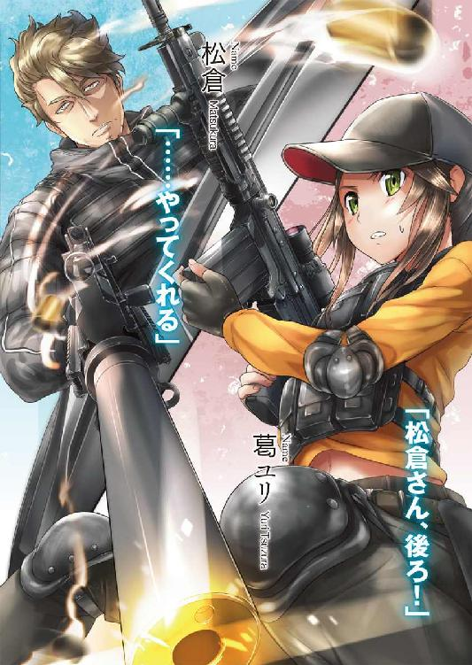
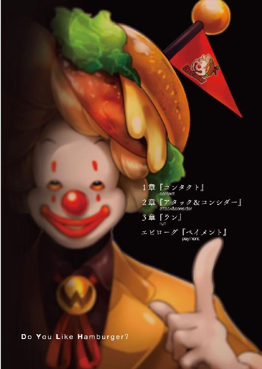

| デスニードラウンド ラウンド 01 | |
| アサウラ | |
| オーバーラップ (2013) | |




この物語はフィクションです。
実在の国名、固有名詞等とは一切関係ありません。
１章『コンタクト』
戦争から四年、紛争から三年......今もなお人々の間で語られる噂がある。
北海道独立戦争において唯一本州に上陸し、猛威を振るった道軍最狂の部隊。そして、泥沼の形相を示していた栃木群馬間紛争を終結させたといわれる不死身の部隊。この二つの部隊はどちらも公式記録には存在せず、兵士達の間でだけ語られ続ける噂である。
驚くべきはこれら二つの話に登場する者達が、実は同一の部隊であった、という噂もまた存在することだ。
事実、当時最前線にいた兵士達は口を揃えて語る。
――そいつらは特殊な装甲を身につけ、髑髏のようなマスクをつけていた。
硝煙弾雨の中にだけ現れる亡霊、はたまた死した兵士を利用して作られた生ける骸......それら幾つもの名を持つ彼らは実在したのか。そして実在したのなら如何なる者達なのか。長年多くの記者が探し求めた答え――それを、当番組はついに入手!!
噂の真相、知られざる真実の姿......その証拠となる三二枚の写真、今夜ついに公開!!
『秘匿されし伝説 ～幻の部隊を追え！～』 本日二一時よりオン・エアー！
壁に掛けられているテレビには、ババーン、というチープな効果音と共に若干写りの悪い写真が表示される。特殊な装備で全身を包み、銃を持った兵士達の姿だった。
特番のＣＭが終わり、今度はハンバーガーショップのＣＭだ。バンズに挟まる焼きたてのビーフパテ、糸を引くチーズ、熱々なのが見るだけで伝わってくるポテト。それらを提供する笑顔が眩しい店員達。バイト募集のＣＭらしかったが、それと同時に見る者にハンバーガーの魅力をこれでもかとアピールしてくる。
「......お腹空いたな......」
ソファと机、そして毒にも薬にもならない日曜日の午前中の番組を垂れ流すモニターだけの待合室で、葛ユリはすでに一時間以上待たされていた。茶請けの煎餅はとうの昔に彼女のお腹の中に消えていたが、さして腹の足しにもならなかった。
またＣＭが替わる。『デスニードラウンド』と呼ばれるテーマパークのものだ。それは『研究のために飼われているモルモットが飼育ケースの中で、カラカラ回る車輪を走りながら見る夢の話』をベースにした大人気施設だ。
逃れられぬ死から必死に逃れようとしてネズミは一生懸命走るけれど、車輪がただただ回るだけ。まるで迫り来る"死"が車輪を回せと強要しているかのように、ネズミはひたすらに走り、車輪を回し続ける......。
その基本設定は恐ろしくもあるが、実際の中身は愉快なマスコットキャラクターたちがたくさんいて、アトラクションもたっぷりな世界的にも有名になったアメリカ資本の巨大テーマパークであり、子供たちの憧れの場所でもある。元々がモルモットの夢の話ということで、夢の国とも称されていた。
ユリも幾度も足を運んで楽しい時間を送った記憶がある。一日という限られた時間で少しでもキャラクターに会いたくて、一つでも多くのアトラクションを楽しみたくて、彼女もまた車輪の中のネズミのように走り回ったものだった。
そんな時間は、もう訪れることはないのだろう。きっと。少なくとも、今しばらくは。
ため息が出た。ユリはテレビを見るのをやめ、先日、高校で出された宿題『近代日本における銃器の流通について』というレポートを書くことにした。
要は参考書などの中身をまとめて、何故日本には正規・非正規を問わず大量の銃器が持ち込まれたのかを沖縄でのクーデター、北海道独立戦争、そして栃木群馬間紛争を絡めて書き、最終的に銃器を根絶して平和な国を作るために自分達も日々努力し続けなければならないと締めれば大体マルを貰えるお決まりのものだ。彼女のように高校二年生にもなると、誰もが三、四回は同じような内容を書いた記憶があるはずだった。
別に難しいことは何もなく、あくまで面倒なだけの宿題。そのはずなのだが、今のユリにとってはやや別のところで困難を覚えてしまう。
今、ユリがいるのはその銃器を扱い、合法・非合法を問わずに仕事を行う組織の組合所なのだ。そして、自分もまた、これからそこで仕事をもらおうとしているという事実が、彼女のペンを重くしていた。
「......良心が微妙に痛むんだよなぁ。ひょっとしてそういう気持ちを味わわせることで、こういう世界に身を置くんじゃないぞっていう教育委員会からのメッセージなのかな」
仮にそうだったとしても、もはや遅い。すでにユリは訓練を終え、引き下がれないところまで来てしまっている。何よりここを諦めれば自分を諦めなくてはならない。
ユリの借金は死ぬまで股を開き続けるか、どこぞへ内臓を売り飛ばすか――最悪それらの合わせ技でようやく返済といった額なのだ。どれがマシとは言えないが、さすがにまだ己の体を売れるほどの覚悟はなかった。
銃器を扱うといっても必ずしも人を殺すわけではない。そう自分を納得させて、まだ一六歳のユリはこの道に入ることを決めたのだった。
何より、銃を使ってお金を稼ぐなんて何だかカッコイイ。そう思ったのだ。
割り切ってレポートに偽善を書き連ね始めて十数分、待合室の扉が静かに開き、太った男が現れたのでユリはペンを置いた。
山田というユリの担当者だ。日本人にはまず似合わない大きなサングラスを掛け、まん丸い体型をした男だった。
「えー、葛ユリさん。俺の独断だけど、あなたのケツ持ちを決めました。多分、要望だった住み込みってのもＯＫだと思うよ。それじゃ、案内するから準備して」
ありがとうございます！ と、ユリは立ち上がって頭を深々と下げた。
今日から新たな人生が始まる。借金こそ変わらないが、これで返済のメドが立ったというもの。学生と傭兵の二足の草鞋だが、どちらもおろそかにせず、両方を頑張って行こう。
葛ユリは未来への希望を胸に宿し、鼻息を荒くするのだった。
「これで、よしっと。うっし、気合い入れて行くぞ」
前髪の具合を調整し、最後に葛ユリはトイレの鏡の前で己の姿を眺めた。
基本肩口までの髪ながら、左右のサイドヘアだけはやや長めに伸ばした少し変わり種のセミロング。さらに、左右の耳の上に花を模した髪留めでアクセントを置いている。彼女のいつもの髪型ながら、今日はいつも以上に丁寧にセットしたものだった。
どこか犬のよう、と友達から言われる大きく元気さが溢れる目。いくら十代とはいえ、ここしばらくの酷い食生活が嘘のように張りのある肌。学校の制服に包まれた体は女性としてのアピールこそやや少ないが、その代わり以前まで続けていた部活のおかげで長く、健康的に引き締まった四肢......。
全体的に年齢の割に色気というものが薄いのだが、それを誤魔化すために今日、ユリは普段ろくに使わない化粧品で派手になりすぎない程度に薄く顔を飾った。これから仕事仲間になる人達と初めて会うのだ、悪い印象は持たれたくはない。
よしっ、と再びユリは気合いを入れ、手洗い場に置いておいたショルダーバッグを肩から掛ける。......途端に少年っぽさが増した。胸の間に紐が喰い込み、普通はその形やサイズが強調されて若干セクシーになるはずなのだが、逆に哀れさが漂う。当然それにユリ自身も気が付くが......見なかったことにした。
前向きなのはユリのアピールポイントの一つなのだ。......時と場合によっては単なる現実逃避とも言うのかもしれないが。
多分この場合は後者だと彼女自身気が付いていたが、それは無視した。前向きだから。
遅くなりました、と、トイレから出るとすぐにビルの地下にある駐車場へ走り込む。ＳＵＶが停まっており、運転席から山田が手招きしていたので急いで助手席に飛び乗った。
「いやぁ制服姿の女子高生とドライブなんて、初めてだよ。それじゃ行こう」
車を発進させつつ、アハハハっと、柔らかそうな頬の肉を揺らして山田が笑う。
ユリは愛想笑いを浮かべるのだが、そこでおかしなことに気づいた。
まん丸い山田が先程よりも丸くなっている。分厚い防弾ベストを着ているのだ。
「あの......山田さん、それ、何でスかね......？」
ユリの問いに山田は「あ、そうそう」と言って腕を伸ばし、グローブボックスを開く。
「それ、今、使っていいよ。後で返してね。弾はおまけしちゃう！ アハハハ」
グローブボックスの中にあったのは、ハンドガンとその弾薬。無骨で、何だかグリップ周りに微妙なセンスが漂うポリマー製の黒いセミオートマチック。スタームルガーＰ95。
え？ と、ユリは今一度山田の顔を見る。今使うって何？ と視線で訴えかけるものの、サングラスの奥の瞳は車の行く先を見るばかりでこちらを気にしていない。
ユリの中で警鐘が鳴り始める。何かがヤバイ。山田のわけのわからないノリのせいで誤魔化されていたが、彼の装備といい、ひょっとするとこれは......いきなりえらい所に連れて行かれるんじゃないのか。
そう感じた直後、それを裏付けるかのように車外の風景が変わり始める。
街を走っている車が徐々に減っていき、Ｕターンする車、脇に車を停めて顔を出しているドライバー、そしてユリ達とは逆方向に走っていく歩道の人々。
決定的なのは、ＳＵＶのエンジン音を貫いて耳に入ってきた大量の銃声だ。
「お、松倉の奴、派手にやってるなぁ。あれは武島の軽機関銃かな？」
「あの、ひょっとしてこれ......思いっきり実戦だったりします？」
「あれ？ 言わなかったっけ？ 思いっきり実戦のど真ん中に行くよ？」
「いっ、言ってないですよ！ これから仕事仲間になる人の所に行くって......！」
「だから、今踏ん張ってる連中がさ。ちょっと応援欲しいって言ってるからさ」
ユリは慌ててグローブボックスの中を漁る。握り取ったＰ95はやや軽く、弾が入っていないのが知れた。弾薬ケースから慌てて中身を取り出し、それを空のマガジンに押し込んでいく。手に汗が浮き、弾が滑ってうまく入っていかない。しかも一〇発は入るはずだが、マガジンのスプリングが強すぎるのか、それとも焦りのせいか、ユリの力では九発以上硬くて入らなかった。もしかしたらすでに一〇発入れたのかもしれない。わからない。
銃声が大きく聞こえ始めたので、最後の一発は諦めた。
ユリはマガジンを装填、スライドを引く。どの銃でもそうだが、弾薬がチャンバーに装填される際の音は不思議と気持ちが良い。たとえ、こんな状況だったとしても、だ。
銃声の中、ついに爆音までが聞こえてきた。慌てて窓の外を見やれば、消防車やパトカー、救急車すら路上で停まり、何かを無線で遣り取りしていた。
片隅とはいえ東京の、晴れ渡って気持ちのいい日曜日の午前中だというのに何だ、この状況は。ユリは徐々に現実味が薄れていくのを感じる。夏休みを利用し、一ヶ月半もの訓練を積んだのに、実戦に行くのだとわかった瞬間から膝がかすかに震えている。
きっと心構えもなく、いきなりだったからだ。しかもグローブボックスに放り込んであるような安い銃しか装備がないからだ。ユリはそう思いこもうとした。
そうでなければ......こんな仕事、続けてはいけない。
山田に電話がかかってきて、ＳＵＶは商業ビルの裏手に停まった。
「このビルの地下食品売り場が地下鉄の駅に通じてる。急ごう。ちょっと遅れてる」
山田がＳＵＶの後部座席からＭＰ５を取り出し、さっさと車を降りた。だが、ユリはここで抵抗を覚えずにはいられない。辺りにはまだ、大勢の人がいるのだ。
老若男女が数百メートル先から聞こえてくる銃声に何が起こっているのだろう？ と、疑問を持った顔で路上をうろうろしている中に、武装した山田が平然と歩いていく。
当然のように悲鳴を上げる女性や、逃げようとして転んで泣き始める子供など、一瞬にして大混乱が生まれてしまった。
山田から逃げようとしている人々が銃を握るユリに気が付き、また悲鳴を上げて逃げていく。たまらずユリはショルダーバッグの口を開け、その中に銃ごと右手を差し込んだ。
「こ、これ、ヤバくないですか!? 超ヤバイですよね!?」
いいからいいから、ついてきな。山田はまた頬を揺らして言って、ユリをビルの地下へと連れて行く。当然、そこでも阿鼻叫喚の有様だ。さすがに銃を持った警備員が慌てて現れるが、山田は身分証を示すだけで意に介せずメトロの駅との連絡通路へ進んでいく。
ＭＰ７を構える鉄道警察が待ちかまえていたが、そこも山田は銃ではなく身分証を掲げることで押し通った。未成年バリバリのユリについて何度か問われたが、小指を立て「俺のコレ！ なんつって！」と笑うだけで、スルーだった。
改札を飛び越え、地下ホームへ。トラブルにより運転中止の文字が明滅する掲示板だけが唯一の動くものとなったホームに、山田とユリの二人の足音が響く。人気はなかった。
「松倉、どこだい！ 助けに来たぞ！」
山田がホームに声を反響させた途端、唐突に人影が現れた。
ホームに無数に並ぶ太い柱の陰から現れたようにも見えたが、ホーム下、いわゆる万が一にも人が落ちた場合の、待避エリアに身を潜めていたようだ。
松倉と呼ばれた男は顎髭を生やした、強面な顔つきながらどこか寝起きのような目をした男だった。コンバットブーツにカーゴパンツ、Ｔシャツの上には黒のタクティカルベスト、それにレッグホルスター、手には近代化したＡＫといった出で立ちだ。
マガジンのカーブ具合からするに小口径高速弾を用いるＡＫ74ではなく、大口径の弾を使用するＡＫ47の系統なのだろう。それら二種は外見がほとんど同じなのだ。
その銃のレールの上にちょこんと載る小型光像式照準器が、ちょっとかわいらしい。
ふと、ユリは松倉の腕に貼られていた部隊章に目が行く。半面髑髏、半面ジャック・オー・ランタンの顔が描かれたそれは、ユリに少し早いハロウィンを連想させる。
「ここだ。......山田さん、話が違う。楽な仕事じゃねぇよ、これ。影武者に喰い付かずに、完全に敵主力が俺達に向かって来たぞ」
「正規の警備を丸ごと偽者につけりゃさすがに欺けると思ったんだけどなぁ。ごめんごめん。んで、護衛対象は？」
やる気がないように喋る松倉と、笑うように喋る山田の二人の会話は、一歩引いて聞いていると飲み屋かどこかでのそれのようだ。間が抜けた、という感じなのだ。
待避エリアから薄汚れたスーツの男がはい出てくる。これが護衛対象なのだろう。
「よし、それじゃさっさと逃げよう。えーっと、大野と武島は......死んだの？」
「いや、敵を引きつけるために囮として地上で踏ん張らせてる。俺とＶＩＰだけ、地下に潜って一駅分、路線を走ってきた」
「どうりで待ち合わせが地下なのに、外で銃声が聞こえてたわけだ。捨て駒扱いかぁ」
「ヨーヨーみたいな連中だからな。投げても戻ってくるさ。万が一ってことになっても、敵にヤンとマーの双子が雇われてるんじゃ、仕方ない。アイツらは相変わらずいい腕だ。......それよりその未成年は何だ？」
あぁ、と山田がユリの顔を見た時、全員の顔に緊張が走った。潜めた足音が、かすかに聞こえてくる。複数だ。線路の先、暗闇の中から近づいている。
「葛さん、ＶＩＰを連れて俺の車に行って、逃げちゃって。当然、銃を出して。何もないと思うけど、万が一の時は発砲して。いいね？ はい、すぐに行って。これ鍵ね」
「未成年に銃を持たせるなよ。誰がどう見たって非合法だぞ」
「松倉達の得意分野はそっちだろ？ 今更言いっこなしだって。それに女子高生の非合法傭兵なんて客にウケるよ、きっと。アハハハハ」
足音が近づいてくるということは即ち、武装した敵が来るということだろう。それなのに平然と喋る二人に、ユリは得体の知れない気持ち悪さを感じた。
しかし会話こそ日常のそれだが、二人の体は自然に銃床を肩に寄せ、重心を落とし、臨戦態勢に入っている。いつそうなったのか、見ていたはずのユリにすらわからなかった。
二人はあまりに当たり前に、日常の中に非日常の行為を織り交ぜている。
山田に促され、わけがわからないままユリはスーツの男の腕を取った。すでに顔に生気がなく、スーツのパンツには失禁の跡もあったが......気にしている場合ではない。
銃声、フルオートだ。線路の奥から飛来したそれは明らかにユリを狙っていた。初弾が近くの柱に着弾し、反動を抑えきれていないのか、弾着が上方へ這う。柱の破片が散る。腰が抜けそうになって、スーツの男共々床を転がった。
松倉達がそれぞれ違う柱に身を隠しながら、応戦開始。セミオートの速射による９ミリ弾と７・62ミリ弾、二種類の銃声がリズミカルに響く。ホームに轟くそれが、耳に痛い。
遠くからうめき声が上がり、松倉か山田の弾が有効弾になったのだと知れた。
そんな戦いを背に、ユリは立ち上がり、走った。失禁男の腕を引っ張り、一路地上へ。
階段を駆け上り、改札口へ。そこに突っ立っている鉄道警察はいい装備をしているくせに一切動こうとしない辺り、今の日本の有様を示していた。
ここに来る道中も、警察などは路上に止まり、あえて現場に急行しようとはしていなかった。――危ないからだ。法や制度が現実に追いついておらず、日本の警察に支給されている火器よりも、犯罪者や民間人が個人で持つ銃器の方がはるかに高性能であり、また使用者の練度も高いのが昨今の有様だった。そのため一般の警察官は銃撃戦が起こった場合、あえて動こうとはせず、一段落が付き、さらに応援が大量に駆けつけてから行動を起こすようにいつの時代からか切り替わってしまっていた。
だから、ユリのような十代の子ならば幼い頃から『銃声が聞こえたら逃げなさい。誰も助けてくれないんだから』と言われて教育されるのが普通である。
銃を持った女子高生と、失禁男の組み合わせが果たして第三者からどのように見えるのか知らないが、連絡通路を抜け、地下食品売り場に到達すると、まだ店内にいた客たちが慌てて左右に分かれ、道を作ってくれる。その間をユリは走った。
もうどうにでもなれ、という気持ちだった。
山田のＳＵＶまで戻ってくると、男を後部座席に押し込み、自分は運転席に乗り込む。運転は最低限動かせるよう習った程度だが、問題はないはず。そう思ったのだが、何かがおかしい。......この車、マニュアルだ。
「うっそ、私ＡＴじゃないと無理だって！ オジサン、出来る!?」
後ろを振り返ってみるものの、失禁男は青い顔でガタガタ震えるばかりだ。一か八かエンジンを掛け、発進させてみようとチャレンジするものの、すぐにエンストしてしまう。
ハンドルに置いたユリの両手が焦りに震えそうになった。だがそんな時、ビルの中から二人の男が後方に銃口を向けたまま――こちらに背を向けた状態で現れる。山田と松倉だ。
ユリにはその三十代前後のデブと顎髭の男が天使のように見えなくもなかった。
「葛さん何やってんの!? もういいから早く、助手席行って！ 松倉ももういいから、早く乗れって！ もう撃つなって、一般人に当たったらどうするつもりだい！」
「その時はもう一回撃つさ。どうした、ほら、早く出せよ」
山田の方はさすがに慌てていたが、後部座席に飛び乗る松倉の方は先程と変わらず落ち着いた口調だった。
車が走り出すと同時に完全武装の男達がビルから飛び出してくる。走り去るＳＵＶに気づき、銃を構えた。
だが、彼らの銃弾が飛来する前に山田はハンドルを切って道を曲がり、その射線から何とか逃げおおせたのだった。
「アハハハ、今のはちょっと危なかったなぁ」
「山田さん、俺達の今回の仕事は今日で終わりだったはずだよな？ 契約の延長はなしだ。内通者がいる護衛任務は趣味じゃない」
「わかってる、そういうのが得意な連中に回すよ。代わりといっちゃ何だけど、さっき入ってきた面白い仕事があるんだ。どうだい？」
「子供の面倒を見ろっていうんならお断りだ。人手が欲しくなったら昔の仲間を呼ぶ」
「そう言うなって。応援が欲しいって言ったのはお前だろ？......え？ 何、そういう意味じゃない？ 知るかい、そんなん。アハハハ！ とにかくさ、この子、親の借金のせいでまともに生活も出来ない状態なんだよ。松倉んとこは、ほら、女性メンバーいるし、詰め所は広いし、いいだろ？ それにお前んトコはメシがいい。喰わせてやってくれよ」
明らかに断ろうとしていた松倉が、最後の"メシ"のことが出た瞬間に口を閉じた。
ほら、と、山田がユリの太ももを叩く。
今のようなのが仕事だというのなら、正直もう嫌だったが、車内の雰囲気はすでにそれを言えるものではなかった。彼女が言える言葉は、もはやただ一つしかない。
「あ、あの、よろしくお願い......します......」
松倉が首を振り、何か言おうとするのだがそれを山田が遮る。
「まっ、それはそれとしてだ。どうだい、面白そうな仕事、やる？」
「こいつを預かるって話がそれじゃなかったのか」
「借金まみれのこの子の面倒見たってどこからお金が入ってくるんだい？ そうじゃないよ、もっと、松倉達にピッタリな......ヤバイ仕事さ。ギャラもいいんだこれが」
「そうだな。大野と武島が五体満足で帰ってきたら......考えるよ」
それはやるってことだね。山田はそう言って、笑った。
「葛さん、そんな不安そうな顔しないでよ。初陣はね、ヤバイ方がいいっていうのが俺の持論。それで生き残れるなら今後しばらくは大丈夫だよ。頑張ってね」
「......初陣で死ぬってことは......？」
スッゲーよくある！ と山田はまた笑い、ユリのテンションを地の底に突き落とした。
「そういうわけでさ、仕事をする上でちょっと質問があるんだ。松倉、葛さん......ハンバーガーは好きかい？」
１
ユリは信じられない物を見るような目で、ゴクリと唾を飲んだ。目の前に用意されていたのは、ここしばらくの食生活からでは考えられない代物である。
かき揚げ丼だ。二センチを越える厚さのかき揚げが堂々と丼に載せられており、下の飯を隠しきっている。揚げ物特有のうまそうな匂いがヤバい。とにかく、ヤバい。そこに甘じょっぱいタレの匂いが混じるのだから、すぐにでも箸を差し込みたくなる。
ユリは目の前のそれから視線を外し、違うことを考えることにした。
そこは、足立区にある倉庫のような一軒家だった。というか、恐らく倉庫だったのを改築したと思しき建物だ。ちょっとした体育館くらいはありそうな広さで、水回りこそ家の奥に扉と壁で区切られているが、それ以外はパーティションで区切るようなこともせず、だだっ広く使用していた。冬になると寒そうだ。
土足ＯＫのコンクリートそのままの冷たい床、部屋の中央には大きなカーペットが敷かれ、その上には大きなちゃぶ台が一つ。そして、昨今銃器を扱う犯罪が多発しており、最近では何故か特定のバーガーショップのバイトが狙われて云々といったニュースを垂れ流す大型のテレビがその近くに置かれ、それと繋がる配線はうねる無数の蛇のように乱雑に伸び、壁の中に吸い込まれていた。
またそんな壁をロッカーや調度品の収まった棚、何かの作業台などがズラリと並んでそのほとんどを埋めているのだが、それらはカーペットの上からでは手が届きもしない距離である。まるでワンルームの部屋をそのまんま巨大化させてしまったために逆に使い勝手が悪くなってしまった感じ......というのがユリの感想だった。
仕切り板か何かで程よいサイズに区切った方が使い勝手がいいだろうに。そう考えずにはいられない。とはいえ開放的な高い天井と、そこに付けられた眩しい程の照明は、悪くない。落ち着くかどうかは別として、だが。
少し気になったのは土足エリアの片隅に、一対のソファが机を挟むように設置されていることぐらいだろう。そこだけまるで応接間か何かの調度品を持ってきたかのようだ。
匂いがユリの顔を惹きつける。ヤバいと思ったが腹が鳴ってしまう。
しかし、それと同時にギギギという嫌な音を立ててそこの玄関......というよりは倉庫そのままの大きなシャッターが開き、運良く腹の虫のいななきは打ち消されたのだった。
「おぅ、生きて帰ったか。丁度いいタイミングだ。銃のクリーニングは後にして、先にメシにしよう。双子は堕とせたか？」
部屋の奥にあるキッチンスペースから顔だけ出し、松倉は声を響かせた。
シャッターから現れたのは、武装した眼鏡の男とひび割れたサングラスの女。
「いや、ダメでしたね。やっぱあの二人ムチャクチャ強いですよ、今回の装備じゃいろいろ足りなかったです」
眼鏡を掛けた童顔の男が応じる。彼の背には巨大なリュックサック、肩からはモスバーグＭ５９０がブラ下がっていて、まさに戦場帰りといった雰囲気の格好だ。だが、そこいらにいそうな、何だったら大学生か高校生と言っても通じそうな顔つきをしているため、見ていると何だかおかしな感じがした。
モスバーグを玄関横にあるロッカーの中に無造作に放り込み、彼はそこから取り出したタオルで額から流れていた血を拭った。
「煙草切れたんで、帰ってきたわ。あともう一箱あれば、ヤンの方ぐらいはどうにかなったと思うんだけど」
もう一人の女が言った。これもまたおかしな女だった。手にはベストと、ドラムマガジンを差したままの軽機関銃。それはほとんどＡＫを引き伸ばしたような、一メートルを超える細長いデザインのため、日本人の体格には不釣り合いなものだが、彼女には不思議と誂えたように似合っていた。
それは手足がスラリと長く、一八〇センチを超える長身のおかげだろう。また体はただ細いだけでなく、引き締まり、かつ、しなやかなラインであり、そのくせして出るところは出ているのでほとんどモデル体型だ。肌も、驚くほど白い。白色人種の血がいくらか入っているのかもしれない。サラリと真っ直ぐな長い彼女の髪の毛も金髪......ではなく、黒毛を金髪に染めたものをほったらかしているのか、少々プリンのようになっていた。
彼女はＲＰＫを大野に投げ渡し、さらにサングラスをロッカー横のゴミ箱に放り込む。肉食獣のような深みのある吊り目が現れ、それがユリを捉える。ゾクリと来るような、そんな目だった。狐や虎や狼の魔性を宿したそれをユリは思い出す。身がすくむようだ。
彼女は訝しげにユリを見ながらブーツを脱ぎ、カーペットに上がる。ピッチリとしたジーンズの膝を覆っていたパットを取ってどこぞへ放り投げると、ユリの隣に座った。彼女の全身にこびりついている硝煙――いや、雷管の匂いが、かき揚げのそれを押しやった。
「あ、あの......私、こちらでご厄介になることになりました、葛ユリといいます。一六歳です。アピールポイントは『前向きなところ』で、あ、そうだ鞄の中に履歴書が......」
脇に下ろしていたショルダーバッグから慌ててフォルダに挟まる履歴書を取り出すものの、一瞬目を離した隙に......女はかき揚げ丼を貪り喰っていた。ユリの、それを、だ。
――絶叫。即座にキッチンからキンバーのガバメントを握った松倉が顔を出し、ロッカーで血を拭っていた男が驚くべき速さでショットガンを再度手にし、構えてみせた。
「わ、私の......私のかき揚げ丼があぁああぁああぁ!!」
もぐもぐと子供のように頬を膨らませて咀嚼する武島がポカンとした顔をする。
「......松倉、これ、悪いのアタシ？」
「世間一般じゃな。ユリ、先に喰ってろと言ったろ。冷めると味が落ちる。揚げ物は揚げ立てが一番だ。その頭のネジが外れた女は......武島は、それを気にしてお前の分を――」
「いや、単に腹減ってたからだけど。とりあえずビールくれぇい」
お前はもう黙ってろ、と松倉はのっぺりとした口調にかすかな苛立ちを込めてキッチンへ戻って行くも、すぐにお盆にかき揚げ丼と味噌汁、そして缶ビールを三人分、さらに漬け物の小鉢を載せて現れる。
目の前に新しいかき揚げ丼が置かれ、ユリの心が震えた。松倉と眼鏡の男も座り、彼らがビールで無言の乾杯をするや否やユリは躊躇うことなく箸を持つ。
遠慮している場合ではない。奪られるぐらいなら失礼覚悟で掻き込もう、そう思った。
松倉達が喉を鳴らしてビールを飲み続ける、そのゴクゴクという音をＢＧＭに、ユリの箸は丼に襲いかかった。
箸先でかき揚げを押し切ると、ザクッといい音。万感の思いで頬張れば、その快活な音が今度は口内で鳴り響いた。
素人が作るとどうしてもべっちゃりとしてしまうかき揚げだが、これは見事だ。揚げ立てというせいもあるだろうが、分厚いかき揚げは全体が軽やかに仕上がっている。厚いが、衣は少なく、小エビ、細切りにしたニンジン、ゴボウ、玉ねぎの具材を繋ぎ止めるにとどめているが故に、かき揚げは格子状に形成されていて、見た目のインパクトほど重くはない。また、だからこそ全体に満遍なく油が回り、ザックリと見事に揚がっていた。
また松倉の工夫もうまい。このかき揚げ、半分だけとろりと甘い天丼のタレを纏っているも、もう半分にはかかっていない。だからこそ、その至福の食感をたっぷりと楽しめる。
タレを含み、柔らかになっていくかき揚げと共にご飯を頬張るのもいいが、揚げ物の醍醐味である食感も失いたくはない。そんな要望を満たしてくれる。当然そうなると味が薄くなりそうなものだが、かき揚げを載せる前にタレをしっかりご飯にかけてくれている心遣いが嬉しい。
ただのかき揚げとご飯だけでも嬉しいのに、それがこんなに丁寧な気遣いのある料理だ。口いっぱいに頬張り、それが喉を通り抜ける時、かすかに目に涙が滲んでしまう。
っぁあーっ！ と、武島が缶ビールを一息に飲みきった。
「あーうめぇ。仕事終わりの一杯は効くわ、やっぱ。......あっ、忘れてた。で、松倉、コイツ何？ 大野がついに童貞捨てるためにどこかから拉致って来たの？」
「ひ、酷いな。ここずっと一緒にいたくせに、そんなことするわけないだろ」
「うるせぇ、口答えすんな。百年早い。童貞臭ぇ顔しやがって」
童顔の眼鏡の男は、大野で童貞ということらしかった。だが、ユリには今、どうでも良かった。おいしいものを口いっぱいに噛みしめている時に、余計なことを考えたくない。おいしさだけを、今は感じていたい。
タレのかかったかき揚げは、食めば揚げ物の香りと共にタレが染み出て、ゴボウやエビの風味が漂う。ご飯が止まらない。タレ漬けなしの部分は食べるにザクリと気持ちが良い......それはもう、快感だった。んふぅ、と鼻息と共に満足気な声が漏れてしまう。
また、口の中をさっぱりさせる浅漬けもいい。白菜とミョウガという組み合わせのそれ。風味がいい。爽やかだ。
「山田さんから押しつけられた。借金まみれなんだそうだ。しばらくうちで面倒見ることになった。そこに落ちてるのが履歴書だな、武島も暇なら見ておけ」
「うげっ、面倒くさいなぁ。え～っと、なに......クズ？」
「あ、それ、ツヅラって読みます。ツヅラユリ、です」
「クズじゃん」
「......まぁ、そうなんですけど」
"葛"という苗字は少し珍しく、大抵の人の場合はクズか、葛飾区からカツだと読むが、ユリの家系ではツヅラと読んだ。
「未成年なんだし、そこいらで股開いてりゃそこそこ金入んでしょうが」
「......それはちょっと嫌で......。あと、生半可なやり方じゃ、全然足りなくて」
それで喰うに困ってこんな所に、か。大野がボソリと呟くと、哀れみの目をしながら、手を付けていなかった己のかき揚げを丸ごとユリの丼に載せようとしてくれる。
あぁ何ていい人なんだろう！ 一瞬にして好きになってしまいそうな気持ちを胸に、ユリは大野からの施しを素直に受け取ろうとする。だが、大野の手を松倉が止めてしまう。
「かき揚げと飯のバランスが崩れる。お代わりはある、そういうことはやめろ」
「そうだぞ、大野。そういう行為で安易にヤレると思ってるからいつまでも童貞なんだ」
大野がショボくれた顔をして自分の丼にかき揚げを戻した。
お代わりがあると聞いて、ユリは大事に食べていたかき揚げ丼をさっさと腹に押し込むと、早速二杯めを貰う。自分でやるつもりだったが、ビールを持ってくるついでだとして松倉がやってくれた。
「案外よく食べるね、アンタ」
「私、結構燃費が悪いんです。それにこんなにおいしいんですから、つい。......最近はオカラとパンの耳とかしか食べてなくて。だから、本当にこれ、最高です！」
大野と武島の二人はさすがに眉根を寄せてユリの顔を見てきた。
「ほれ、お代わりだ。いっぱい喰っとけ」
ワーッと、ユリは喜んで松倉からお代わりを受け取ったところ......驚いた。ご飯が大盛りになり、かき揚げが二段重ねだ。
い、いいんですか!? ユリは思わず叫ぶように言い、松倉の返答が来るより先にかき揚げの山に齧り付いた。あまりの幸せに、たまらず涙が零れた。
「松倉、お前、料理うまいって言われて嬉しかっただろ」
黙って喰え。松倉は寝起きのような声で、ビール片手にニヤニヤ笑う武島に言った。
そんなユリにとって数ヶ月ぶりの真っ当な食事を終えてから数十分後、来客があった。
ゴツイ体にゴツイ顔の男。彼こそ山田が言っていた"面白い仕事"の依頼主だった。
松倉達は挨拶より先にあの髑髏とカボチャの部隊章を見せると、彼はどこか苦々しい顔で頷き、仕事の内容を話し始めるのだった。
有名バーガーショップである『ワックマインド』、通称ワック。そこのマスコットキャラクター、ロナウダ・ワックマインドを殺して欲しいのだ......と。
２
「......え？」
ユリは信じられない物を見るような目で、ゴクリと唾を飲んだ。目の前に用意されていたのは、ここしばらくの彼女の食生活からでは考えられない代物である。
ハンバーガーだ。それも、先程かき揚げ丼を限界まで胃に収めた直後だというのに、ユリの前には大量のハンバーガーが山積みで置かれているのだ。
貧しさが極まって自分は夢でも見ているのではないか。そう思って周りを見渡すが、何もおかしなことはない。そこは銀座のデパート店内にある日本における旗艦店のワックであり、ユリ達がいるのはその店内一階の片隅にある四人掛けテーブル席。そして目の前には大量のバーガーとポテトとコーラである。
......え？ と、今一度ユリは呟き、先程食事を終えたばかりなのに平然とバーガーに齧り付く松倉達を見やった。
「ユリ、遠慮しなくていいぞ。これも経費だ。好きなだけ喰え。値段なりにうまいぞ」
松倉が喰いながら言うと、四口でバーガー一つを平らげた武島が不満の声を上げた。
「ワックはたまに無性に喰いたくなるんだよなぁ。っつぅかさ、松倉、経費だっつぅんなら、何でこんなノーマルなバーガーとか、チーズバーガーばっかなわけ？ もっと他のバリエーションにしなよ。何か、物足りない」
松倉はともかく、武島は先程ビールを四缶、さらに自分同様かき揚げ丼をお代わりしていたはずなのだが......。何かがおかしい。しかし唯一大野だけはユリと同じ気持ちらしく、ノートＰＣを開きながら、辟易した顔でポテトをつまむばかりだ。
ただ、そのポテトとて極論的に言えば油と炭水化物の塊であり、とてもじゃないが、これもユリの喉を通る代物ではなかった。辺りを占める油の匂いが酷く胃を重くする。
貧乏になる前からして大食いだと自称していたユリだったが、ひょっとしたら井の中の蛙というやつだったのかもしれない。
「あの......私達って、何しにここに来たんですかね......？」
「さっき説明しただろ。仕事だ、お前の初陣だ。ただ今回はまだ事前調査だがな」
「え、えぇ、わかるんです。わかるんですけど......何故ここでバーガーを？ それにあの依頼もどこかおかしいですよ。何だか言っていることが滅茶苦茶でしたし」
依頼は、様々な意味で常軌を逸していた。
ロナウダを殺して欲しい。それも銀座店にいる、オリジナル・ロナウダを......。
バーガーショップのマスコットキャラクターを殺す、それがどういう意味なのか、正直ユリには理解しかねた。ただここ一ヶ月ほど、全国のワックのバイトが次々に殺害されているというニュース報道が頭を過ぎりはした。
もしかしてそれと何か関係があるのか。だとしてもバイトとロナウダというキャラクターでは何かが違うはずだ。
松倉はバーガーを食べ終えると、続けてチーズバーガーに手を伸ばす。
「山田さんの方からの依頼書を見た。喜べ、お前の初陣はかなりヤバイぞ。察していると思うが、これは表の仕事じゃない。俺もさっき山田さんに確認したが......依頼主の方から、荒仕事に特に慣れたチームを、という指定があったそうだ」
「並のトコじゃ手に負えない仕事ってわけですね、オレ達にお似合いだ」
「仕事は非合法に限る。わかる、ユリ？ この手のはね、どんな手段でも使えて割がいい。依頼主に背中を撃たれるのだけは怖いけど、そこは組合の人間がどうにかする。そうやって助けあって、大きく稼ぐのがウチらの仕事」
武島がそうさらりとまとめるのだが......如何せんそんなことはどうでもよく、ロナウダ云々というのがユリにとっては理解出来ないところだった。
「ユリ、アンタはアンタの知っている事だけが世界の全てだと思わないように。一般人が知っているのは世界の表層だけで、その夜は信じられない程深くて濃いもの。......以前、似たような仕事を受けたこともある。あれはまぁ正真正銘の化け物だったけど」
「そ、それってどういう......？」
武島に疑問を投げかけようとしたユリの言葉を、松倉が遮った。
「ただユリの言い分はもっともだ。オリジナル・ロナウダ......依頼主曰く、全国にいるロナウダと銀座店のロナウダは別物だと言っていたが、その意味するところまでは説明されなかった。ただ殺せ、だ。そのくせしてあの提示された額は尋常じゃない。どこぞの護衛付きの重役を殺せっつぅ依頼でもここまでじゃないだろう」
「それなんですけどね、松倉さん。どうも、最近報道されている件と関係があるかもですよ。......テレビでは報道されていませんが、昨今のワックのバイト殺害ってのは......みんな、イベントでロナウダに扮装していた奴らみたいです。その殺害方法ってのも、それなりのプロみたいで」
「だが、あれは全国での話だったはずだ。そうなると俺達のようなどこぞの組合に登録してる個人事業主がやれる仕事じゃないな。......もっとデカい組織になる。その関連性も調べるよう、山田さんに連絡しておけ」
まっ、とりあえずは様子見かな。武島が呟き、壁へ視線を送る。ユリも釣られるようにしてそれを見やると、そこには『毎週日曜日、お店にロナウダがやって来るぞ！ 楽しい仲間、みんな集まれ～！』というポップな文字と共に、ロナウダのイラストが描かれたポスターがあった。
どうも銀座店は旗艦店ということで、他とは扱いが違うようだ。他店ではせいぜい都内であっても数ヶ月に一度ぐらいしかないイベントが、ここでは週一で行われるらしい。
ロナウダ来場イベントは午後二時から。あと数分だ。広い店内の一階席のそこは、小学生の低学年からまだ赤ん坊まで、二〇人以上の子供と、それらの保護者という、まるでヒーローショウのステージ前のような有様になっていた。実際、先程から甲高い子供のわめき声や笑い声で騒々しいといったらない。
子供連れ以外の客は、ユリ達だけだ。他の一般の客はイベントと関係のない二階席に向かっていく。何も知らずに入店してきた者も、子供のうるささを一目見ればすぐに階段を探すほどだ。......そのため、ユリ達のグループはいささか浮いていた。
松倉が入店時に、未成年だというのが明らかな制服姿のユリが居れば場に馴染むだろう......と言っていたのだが、全然馴染んでいなかった。
一階席ということもあり、大きな窓で外から丸見えだ。かつ、松倉達はその窓際の席なのだ。通りを歩いていく人々が子供達の姿に頬を緩ませた後、無愛想な顔でひたすら大量のバーガーにパクつく松倉達を見て眉を顰ませていく。尋常ではない目立ち方である。
「......いきなり、ドンパチって、やらないですよね......？ こんな子供が大勢いる中で」
「さすがにやらないっての。今言ったように、事前調査。とりあえずオリジナル・ロナウダとやらを見てみましょうってわけ。......でもあのガキ共、うるさくて二、三発撃ち込んでやりたくなる。......何で最近はどこもかしこも禁煙なのかなぁ......あーもぅ！」
「落ち着け、ヤニ中。......来たぞ」
子供達が一斉に歓声を上げ、親達が拍手。異様に目立つピエロが店員と共に現れた。
ロナウダ・ワックマインド。バーガーを模した帽子からはみ出すもっさりとしたボリュームのある髪に、白塗りの顔。不気味に生々しい鮮血色の鼻と唇。黄色いジャケットに縞模様のだぶつくパンツ。爪先の丸まったブーツをダバダバ鳴らしながら子供達の前に来ると、彼はその長い両手を振り上げた。
「わー、こんなに一杯のお友達が来てくれるなんて、ロナウダ、嬉しいなぁ。ロナウダはね、子供が大好きなんだ！」
ミュージカルのように大きな動きをするロナウダに、子供たちがはしゃぐ。
「そうだ、よぅし、アレをやっちゃおう！ これをすると嬉しい気持ちや楽しい気持ちがさらにアップするんだ。みんな、ロナウダと一緒に......ルック♪ ルック♪ ミー♪」
ルック♪ ルック♪ ミー♪ と子供達が笑顔で一斉に声を上げる。自分に注目を集めるように、言葉に合わせて両手で己を指さし、最後に両手を振り上げる......といった動作を大勢で一緒にやっている光景は何とも微笑ましいものだった。
しかしながら楽しそうではあるのだが、ルック♪ ルック♪ ミー♪ ルック♪ ルック♪ ミー♪ と、繰り返し行われるそれを見ているとロナウダを教祖としたヤバイタイプの新興宗教のそれにも見えてくるから不思議だった。
ふと気が付くと、大野までも意外に楽しそうに子供と一緒に謎の呪文を唱え始めていたので、その頭に武島の無慈悲な拳が放たれた。
ロナウダが店員に耳打ちされると、彼は頭を掻く。
「やり過ぎだって怒られちゃったよ。ロナウダは嬉しくなるとついやり過ぎちゃうんだ」
てへへ、と舌を出すと子供達が大笑いする。ロナウダもまた、楽しそうに笑い......そして、ユリ達を見つけた途端、その目から、笑みが消えた。
ロナウダの笑みは変わっていない、それなのに彼の目から一切の感情が失せたのだ。
ぞわり、とした。その不気味なピエロの目に、落とし穴に落ちたかのような感覚が走り、鳥肌が立つよりも先に体がビクっと一瞬震える。
それは大野も一緒だったようで、彼も同じような反応をし、目を見開く。
一方、武島は平然とバーガーをまずそうに頬張り、松倉はバーガーを分解し、ピクルスが一枚しかないことに不満を述べていた。何も感じていないのか、それとも......。
「わー、嬉しいなぁ！ こんなにも大きなお友達まで来てくれているなんて！」
ロナウダがダバダバと音を鳴らして近づいてくると、ユリとその隣に座っていた武島を押し込むようにして、長椅子に座ってくる。
みんなどこから来たの？ 今日はパーティかな？ ハンバーガーはおいしい？ ロナウダが次々に質問を放ってくるので、松倉が落ち着いた口調で曖昧な返事をしていった。
ロナウダの目が、鈍く光り、彼は席を立った。
「よぅし、それじゃ......そろそろやっちゃおうかな。みんな、お待ちかねだよね」
子供達が待ってましたとばかりに再び歓声を上げ、親達が拍手をする。
「いくよ......ロナウダ・マジックス!!」
ユリは我が目を疑った。ロナウダ・マジックス。それはテレビＣＭなどで何度か見たことがある。ロナウダがそれを行うと、チープなＣＧ、もしくは合成映像で、子供達が楽しくなってしまう不思議な現象が起こる......というものなのだが......。
ユリ達の机の上にあったバーガーの包み紙のゴミが......白い花に変わったのだ。それだけではない、次々に客席の上で奇跡が起き始める。ゴミが花に、天井に星々がきらめき、そして店内には冗談のような虹がかかる。それは、ユリがテレビで見たその映像をそのまま現実にしたかのような、そんなあり得ない光景だった。
これにはさすがの武島も呆気に取られ、口を開けて店内にかかる虹を大野と一緒に見る。唯一、松倉だけが分解したバーガーを手にしたまま、眠そうな目で窓越しに歩いていく通りの人々を見やっていた。
子供達がロナウダに駆け寄ってきてその手を取り、自分達の席へと引っ張っていく。ロナウダはその微笑みをユリ達に向けて何か言いたげな視線を残し、席を離れたのだった。
「......す、凄いですね。何々ですか、これ」
「さぁな。だが、ゴミを花にして虹を作り出せるからといって、俺達の仕事に変わりはない。......大野、店の裏に行け。イベントは三〇分だけだ。奴が店外に出たらどこに行くのかを突き止めろ」
「あれ？ それじゃ何、松倉、一気にやるわけ？」
「わからん。何もかもがな。だから、とりあえず当たってみようと思う。......今夜だ」
松倉はテーブルの上の花を一つ手に載せると、携帯電話を取り出してパシャリと撮影したのだった。
３
「何でまたアンタはこんな仕事しようと思ったわけ？」
武島が運転席のシートを最大限に倒し、煙草を吹かしながら言った。すでに空は夜が覆い、彼女らが乗るワンボックスカーもまたその煙草の赤い火以外、そのほとんどを黒が塗りつぶしている。
ユリは何だか今朝よりもくたびれたように感じる制服の胸元に手を当て、その心中を語る。家族が自分を残して失踪したこと、借金取りにいくつかの選択肢を突きつけられた時、この道に行くことを決断したこと......。
「それで元米軍の兵隊さんがやっているところで、特別教育課程をクリアして......それで山田さんがいる組合を紹介してもらったんです」
親の借金と言っても、ユリの家族がしたものではなかった。夜逃げした親類の保証人になっていたせいで、とんでもない額の借金が一夜にして降りかかってきたのだ。
それは大きな問題だが、しかし大したことではない。本当の問題は家族が自分だけを置いて姿を消したという事実だった。思い出すに胸が苦しくなる。何とかしようと思い、自分を騙すように、現実逃避するように、前向きで生きていこう、それだけを胸に抱いてやってきた。うまく働けばきっと全額返せるはず。そうしたら失踪した家族を捜して、どうして自分を置いていったのかを問い詰め、謝罪させ......そして、また一緒に暮らすのだ。
それを考えた時、銃器の扱いや、実質裏側の仕事を半ば公式に請け負っていると有名だったあの組合は都合が良かった。借金取りから身を隠した家族を捜すには表からのアプローチだけでは無理だというのは、さすがにユリにもわかっていた。
ユリが様々な想いを込め、一通りのことを語ると......武島は腹を抱えて笑い始める。ユリの気持ちを踏みにじるようなそれだったが、しかし、怒りよりも何より、驚きの方が上回った。どこにも笑うようなところはなかったはずだ。
「松倉ぁ、アタシようやく読めたよ。何でコイツがうちに来たのかさ」
あぁ、俺もだ。後部座席――といっても運転席と助手席以外のシートは全て撤去されているのだが――から松倉のくぐもった声が聞こえてきた。
「アンタに銃を教えたトコの教官って、アルバートって男だったでしょ。......うん、やっぱね。そうだと思った。相変わらず、あそこアクドイ商法してるなぁ」
「え、何でですか？ そんな、先生のことを悪く言うのはやめてください！ 先生は、凄くいい人で、いつも私のことを考えて居残りの訓練とかまで付き合ってくれて......」
「そりゃ商売だからね。どうせ、アンタも銃の目隠し分解とかさせられたクチでしょ？」
「はい、私センスがあるって凄い褒められたんですよ。もちろん先生ほどじゃないですけど、新人じゃ考えられないぐらいに速いって言ってもらって」
「まともな教育課程に目隠し分解なんてあるわけないじゃん」
え？ と、思わずユリは耳を疑った。アルバートは銃の構造、扱いを完璧に頭に叩き込むにはこれが一番いい方法だ、というようなことを真面目に語っていたのだ。
松倉が鼻で笑う。
「目隠し分解なんて皿回しが出来るって言っているのと同じようなもんだぞ。見ずに速く出来るからってどんな意味がある？ 目隠しで速く出来るより、目を使ってもっと速くやる方がずっといい。スポーツじゃないんだ、使えるもんは全部使って最大スペックで事に当たるのが当然だろう」
きっと目がやられた時を想定して......！ と、ユリは反論しようとしたが、直後に目が使えないなら銃も使えないことに気が付いた。
「で、でも、軍にいた時は毎日のようにやって銃に親しんだって」
「アイツは米軍にいたはずだが、訓練に目隠し分解なんてないぞ。毎日のようにってのは仲間内で遊びでやってたんだろ。何より狭くてジャングルもない日本国内での戦闘を考えれば、急ぎで分解や組み立てを要求される状況なんてそうあるもんじゃないしな。あの紛争でさえ、前線から五キロ後方に下がればジジイとババアが孫と遊んでたんだ。敵地のど真ん中で、何の支援もなしに孤立するような状況なんてまずあり得ない。文化、人種、言語......それらが基本的に統一されているんだから、最悪、装備を捨てれば敵側だろうが何だろうが平然と街でハンバーガーが食える」
「......えっと......じゃ、何であんなことを......」
「素人相手なら凄そうに見えて、威厳が出る。アルバートはそういうのが好きだからな。それに教育課程がスッカスカだったら、金が取れない。......あぁ、聞いてないかもしれないが、多分かなりの教育料がお前の借金に上乗せされているはずだ、確認しておけ」
「今の松倉のにアタシから付け加えると、アンタ、やる前に何枚も書類にサインしたんじゃない？......やっぱり。多分、その大半がスクールのじゃなくて、保険関係だよ」
つまり、借金取りの思惑はユリが考えていたこととまったく違うのだという。てっきり辛い現場で働いて返せということかと思えば、そうではなく......死ね、ということらしい。
松倉が語るところによれば、恐らく今現在ユリにはかなりの額の保険がかけられており、これを借金取り達が手に入れるためにあえて危険の多いこの職を勧めたのだという。そして恐らく山田もグルであり、早めに保険金を回収するために、ヤバい仕事を好んで引き受ける松倉チームにユリを送り込んだ、ということらしい。
「ということはアレですね。葛さんと一緒に送られてきた今回の仕事って、相当にヤバいってことですね」
「大野、お前にしては珍しく冴えているな。きっとそういうことだろう。ユリが死ぬのを見込んでの仕事だ。......いいぞ、テンションが上がってきた」
言いながらも、松倉は相変わらず平淡な声だった。
「ちょっ、ちょっと待ってください！ そ、そんなのって......!! 山田さんも先生もそんな人じゃないです！ 思い込みでそういうふうに言わないでください！」
「諦めなよ、ユリ。アンタが考えている程、人間は善良じゃない。お金が貰えるなら人はいくらでも優しくなれる。......っつぅかね、本当の善人なら仕事紹介する前に弁護士紹介するよ。まぁ、もうアンタの場合、先に手を打たれて自己破産も何も出来ない状態になっているだろうけど。そもそも未成年なんだし、逃げ道はいくつもあったはずだからね」
愕然とするユリをよそに、後部座席にいる松倉と大野の準備が終わる。振り返って見れば......そこには全身黒ずくめとなった二人。
タクティカルブーツにカーゴパンツ、膝当て、やや季節外れなダボッと大きなフード付きのジャケット。それらは手袋も含めて真っ黒。顔には目の部分までもが黒いガスマスクもあるため、皮膚はせいぜい首もとが幾らか露出しているだけだ。
二人ともお揃いの衣装だったが、装備はそれぞれ違うようだ。互いにレッグホルスターを装備、腰にはベルトを巻いて、マガジンポーチやダンプポーチ、グレネード類がぶら下がっているものの、それぞれのメインアームが違う。大野はモスバーグＭ５９０に、松倉の方は大きな減音器を装着した45口径のＵＭＰだ。
松倉は銃に一点で保持する肩提げ紐を取り付け、大野と互いに装備を最終チェック。
「それじゃ、あとは打ち合わせ通りに。......始めよう」
車のスライドドアを開き、二人の男が夜の銀座へと飛び出していく。
銀座とはいえ深夜の裏路地は意外に狭く、薄暗い。終電を終えた時間帯ということもあって人通りも少なかった。そんな中に黒ずくめの男達が飛び出していくと、ふとすると彼らが闇に溶け込み、その姿を見失ってしまいそうだった。
ユリ、と相変わらず寝そべったまま煙草を吹かす武島が呼んだ。
「そう悲惨な顔するなって。山田さんは確かに優しいよ。普通なら保険を掛けた後は、頃合いを見て自分達の手で殺しておしまい。だけど、アンタはアタシらのところに送り込まれた。それって、チャンスってこと。アタシらと一緒に働いて、もし一人前になれるんなら......借金を返し、アンタは生き残れる。山田さんは多分、借金取り共からアンタを守って、その可能性をくれたんだ」
「そう......ですかね。何だか、もう......」
「ま、信じる信じないはアンタの自由。でも覚えておきな。銃を握る者はチャンスを得る。テーブルをひっくり返す可能性をね。経緯はどうあれアンタはそれを選択したんだ」
他人の希望を吸い取った上でのチャンスだけれどね、と、武島はシートを戻すと、煙草を車載灰皿に押しつけながら無感情に付け足した。彼女はエンジンをかけ、ゆっくりと静かに発進させる。松倉と大野が走って行った方角だった。
「何を想うかは様々だけど、アンタの前に道はもう一つしかない。やるべきことをやればいいんだ、迷うことないさ」
ユリは胸元のシートベルトを両手で握って、武島の言葉を反芻させていると、とあるビルの裏の扉が開いているのが見えて来る。金属製の重そうなドアだ。
今回の計画はシンプルだった。ロナウダはあのワックが納まるデパートから数百メートル離れた、人気のない五階建ての古いビルの中に入って行ったのだという。
そこは商業ビルではなく、上階も地下も倉庫として扱われているようで、その地下一階部分をワックがかなり以前から借りているようだった。
わからないことがあまりにも多いから、とりあえずダメ元で突いてみよう、それで殺せるようなら御の字......というアバウト極まりないものだ。
松倉と大野がピッキングしてドアから突入し、再び表に出てくるまで武島の運転するハイエースは後部のスライドドアを開けたまま、その前をゆっくりと移動を繰り返し、彼らの脱出を待つのだった。
「武島さんは......どうしてこの業界に？」
「理由なんてないよ。そういうふうに生まれたんだ。戦争もあったしね」
武島の年齢は二十歳前後だろう。ということは戦争時は恐らく今のユリと同じか、いくらか若いぐらいだったはずだ。その時、彼女に何があったのか。
「まっ、つってもさ。撃ち合いやってる時の肌にビリビリ来る感じとか、頭ん中真っ白になってるのにいつも以上に思考がクリアになる感じとか、そういうのが好きなだけなんだけどね。だから銃も派手なのが好き」
そんなのって......。かすかに銃声が聞こえ、ユリの言葉を途切れさせた。
武島が新しい煙草に火を付けながら、わずかに緊張感を滲ませる。
地下で行われているとはいえ、開いている扉からかすかに漏れているようだ。それが車の開けっ放しになっているドアから入り込んでユリの耳に届かせているのだろう。
銃声が、続く。通常亜音速にしかならない45口径とサプレッサーの組み合わせのため、かなり音は鈍く、意識していなければ聞こえない。だが、それらとは関係なしに大野のショットガンと思しき派手な音が時折響く。
「荒い撃ち方してんなぁ......らしくない。松倉のバカ、しくじったな」
武島は自分の腰からハンドガンを引き抜くと、そのスライドを引く。グロックのようにも見えたが、違うようだ。Ｓ＆Ｗがグロックの対抗馬として世に送り出し、様々な意味で大失敗したシグマなのだと、その銀色のスライドを見てわかった。
車が丁度その開け放たれたドアの前まで来た時、そこから一人フードを被った黒ずくめの男が飛び出してくる。ＵＭＰ。松倉だ。彼はスリングに任せて銃を手放し、ベルトからぶら下げていたグレネードを取る。そうしていると大野がショットガンを撃ちまくりながら後退する格好でドアから出てきた。
弾が切れたのか、大野はショットガンを捨て素早くレッグホルスターからグロックを引き抜き、これもまたビル内に向けて撃ちまくる。松倉がその大野の脇から二つのグレネードをそれぞれ投げる勢いを変え、奥に一つ、やや手前に一つを放り込み、金属ドアを蹴りつけて閉めた。大野がショットガンを拾い、車の後部座席に飛び乗ってくる。
「大野、どうした!?」
武島の問いかけに、わからない！ と大野はマスクを脱ぎ捨てながら、それこそわけのわからないことを言った。
松倉が車に乗ると同時に、武島はアクセルを踏む。車のエンジン音が高鳴り、速度が上がる。ビル内から爆音が響いた。
「何か変だ、俺達が突入した段階ですでに戦闘の跡が......おい、嘘だろ！」
マスクを脱ぎ捨てた松倉は後部ウィンドウを見て、ユリが会ってから初めて慌てた声を上げた。
ユリもまた何が起こったのかと車のサイドミラーを見るのだが......そこには、冗談のような光景が映っていた。
――ロナウダ・ワックマインド。爆風で開いた扉から粉塵を纏うようにして、もっさりとした頭に黄色いジャケットを着たあの世界一有名なピエロが悠々と現れたのだ。
彼は優しげで、しかし同時に不気味な微笑みのままに、ユリ達を見てくる。
そいつはやれやれというように肩をすくめ、そして......走り出す。短距離走の選手を超えるような尋常ではない速度で、車を追ってくる。
松倉、開けっ放しになっていたスライドドアから身を乗り出すようにしてＵＭＰを掃射。着弾するより先にロナウダがジャンプ。ユリの見ていたサイドミラーからその姿が消えた。
松倉の銃口が目標を追随しようと上へ向いていく。それがほぼ真上に到達した時、車に衝撃が走った。――上に飛び乗られたのだ。
衝撃でハンドルがブれ、車はビルへこすりつけるようにぶつかった。だが、武島はアクセルを緩めない。運転席側のサイドミラーが弾け飛び、窓が砕け、フロントウィンドウにヒビが走る。凄まじい音を立て、車体を激しく震わせながらもなお進む。
ユリは、たまらず悲鳴を上げた。
大野！ 衝撃で車から落ちかかっていた松倉は上半身をほとんど外に投げ出すような体勢のままで叫んだ。
大野はそれに応えるように車内で大股を開いて寝転がり、体を安定させながら、モスバーグに弾薬を一発だけ装填。即座に天井に向けてトリガーを絞る。８・38ミリの鉛玉による九粒弾。車内に脳が震える程の銃声が響き、天井に拳大の穴が穿たれた。
やったか。そう思う間もなかった。穴が穿たれた天井、そこに手が生える。いや、正確には手が、天井の穴から差し込まれてきたのだ。手袋を装着した不気味に黄色い腕......それはまるで毒を持つ深海の蛇をユリに連想させた。
位置は丁度仰向けの大野の真上。手が発砲した相手を探すかのように不気味に蠢く。
「なっ、なんだよ、コイツ!!」
大野が再び弾薬を装填しようとするも、そのショットガンを天井の腕が弾き飛ばしてしまう。どれだけの力があったのかわからないが、構えていただけの大野の体まで車内の壁に叩きつけられた。
腕が引っ込む。代わりに、ギャギャッと金属の裂ける音を響かせながら、小さな穴をこじ開けるようにして今度は天井からもっさりとした何かが差し込まれて来る。
後部を振り返っていたユリは、それが奴の頭だと、あの不気味な微笑みで細められる両目が見えた瞬間にわかった。
濁った目、赤い鼻、そして分厚く鮮血を思わせる色の唇までが天井から現れ、ニチャリとユリの目を見て笑う。
絶叫。ユリは車を飛び降りようとしたが、シートベルトをしていて降りられない。急いで外そうとしたユリの顔を武島の銃のグリップがしたたかに打つ。鼻血が噴き出た。
「そのまま！ 歯喰い縛れ!!」
武島が叫んだ直後、車体に再びの衝撃。奴が飛び乗った時の比ではない、それ。
武島は、路上駐車していた車に真っ正面からぶつかっていったのだ。
車体が一瞬つんのめるようにして、浮く。ユリの体がフロントウィンドウに叩きつけられそうになるものの、胸と腹に喰い込むシートベルトがそれを防いだ。代わりに松倉と大野が、ユリと武島のシートの裏へ凄まじい音と共に叩きつけられ、二人が呻く。
浮いた車体が、その鼻先方向を約九〇度回転し、着地。サスペンションが撓る。それでも衝撃は殺しきれずに車内を襲い、ユリの尻を激しく叩いた。フロント以外の窓が全て砕け散る。宙に浮いていた松倉と大野が床に叩きつけられ、彼らはさらに呻いた。
ユリは何よりも先に天井から生えていたあの頭を探すが、そこには穴があるだけだ。いない。それを認識した直後、今し方ハイエースがぶつかった車の上に、黄色い人形の物体が落下。天井を凹ませた。
ハイエースのエンジンはまだ、かかっている。武島がハンドルを大きく切りながら発進。あの黄色い人形の横......車の上に倒れているロナウダの脇を通り抜けていく。
その瞬間、ロナウダが動きだし、立ち上がろうとしているのが見えたが、それをはっきりと確認するより前にユリ達は裏通りを抜け、一通の道を逆走し、大きな道路――晴海通りへと脱出したのだった。
「よし、逃げ切ったぞ！」
武島がホルスターにハンドガンを戻す。その姿を見た後、ユリは先程殴られて出た鼻血をそのままに、後ろを振り返る。黒ずくめの男達が二人して倒れ、スライドドアは開いたまま、天井には大きな穴が開き、そして窓という窓はそのほとんどが割れていた。
今回の計画は単なる調査だったはずだ。見方によっては襲撃と言ってもいいだろう。
だが、今のユリの胸にあるのは、襲撃された側の心情だった。
「っつぅかさ、アイツ何!? 何したらあれだけやって無傷でいられんの!?」
唯一傷を負っていない武島が言うが、それに応じる者は誰もいない。
だが、かすかに、ユリの耳には荒い息と共に、松倉の声が聞こえた気がした。
「......やってくれる」
それは普段のそれと同じく、落ち着いた、ともすると寝起きのようにも聞こえる、そんな声だった。
２章『アタック＆コンシダー』
あの失態の夜は過ぎ、ユリは詰め所のソファの上で朝を迎えた。
松倉達はあの後、同業者間で使い回していたという廃車同然のそれを業者に引き渡し、他のメンバー共々何も言わずに各々の家へと帰って行った。
ユリにとって意外だったのは広い倉庫のような一軒家は松倉達の家ではなく、単なる詰め所もしくは銃の保管とメンテを行う作業場としての意味しかないらしい。
帰る場所のないユリは仕方なくその詰め所で寝泊まりすることとなった。
あまりに広い空間に一人だけ。屋内なのに、ソファで寝ていると野宿しているような気分になる。加えてロナウダの姿が瞼の裏に焼き付き、あまり眠れなかったが、窓から朝日が差し込む頃にはさすがにうとうとしていたらしい。ジリリリリと来客を告げるベルで彼女は跳ね起き、ソファから転げ落ちた。
ユリがシャッターを開けた途端、覗き込むようにして顔を出したのは、あの大きなサングラスに、球体に近い体型の山田だ。
「あ、やっぱ葛さんだけか。まぁいいや、主に君に用があったんだ。あ、車に荷物あるから、運んできて」
彼に言われるがまま、ＳＵＶから大きな段ボール箱を運び入れていると、ふと、その持ち心地や重さ、揺らした時に出る音からある物に思い至る。
「あ、これってひょっとして私の荷物ですか？ ワー、ありがとうございますッ！」
家が差し押さえられたので、着替えと生活必需品、そして勉強道具だけがユリの荷物の全てだ。それをしばらく山田の所に置かせてもらっていたのだが、わざわざまとめて持ってきてくれたようだ。
「学校行くんだろ？ 必要かと思ってさ。......あー、葛さん、頭凄いことになってるし、シャワーでも浴びてきたら？ 荷物とかは残りこっちで片付けておくから」
ホントですか！ いいんですか!? と、ユリは寝起きを思わせない溌剌とした声を出し、早速タオルと洗面道具を段ボール箱から探し出し、シャワー室へと走った。そして熱いシャワーを浴びている最中に、昨夜の武島達の言葉を思い出す。ロナウダのインパクトに負けてすっかり忘れていた。
保険金について、山田に問いたださないわけにはいかない。
早く行かないと帰られてしまうかも。ユリはシャワーもそこそこに、濡れた髪のまま山田の元へ行こうとしたのだが、シャワー室から出るとおかしなことになっていた。
先程まで着ていた、血の染みが出来たシワクチャの制服と下着、靴下に至るまでがなくなっていたのだ。代わりに、新品の制服と下着類一式。アルバートの訓練所にいた時も似たようなことはあったが、あれは訓練用の、サイズもあっていない着古されたツナギだった。だが、制服となると......これは......？
血が付いていたから代わりに用意してくれたと思えなくもないが、しかし、そんなに優しくしてくれるものだろうか？ 何より昨日の今日だ。あまりに早い。
ユリは訝しく思いながらもそれらを身につける。熱いシャワーの後におろしたての服は気持ちが良かった......が、それがまた問題である。サイズが完全に自分のそれだ。しかも下着類はサイズどころか自分が持っていたメーカーと同じそれ。不自然なまでに馴染む。
や、山田さん！ と、髪を乾かしもせずに慌てて彼の元へ行くと、そこには山田ともう一人の男がいた。カメラを提げたそいつは、先程までユリが着ていた制服を綺麗に畳み、パックに詰め込んでいる。
「ちょっ......それ、私のなんですけど！」
「うん、わかってるわかってる。あ、やっぱ葛さんアレだね、君、すっぴんの方が映えるよ。若さが出る。いいねぇ」
「あ、ありがとうございます......って、そうじゃなくて！ 山田さん、コレ！ そしてソレ！ どういうことなんスか!?」
「うんとね、借金の利子の足しにするために、売っちゃうの！ アハハハハ！」
「ちょっ、それ......超困りますから！ 私、生活出来なくなっちゃいますから！」
「大丈夫大丈夫、同じ数だけ同じようなもの用意しておいたから」
「......え？ それじゃ、全然お金にならないっていうか、むしろお金がかかるんじゃ」
「女子高生の使用済み衣類ってのは黄金のような価値があるの。ネットで捌くんだって。ホラ、こちらの方がこれから君のそこら辺面倒見るから。あ、写真撮るから髪の毛とか、きちんとしてね。化粧は......あ、しない方がいいよね、うん」
たぷたぷと頬肉を揺らして山田はカメラの男に了解を得ると、ユリを再び洗面所へと押しやった。わけもわからないまま、ユリは髪を乾かし、セット。その後出てくると、ソファの前に照明等が立てられ、簡易的な撮影セットが出来上がっていた。
ソファに座らされ、いろいろな角度から写真を撮られまくる中、ユリは意を決して訊いてみた。あの、昨夜武島達が喋っていたことだ。
対面のソファに座る山田は悪びれた様子もなく、そうだよ、と笑った。
「おおむねアイツらが言っていることで間違いないよ。あえてさっさと君を処分しなかったのは、優しさじゃなくて、哀れみだけど。アハハハハ！」
処分、という言葉に自分はすでに山田にとって人間扱いすらされていないのかと、ユリは悔しさと共に気持ちの悪さを覚えた。物だというのなら、この胸に湧いた悔しさは何だというのか。そこから始まる負の思考の連鎖に吐き気がした。
「やっぱねぇ、十代のかわいい女の子が来ちゃうとさすがに罪悪感が出ちゃうんだよね。普通に処分しようとすると、多分、君の場合散々犯されて臓器取られて、それから死体が川に浮かんでるってことになっただろうから。だから、せめて真っ当に人間として死ねるように、ね。ちょっとだけの可能性と共に......ね。かわいいから」
いいね、とカメラの男が言う。ユリが悔しげに膝の上で拳を握りしめ、唇を噛んで肩を震わせる姿を彼は褒めたのだ。嫌々やっている、というのが一部で受けがいいのだという。正反対に楽しげに自主的にやっている娘じゃないとダメだという人もいるのだと彼は語るが、ユリにはもはやどうでも良かった。
「あぁ、葛さん。こう言っちゃうと何だけど、死ぬんなら二年以内にね。保険の更新料がかかっちゃうから！ 何てね、アハハハ！」
山田は冗談のつもりなのだろうが、言葉はあまりにも残酷だった。ユリの目に、涙が湧いてくる。
家に多額の借金があると聞かされた時は現実感がなくて泣きもしなかった。大変だろうけどきっと何とかなる。いつものように前向きに、そう思っただけだ。
最後に泣いたのは家族が自分を置いて失踪した時だ。最初はそれも冗談か、少ししたらひょっこり帰ってくるだろうと楽観的に考えていたぐらいである。ただ、その数日後、夜中に発作のようにベッドから跳ね起き、一人泣き叫んだ。
あの時はやるせないほどの哀しさしかなかった。だが、今は、違う。目に見えない何かに喉を絞められているような、息が詰まる閉塞感。すでに物扱いされていることへの悔しさ。山田やアルバートが凄くいい人だと思って素直に尊敬し、笑って付き合ってきたことへの後悔......それらがごちゃ混ぜになって、液体としてユリの目に溜まり始めていた。
早まるシャッターの音を聞きながら、ユリは俯き、世界から逃れるように瞼を閉じる。
「世の中はね、どこもかしこも楽しそうに繕っているよ。絵本から飛び出てきたようなかわいらしいキャラクターが踊り、道化師が笑い、夢物語が繰り広げられる。まるで世界はバラ色だと思わせようとするかのように。でもそんなフィクションを現世に召喚するには、シビアなリアルを要求される。ファンタジーは痛い程の現実が支える張りぼてだ。......あの、バーガーショップのピエロのようにね」
散々松倉と大野が銃撃を加えても倒れることのなかった化け物。......あれは何？
奴への疑問と恐怖が、ユリの瞼を開けさせた。
「アレね、俺が仕事回しておいてなんだけど、調べりゃ調べるほどヤバくってさ。思わず笑っちゃったよ、アハハハハ！ まともにやって殺せんのかよってさ！ そりゃあんな額を提示してくるわけだって納得しちゃったもんね。倍出されたって俺ならやらないもん」
山田の言葉を聞いていると、昨夜の武島の言葉が胸に蘇る。アンタの前に道はもう一つしかない。未来への道は、一本だけ。そして、今、その道に立ち塞がっているのは借金や山田や、己を見捨てた両親ではない。......ロナウダ・ワックマインド。もっさりヘアのマッド・ピエロ。今はただ、奴がいるだけ。
そう思ったとき、漠然としていた不安は薄れ、喉を絞めていた閉塞感がかすかに緩んだ気がした。いや、喉を絞めていた見えない物に具体性が増したが故に、手で触れられる......自らの力でふりほどける、そんな気がした。
「......あの......今回の一件をうまくやれたら......」
「アレを殺せるなら、ね。......ま、主にやるのは松倉達だろうけど、それでもアイツとぶつかって生き残れるようなら、きっと道は開けるさ」
やれば、一つしかない道が開ける。そう考えた時、ユリの鼓動が高鳴り、思わず手を胸に当てた。やれば、何とかなる。逆に言えば、やるしか手段はない。やらなければ終わり、やれば――やりきれれば......。
ユリにとって何も状況は変わっていない。むしろあの殺すべき対象が常識のそれを超える存在であるらしい、ということがはっきりとわかっただけだ。むしろ悪くなっていると言ってもいい。だが、それでもはっきりと何かが変わったような気がした。
ユリは零れそうになっている涙を感じる。零れたら今の気持ちまで零れてしまう。だから、ユリはそれが筋を作る前に、声を上げた。
「やって......やります、やってみせます！」
ロナウダを如何にして倒すのか、まだ人を殺したこともない自分がどうやって。そんなことを無視し、ユリは言ってのけた。
道は一つしかない。たった一つだけ。他に選ぶ余地なんてない。だから、武島が言ったように迷う余地もないのだ。
道がないわけでもない。ただ障害があるだけ。ならば、それをどうにかするまで。そうするしかないのだ。よくよく考えてみれば当たり前のことじゃないか。
ユリはようやく普段の自分を取り戻せたような気がした。自分の良さは前向きさだ。あれこれ悩むより、一歩でも進めれば景色は変わる。そこに希望も見えるものだ。ただ、ロナウダを如何にして打倒するのかを無視したように、場合によってはその一歩を現実逃避とも言うが、それでも景色や気持ちが今のように変わるのなら無駄ではないはずだった。
一歩は、一歩なのだ。前向きさも現実逃避も、表裏一体というより、恐らくは同じもの。そして、自分の特技はそれなのだ。
「アハハハ、若いっていいなぁ！ うん、まぁ、頑張ってね。あっ、じゃあ俺からアドバイスを一つ。松倉や大野君、武島にしっかり付いて行けば多分死に損なえる。松倉は否定するけど、アイツらは死ぬことが出来ない運命なんだよ。戦争でも、紛争でも、特にあの最後の夜、県境を強引に押し戻した激戦でさえ誰もアイツらを殺し切れはしなかった」
「戦争って、北海道の？ 紛争は栃木群馬間のですか......？」
「うん、そう。アイツら北海道じゃちょっと有名な部隊に所属していてね。敗戦後に松倉と仲のいい連中だけで南下して紛争に参戦したんだ。普通死ぬっつぅ話なんだけど、見ての通り五体満足でピンピンしてやがるからね」
松倉達は、とサングラスの奥の意外に小さな瞳を細め、山田は続ける。
「強さはともかく、悪運の強さにかけては、あれ程の連中はなかなかいない。君もその悪運を学べるのなら、きっと何とかなるはずだ」
ところで、とカメラの男が割り込んでくると、彼はシャッターを押すのを止め、ペンとメモ帳を取り出した。
「葛ユリさん、プロフィールはいただいているんですが、一つだけ念のための確認を」
ユリは目元を拭い、腹に力を入れて深呼吸。乱れていた気持ちを落ち着け、いつものように振る舞おうと決めた。何ですか？ と、軽く微笑んでカメラの男を見上げる。
「処女ですよね？」
「へぇい？」
はい？ と言おうとしたが、おかしな言葉になってしまった。山田が笑う。
「何、ユリの処女がどうしたって？」
玄関から武島の声。見やれば、シャッターがギャギャと油の切れた音を立てながら開いていき、ニヤニヤした顔で彼女が現れた。
「え？ あ、あの......それって、その......答えなきゃいけませんか？」
「はい。やはり値段に影響しますので。いえね、臭いからして多分間違いはないと思うんですが、念のための確認です」
「ちょっ......そ、それって!! そ、それに臭いって、そんなんで何が......!!」
「犬はガン腫瘍の有無を嗅ぎ分けるのはもちろん、妊娠したか否かも鼻でわかるそうです。プロであるわたしが処女か否かを判別できないわけがないでしょう？」
凄まじい理論だったが、カメラの男の自信ありげかつ、当たり前のことを言っているだけだとする雰囲気がどこかユリに反論させる気を失わせる。
で、でもそれは......。と、恥ずかしさから言葉に詰まっていると、開けっ放しになっていたシャッターから車の音が聞こえ、頭に包帯を巻いた松倉と大野がやって来てしまう。
「答えなければ買い取り価格は下げざるを得ません。ですからお答えいただきたい。あくまで確認です、わたしは自分の嗅覚には自信があります。......葛さん、処女ですね？」
「....................................................................................はい」
ガタタッと、玄関横のロッカーを開けていた大野が狼狽える。音を上げてショットガンを床に落としながらも、目線だけはユリを見ていた。
女友達の前でも抵抗のある内容を、昨日今日会った人の前で、さらには初めて会った人にまで告げるのはかなり辛く、恥ずかしさからユリはしばらく俯く他なかった。
撮影はもう終わりらしく、カメラの男、山田、そして松倉が何か話しているのを遠くに聞いていると、武島が隣に座ってユリの肩を抱いてくる。
そしてニヤニヤといやらしげな目で煙草を吹かし始めた。
「そうかそうか。何かそれっぽいなと思ってたけど、やっぱかぁ。気を付けなよ、大野に襲われるかもしれないから。童貞は処女が大好物だからな」
こ、こら武島！ 大野が声を上げる。
レジ袋を提げながら、やたらに巨大なキャベツを小脇に抱えた松倉がぼそりと言う。
「......ユリにも護身用の銃が必要になるな」
松倉さん！ 大野がまた非難の声を上げた。
その日の朝食はホットプレートで作った焼きそばだった。
１
奴は何なのか。松倉はホットプレートから焼きそばを取り分けながら山田に訊く。
山田もまた朝食を食べていくことになったので、ユリにはちゃぶ台が狭く感じられた。
「それはね、ぶっちゃけるとわからなかったの。アハハハハ！ ......おい冗談だって、肉なしはダメだって。何の情報もなしに顔出すわけないじゃん、ちゃんと肉入れてくれよ」
プシュッと、まだ朝の七時だというのに缶ビールを開ける武島が鼻で笑う。
「山田さん......アンタさ、手ぶらでメシ喰いに来たこと、前に何度かあったよ」
「酷いなぁ、武島は。まぁいいよ、事実だしね。アハハハ！ ま、ともかく、俺の方で調べてたのは依頼主の方。アイツら、何だと思う？」
「ワック食べて腹壊した人とか？ もしくはそれで家族が......」
大野が各皿に盛られた焼きそばに刻み紅ショウガを載せ、鰹節と青のりを振りかけながら言うと、つまんねぇ、と武島が一蹴した。
「武島には優しさが足りないね、相変わらず。......依頼主は一人じゃない。というか、個人でもない。企業だ。それも、複数のデカイ企業が結託してる。......ワスバーガー、ドゥドゥバーガー、フレッシュアスバーガー、他数社だ」
「ワックのライバル店ばっかじゃないですか！」
ユリは大野から差し出された焼きそばに箸を差し込みながら言った。返答が来る前に早速食べる。武島にまた横取りされたらたまらない。
「どうかな、ライバル店と言えなくもないけど、売り上げの規模で言えばそのどれもがワックの足下にも及ばないよ。それより今回結託してる企業にはある共通点があるんだ」
「日本のバーガー企業......だな？」
「ビンゴ、松倉。その通り。......あ、どうも。いただきます」
各自に焼きそばが行き渡り、しばらくズゾゾゾと麺を啜り、武島に続いて松倉、大野がビールを開け、彼らの喉を鳴らす音だけが室内に響いた。山田は車で来ていたために、ノンアルコールがあるなら......と言っていたが、水を口にしているのを見るに、ここにはないらしい。ユリがキッチンを覗いた時には、冷蔵庫が二台あり、一台はビール専用のようになっていて、大量の在庫があったのだが......その中に一本もないとは。
「だが、ワックと比べれば小さいかもしれないが、それなりにデカい企業だ。自社が有する荒仕事用のチームぐらいあるだろう。何で俺達のような外部を使う？ むしろ子飼いにしている連中の方が安く、確実に操れ......あぁ、そうか」
松倉は垂れ流しになっていたちゃぶ台横のテレビを見やる。ユリもそれに倣えば、そこにはワック連続バイト殺害事件の報道があった。
「うん、お察しの通り、すでに動いたんだ。全国に支店を持つ彼らだから、一斉に各地で行ったようだね。対策を採られる前に、やったんだ。......銀座店以外はね」
「わからないことが増えたな。子飼いの部隊が動いた上で、なおかつ実質的に能力が不明瞭な俺達に仕事を回してきたのは何故だ？ そもそも何故奴らは結託した？ 何故ロナウダを殺す必要がある？ そして、その銀座のロナウダってのは......何だ？」
「うん、松倉の言うことはもっともだ。ただ俺の方から答えられるのは最初の二つだけかな。俺らんトコに仕事の話を持ってきたのは、恐らく銀座のロナウダに大半が返り討ちにあったからだと思う。調べてみるとあの店周辺で一ヶ月ぐらい前に恐らく二回は銃撃戦があったらしいんだけど、警察は動かず、報道も何もない。俺達がしているように、あらかじめあちらそちらを押さえているんだ。それなりに手慣れてるよ。でも、それだけやってもロナウダは平然としているってことを考えると......ね」
山田の言葉に大野があからさまに嫌そうな表情を浮かべる。
「大企業の子飼いってなると、装備もバックアップも相応ですよね。それで対処できなかったって......」
「うん、悪い想像しか出来ないよね。もう一つの、複数の企業が結託してるってのは、こちらは俺の想像が大半だけど、多分シンプルだ。普通に彼らは企業として追い詰められてる。人気も売り上げも、ありとあらゆる面でワックに上を行かれているからね。米国に本社を持つワックはその経験と広がりを最大限に活用することで莫大な量の広告を打ち、顧客の意識にバーガー＝ワックのイメージを植え付けることに成功している。......この辺りに関してはワックを追ったドキュメント映画があるから、それを見てくれ。んで、これに対抗するために、日本のバーガーショップは味や品質などを頑張っているわけだけど、そもそも手に取られなければ売れないし、ワックが圧倒的なパワーで先手を打ち、バーガーは安い物だというイメージを作り上げてしまった。これでは質の良いバーガーを提供しようとしても値段の時点で敬遠されてしまうわけだ」
「だから、負け組同士仲良くして勝ち組を潰そうってわけだ。わかりやすいな。出る杭は打っておきたい、か。とても日本的だ」
松倉は言って缶ビールを飲み干す。そしてさらに冷蔵庫から六缶パックを持ってきた。
「松倉さん、自分達の国だから、っていう気概もあるんじゃないですかね。他国の経済的侵略は看過できないって義憤があるのかも」
大野の言葉を、武島が鼻で笑う。
「義憤ねぇ。あるかな、そんなのが、この国にさ」
「......け、経済に国境はないって、この間学校で先生が。いくら負け組でもバーガー企業は大きいですし、それぐらいわかっているんじゃないかと思いますけど」
ユリは勇気を出して会話に参加してみると、まぁそういうものだな、と松倉たちが賛同してくれる。少し、嬉しかった。
「ますますわからないな。そんな連中が何故ロナウダを？ 嫌がらせ以上の意味がない」
「松倉の意見はもっともだけど、いくら唸ったところで答えはここじゃ出せないよ。......で、だ。俺の方から情報提供を求めるためにも、依頼主に連絡してみたんだけど、話を聞くには少し時間がかかりそうだ。多分どこまで情報を共有するかで向こうさんが会議でも開くんだと思う。遅くとも半月、それぐらいで考えていてくれれば嬉しい。何とかする」
「半月、か。微妙だな、何もせずに待つにはちょっと長い」
「やりましょう、松倉さん。敵がすぐそこにいるのに、尻尾巻いて逃げたまま半月も待つのは悔しいですよ」
大野の言葉に、ホットプレートに焦げ付いた麺を割り箸でこする松倉が、頷いた。
「そうだな、奴のおかしな耐久力も気になる。俺の45口径は間違いなく奴の体を捉えていたし、グレネードはもちろん、ハイエースの天井を撃ち抜いた大野のダブルオーバックも着弾していないわけがない。だが、奴に傷らしい傷はなかった。......見極めるためにも、もう一度ぐらいぶつかっておくべきか」
自分の前に延びる道に立ち塞がる障害。ロナウダ。今一度、奴とぶつかる。
そう考えるだけで震えそうなぐらいの恐怖と共に、やってやろうという気概が、ユリの胸に溢れた。
２
学は持てるだけ持っとけ。無知は必ず損を生み、不幸を呼ぶ。
松倉にそう言われ、ユリは彼らと生活を送るようになってからも当たり前のようにそれまでの高校へ通わせてもらえていた。
さすがに部活はお金がないので無理があったが、それは松倉の方から勧められてもやれはしなかっただろうと、ユリはさっさと諦めた。学校内でユリの両親が借金苦に失踪したことが噂になっていたので、仲良くしてくれる者は、もうほとんどいないのだ。
仕方ない、学校は人と仲良くするところじゃなくて将来のために勉強するところだと、ユリは早々に、そして前向きに割り切っていたので傷つくようなことはなかった。
それに遊んでいる暇もあまりないのだ。バカみたいに広い詰め所の掃除、皿洗い、食料等の買い出し、松倉達の車の洗車、何故か家からわざわざ詰め所に持ってこられている武島の衣服の洗濯とアイロン掛け......など、何だか微妙な雑用が日々待ち受けているのだ。
それに加えて毎日のトレーニングも欠かさないようにしているので、部活動をしている時間的余裕はほぼないと言っても良かった。
あのビルへの強襲から数日が経った頃には、ユリはもうその場での生活には慣れ、詰め所の隅っこにパーティションで区切ったプライベートな空間すら持っていた。
ただこれは見逃してもらっているという方が正しいのだろう。何となく彼らの空気に慣れてきた頃に、それとなく粗大ゴミ置き場にあったパーティションと段ボールを拾って詰め所に持ち込み、勝手にスペースを作ったのだ。
何か言われるかと思ったが、大野はそれぐらいいいんじゃない？ と許可してくれたし、松倉はチラリと目を向けただけで何も言わなかった。一度酔っぱらった武島がパーティションにもたれかかって破壊の限りを尽くした以外、特にこれといった干渉はなく、そのエリアをユリが実効支配することが出来ているのだった。
現在はパーティションと段ボールのサイズ関係で三畳程度だが、隙を見てそれとなく拡張してみようと、密かにユリは計画を立てていた。
「ユリ、アルバートから銃器の扱いはどこまで学んだ？」
ある日、学校から帰宅すると、松倉にいきなりそんなことを訊かれた。
いつもは一メートルぐらいしか開くことのないシャッターが珍しく全部開かれていたのと、松倉と大野はともかく、武島に酒が入ってないのを見るにこれから何かあるようだ。
「携行火器に関しては一通り、ハンドガンからライトマシンガンぐらいまでの扱い方とメンテナンスは。ＲＰＧは実射はしませんでしたが、操作は出来ると思います。ただ、狙撃はちょっと。ミルドットの計算とか、高低差がある時に三角関数を暗算でやれってのは......。目は昔から凄くいいんですけどね。何かするんですか？」
「松倉の頭の傷も塞がったし、そろそろもう一度当たろうってさ」
武島がソファにふんぞり返り、紫煙を吐きながら言った。
彼女の言葉を信じるならば、要はあのロナウダといよいよ決戦だということだろう。ユリは慌てて構築したプライベートルームで私服に着替えた。
「ユリ、大野をあんま誘惑するなよ。襲われるから」
着替えた姿を一目見るなり、武島が笑う。ローライズのパンツにシャツ。薄手のパーカーである。ウェスト周りが露出しているが、大の男が誘惑されるようなものではないだろうから、ユリは首を傾けた。
そんなことをしていると大野がゆっくりとジープを室内に入れ始める。
「え？ ちょ、何してるんですか!?」
「ユリ、武島、ちゃぶ台を片付けろ。下のカーペットもだ」
車を誘導する松倉に言われ、ユリは一人でそれらを片付ける。すると打ちっ放しのコンクリートだと思われていた床が、実は一部金属板で出来ているのだと初めて知れた。
松倉がその金属板にあった穴に鍵を差し込み、ガチャリと重々しい音を立てて何らかのロックを解除する。その後、鉄板に頑丈そうなフックを引っかけ、大野の運転するジープとワイヤーで連結。ジープがゆっくりと外へ向かって動くと共に、その厚さ数センチの金属板が引っ張られるようにしてズレていく。ゆっくりと現れていくのは地下への階段だ。
「うわっ、すご......」
「ついて来い、ユリ。お前に銃を渡す」
松倉と共に地下へ降りる。暗闇のそこに裸電球の明かりが灯った時、何故松倉たちがこんな倉庫のような場所を詰め所にしているのか、ユリにはわかった気がした。
そこは、武器庫だ。地上階よりはずっと狭いが、それでも学校の教室ぐらいはある。そこの荒々しいコンクリート打ちっ放しの壁に飾るように置かれている無数の銃器、床を転がる弾薬箱、明らかに何らかの爆薬と思しき物が大量に放り込まれているケースなどが、当たり前のように、そして乱雑に置かれているのだ。
除湿器が稼働しているらしく、乾燥した空気の中にオイルの臭いが充満していて、慣れないと噎せ返りそうだった。
「うわ......何でもあるじゃないですか。あ、Ｍ２４０だ！」
「それには触るなよ、武島のお気に入りだ。ぶっ飛ばされるぞ」
「これがあるんなら、何で武島さん、ＲＰＫなんて使ってるんです？」
Ｍ２４０は世界中で使われる汎用機関銃だ。全長は一二四五ミリ、重量も本体だけで一二キロを超えるが、それでもこの手の機関銃としては中量に位置し、ヘリや車の機銃はもちろん、個人携行火器としても扱われるその名の通り汎用性の高い銃だ。耐久性を始めとした信頼性も非常に高い。それと比べると、以前武島が使っていたＲＰＫは重量が半分以下とはいえ、わざわざＭ２４０を差し置いて使用する理由がどれだけあるかとなると、あまりユリには思い当たらなかった。
「お前、アルバートのところで座学ばかり入念にやらされただろう？」
「えぇ、私、暗記物は結構得意なんですよ」
てへへ、と言いながらユリは少し照れる。だが、松倉はため息を一つ。
「座学だけじゃわからないよな。......Ｍ２４０はデカくて重いんだよ」
「わかってますよ、そんなの。でも、それを補って余りある性能だと思いますけど。あ、ひょっとして松倉さんのＡＫと弾薬を共有化するために......でも、大野さんはショットガンでしたよね？」
「お前も実際に扱ってみればわかると思うが、携行火器における一センチや一キロの差ってのは数字から感じる以上にデカいんだよ。Ｍ２４０はゴリラみたいなマッチョでもなきゃ一人で運用できねぇよ」
「......そういうものですか」
「それにＲＰＫはきちんと国に申請して税金も払ってる銃だからな。表の仕事にＭ２４０は使えない」
「......あの、松倉さん......ひょっとして、ここにある銃って......」
「全て違法品だ」
コレ全部!? 思わずユリは声を上げてしまった。何せ目の前には一個小隊に支給しても有り余るほどの火器があるのだ。これらを全てどこぞから密かに仕入れ、保管し続けているというのは信じられない。
ポカーンとして今一度地下室を見回していると、ユリはさらにおかしなことに気が付く。電気コードが不自然に壁を走り、一メートル置きに設置されている何らかの装置を経由しつつ室内を一周していた。その装置にはＬＥＤが光っていて、通電しているのがわかる。
「あの、壁のコレって......何です？」
「違法品だって言っただろ。強引にここに来ようとする奴がいたら、上の建物ごと全部ぶっ飛ぶようになってる」
「......これ、全部ですか？」
「これ全部をぶっ飛ばすために、その壁の全部が爆薬だ。......安心しろ、専門の奴に設置させたもんだ。誤作動はまずしない」
とんでもない量の爆薬の上で毎日自分達は食事をしていたというのか。そして今自分はそれら爆薬に囲まれている......。ユリはその事実にゾクリとして、膝が震えそうだ。きちんと取り扱っていれば危ないものではない、近代の爆薬は基本そういうことになっているが、"絶対"というものは存在しないのだ。
ユリは出来るだけ考えないように、他に視線を移す。あんまり深く考えていると毎回ご飯を食べる時に怖くなる。毎日の楽しみであるご飯の味が落ちてしまうのはかなり痛い。
そうしているとまたおかしなものが目に入ってくる。さっきのＭ２４０は机の上に置かれているのかと思ったが、実際には大きな木箱の上に置かれていたようだ。その木箱は天板の一部が外されており、中がかすかに見える。
薄暗い地下室の中、箱の中はほとんど黒一色。だが、かすかに覗くその中にはプロテクターのようなものが放り込まれており、それらの中には髑髏のように見えるマスクが......。
「あれ？ これ、どこかで......」
「おい、ユリ」
名を呼ばれ、慌てて松倉を見やると何かを投げつけられた。反射的に受け取る。重い。オイルとグリスのこびりつくような臭いが鼻をつく。
「これって......」
「お前の銃だ。今夜中にクリーニングして使えるようにしておけ。試射は明日やる」
「あれ、松倉さん、その銃使わせちゃっていいんですか？」
大野が上から地下を見下ろして、言った。
「俺が好きに使っても文句は言われないだろう。もう奴はここにはいないんだ」
ユリの手に抱かれているのは、あまり日本では馴染みのない銃で、最初それが何なのかわからなかった。
明かりに当て、フレーム、アイアンサイト、そして左側に突き出ているコッキングレバーを見て、ようやくそれがＦＡＬであると知れた。しかしユリの頭に入っているそれよりかなりコンパクトだ。全長九〇センチに満たない。それにハンドガード、そしてアッパーフレームにレールが付いている。ストックも折りたたみ式のスケルトンタイプだ。
「ＤＳＡ社製、ＳＡ58 ＯＳＷ。ＦＡＬの銃身を切り詰めてレールアダプタシステムやら何やら付けて近代化したもんだ。弾薬は30口径。マガジンはそこの棚にあるのを使え」
ＦＡＬはＦＮ社が開発し、世界的に大ヒットした名銃だ。訓練中にユリも一度扱ったことがある。やや重いもののその分、堅牢さを有し、単発で撃った際の反動も抑えやすく、優秀な銃だった。
いい銃だ。そう思う。だが、30口径ライフルの特性を考慮した上で手の中のＳＡ58を見ていると、いくつか疑問がユリの頭に思い浮かんでしまう。
「あの、30口径の銃を小型化って、反動とか......？ しかもコレ、地味にフルオートも付いてるし......」
本来30口径、つまりこの場合の７・62ミリＮＡＴＯ弾の場合、Ｍ４などに使用される５・56ミリＮＡＴＯ弾と比べると弾頭は大きく、火薬量も多い。発射時のエネルギーもはるかに上回る。そのため７・62ミリ弾を使用する銃は基本的に５・56ミリのそれに比べると銃身は長く、銃自体も重いのが普通である。その長い銃身内で火薬をしっかり燃焼させることで重く大きな弾頭を十分に加速し、銃の重さで反動を受け止めるのだ。
それが小型化しているということは......。確かに今ユリの手の中にあるそれは、同程度のサイズであるＭ４などと比べると倍近い重さはあるが、７・62ミリ弾をフルオートで撃とうものなら制動出来るものではないはずだ。実際、以前イギリス軍が採用していたＦＡＬ、Ｌ１Ａ１ではフルオートは不要だとしてセミオートオンリーの仕様になっている。
「マズルフラッシュはなかなかにデカい上、フルオートはかなり暴れるぞ。撃つ時はセミにして、うまくコントロールしろ」
「そして、当然違法......と」
ご名答。松倉はさらりと言ってのけ、その他の銃や弾薬等を箱に詰め込み始める。
ユリは銃を眺めながら、何故そんな扱いにくい銃を自分に渡したのか、一人考える。
錆を防ぐためにストックにまで多量にグリスが塗られたその銃。そこかしこに使用の跡はあるが、使い古された感じではない。大事に誰かが使っていたのだという感じがある。
「あの、コレ、誰の銃なんです？」
「俺達の昔の仲間にＦＡＬ好きのバカがいたんだ。一緒に北海道で戦って、そのあと、栃木まで行った。......今はもう、いない。だから、その銃も俺のものだ」
つまり、今は亡き戦友の銃。それがわかった途端、銃はさらに重く感じた。
ロシアの支援を受け、長きに亘って展開した北海道での戦争、そして激戦とされたあの栃木と群馬の紛争を戦った銃なのだろう。
松倉らと共に、かつての仲間がこれを抱えて硝煙弾雨の中を駆け抜けていたのだ。
「そんな大切な銃を......。いいんですか？」
「博物館じゃないんだ。寝かせておいても仕方ないだろ。遠慮無く使ってやれ」
ユリはハッとした。そんな戦友の銃を渡してくれるということは、ユリを仲間として認めてくれた、ということなのかもしれない。
かつての仲間が使った扱い難い銃をあえて渡す......多弁ではない松倉は、銃を渡すことでその気持ちを表したのだと考えると、いろいろなところで合点がいく。
いきなり転がり込んできた借金まみれの自分。今まで雑用ぐらいしかしていなかったのに......実はそんなふうに思われていたのだと考えると、目頭が熱くなる。
ＳＡ58を持つ手に、思わず力が入った。
「あ、あのこの銃、大切に使わせていただきます。あと、えっと、とにかくいろいろ頑張ります！ 戦闘以外でも、掃除とかの雑用もこれからはもっと、もっと頑張ります!!」
「壊していいとは言わないが、過度に大事にする必要はないぞ。雑用は、まぁ、頑張れ」
交換用らしい銃のパーツ類等を箱に放り込んでいた松倉が振り返り、ぼんやりとした眠たそうな目のまま、何やら不思議なものを見るような顔をした。
「いえ、そんな松倉さん達の大切なお仲間の形見なんですから、絶対大事にします！」
え？ と、武島の声が聞こえ、ユリは顔を上げる。
「あれ？ 松倉、あのバカ、死んだの？」
「知るか。ユリが勘違いしているだけだろ」
「......はい？ え？ ここにはもういないって......寝かせておいても仕方ないって......」
松倉が箱を持ち上げ、階段を上っていく。
「アイツは今北海道にいるってだけだぞ、ユリ。故郷に戻ったんだよ」
「......だって、愛銃がここにあるのに。あ、ご遺体が......」
「アホか、お前は。アイツの愛銃は中距離狙撃用にカスタムしたＬ１Ａ１だ。ＦＡＬ好きのバカだって言っただろ。その銃は、俺が奴に誤射されて殺されかけたから、その慰謝料と嫌がらせで奴のコレクションからパクったもんだ」
「......え～......」
階段を上った松倉は大野に箱を渡す。武島が不思議そうな顔で煙草に火を付けた。
「松倉、何であんな銃使わせんの？」
「いつ死ぬかわからない初心者に俺らの銃を貸したくないだろ。腐りかけのＡＫ使わせるのもどうかと思うしな。......おいユリ、何してる。扉閉めるからさっさと上がってこい」
へぇ～い、とユリはやる気のない声で応じるのだった。
３
日曜日の夜。あの初めてのロナウダとの接触から丁度一週間。
何故かまたハイエースだった。それも前回廃車にしたのと同じように、後部座席が取り払われたタイプだ。今回はユリも松倉と共に後ろである。
大野は見張りで昼頃から姿を消していた。
「あの、覆面とかっていらないんですか？」
ユリの服装は前回の松倉達のような夜の闇に紛れるそれではなく、私服をベースにしたものだ。ジーンズにシャツに、手袋、膝当て、肘当て、そしてボディの前後を守るだけのシンプルなアーマーキャリングベスト。これにマガジンポーチを付け、腰に巻いたベルトにはダンプポーチを提げた。サイドアームはないが何故か鍔付き帽を大野から貰っていた。
「俺達は現行犯でない限り警察に捕まったり、マスコミに報道されたりはしない。そのための根回しも終わっている。安心しろ。どうせするならお前のクラスメイトに出くわさないことを心配していろ。知り合いはいろいろと面倒だからな」
松倉はタクティカルベストにＡＫのマガジンを差し込み、腰回りにいくつかの手榴弾ポーチを提げていた。キンバーのガバメント等も用意していたが、全体的には軽量な印象である。――一戦する。それ以上も以下の用意もない。
しかしながらポニーテールに髪をまとめる武島はそれとは趣が違う。軽装ではあるのだが、ショルダーホルスターを身に着けてハンドガンを差し、腰回りにいくつもの大きなポーチを提げていた。そのポーチの形からするに、恐らくそのほとんどがＲＰＫの75連のドラムマガジンなのだろうが、いささか過剰な弾薬量のようにユリには思えた。
武島が煙草を吸い始めたので、車内には紫煙が満ちる。松倉が嫌そうな顔をして窓を開けると、夜の闇の中を大野が音も立てずにやって来た。
「やっぱり動く様子はないですね。ただ、今回はもしかしたらロナウダだけじゃないかもしれません」
というと？ 松倉は車内に積んでいたポーチが付けられているバンダリアとベルトを大野に投げ渡して訊いた。
「ロナウダがビルに戻った後で、店員が出たり入ったりしています。荷物も何か運び込んでいたんで、もしかしたら......」
待ち伏せ。その可能性は十分にあるだろう。先日の山田の話を信じるのなら、松倉達の前にすでに一度か二度は襲撃が行われているのだ。むしろ前回何の罠もなかった方が驚きというものだろう。
「そうか、まぁいいさ。......それじゃ今回の予定を話そう」
いよいよ実戦だ。そう思うとユリはスリングにぶら下がっていた愛銃のグリップを握る。ギュギュッと手袋が鳴った。
松倉がタブレットＰＣを取り出すと周囲の地図を表示させ、そこに現在位置を示す青い点と、ロナウダがいるであろうあのビルの位置の赤い点が現れる。彼の指先がそのビル、及び前回一波乱あった裏通りを見下ろせるビルを指さした。
「ユリはこのビルの屋上へ行け。エレベーターは使うな、監視カメラに姿が残る。脇の非常階段が使えるはずだ」
「......あの松倉さん。私、狙撃苦手って、以前言いませんでしたっけ......？」
先週見た限りでは、はっきりとは覚えていないが、松倉が指定したのはそう低いビルではなかったはずだ。それも地図上におけるそのビルとロナウダとのビルは直線距離では二〇〇メートル程度。仰射角はそれなりにあるだろうから、やや身を乗り出すようにして撃つ必要があるはずだ。銀座という都市部であるからビル風の影響もあるだろうし、撃ち下ろしは水平の狙撃に比べて重力の影響が若干変化する。
今のユリの経験と技術力では対応できるものではなかった。
「誰もお前にそんなものは期待していない。何よりその銃で何が出来る。飾りだ、邪魔なのが現れたらそれで脅せ。俺達の誰かが撃てと言うまで撃つんじゃないぞ」
松倉の物言いにユリは若干イラッとした。まだ与えられてから数日しか経過していないが、自分の手で完全分解を行い、クリーニングし、オイルを塗布した。そして大野から貸してもらった光像式照準器を取り付け、射撃場で調整も行ったのだ。もうすでに愛着があった。それをバカにされればそう感じるのは当たり前である。
「その装備を渡したのは山田さんからちゃんと銃を持たせてやってくれって頼まれたからだ。本来ならハンドガンすらお前には必要ない。......いいか、ユリ、お前がするのは撮影だ。カメラと三脚がそこのバッグの中に入っている。ある程度ズームして、ロナウダを撮影しろ。今夜倒せればいいが、できなかった時に役に立つ。無線機も入ってるから後で耳に着けろ。......ほら、どうした。行け。二時になったら始める。時間はないぞ」
うぅ......。呻くユリは口惜しい気持ちで松倉を見やり、握っていた銃をそれとなく揺らす。自分も戦いたいとする彼女なりの精一杯のアピールだった。
だが、松倉が命令を撤回することはなかった。ユリはＳＡ58のスケルトンストックを折りたたみ、それを鞄に入れて車外に出る。
辺りを気にしながら、仕方なく言われた通りにビルへ走った。
ユリは相変わらず自分が雑用ばかりしていることに不満を感じる。
元々人を殺したかったわけでもないし、ロナウダのような化け物と戦うことに憧れたわけではなかったが、それでも今のような状況は不満なのだ。
きちんと仕事をして、きちんとそれに見合った評価・報酬をもらいたかった。
指定されたのはまともそうではない怪しげな雑居ビル。一二階建てらしいが、その半分ぐらいは店を経営しているのかどうかもわからないような、オンボロな雰囲気である。
「......高いなぁ。これを階段かぁ」
手にしていたバッグには手で持つところしかなく、肩からはかけられない。そのためカメラと三脚、そして銃が入ったそれがやけに重かった。
やれやれ、そう思いながらユリは非常階段を封じていた格子扉に手をかけるのだが......開かない。錆びついているのかと思い、ノブに力を込めたがダメだ。鍵がかかっているらしい。銃で破壊してしまおうかともユリは一瞬考えるが、サプレッサー付きのハンドガンではないのだ。発射はもちろん、着弾時にも激しい音がすることだろう。
松倉達ならピッキングとかが出来るのだろうが、ユリにはその技術も道具もない。一度戻ろうかとも思ったがそうしていると、二時までには時間が足りなくなりそうだ。
仕方なく精密機械の入った鞄を気遣いながら、ノブに足をかけて扉をよじ登り、上に空いていた隙間から階段へ。屋上に向かう。
薄汚れ、エアコンの室外機が音を立てる屋上に辿り着くと、急いでカメラを設置。操作方法はわかったが、夜間撮影用のモードを探すのに少し手間取った。
鞄の中に無線機とイヤホンが入っていたので、腰から本体を提げ、イヤホンを装着。
「こちらユリです。カメラ、セット終わりましたけど」
『松倉だ。よし、それじゃ時間通りに始めるぞ。大野達も位置についている』
そういえばユリは行けと言われたから屋上に来ただけで、今回の作戦というものを一切聞いていなかった。聞かせる意味もないとされたのか、単にカメラで撮影するだけで必要ないからと判断されたのか。
ユリは腕時計で時刻を確認し、撮影を開始する。コンパクトなそれだが、性能は悪くない。夜間、二〇〇メートルを超える距離でもしっかりと細部まで見て取れた。
カメラの液晶モニターを見ていると、どこからともなく大野と松倉がビルの壁に張り付くようにして現れた。武島の姿はない。ショットガンのシェルポーチが付いたバンダリアに、ポーチがいくつか下がったベルト。それにレッグホルスターだけのせいか、やや軽装に見える大野は、今回の得物もショットガンだ。
ロナウダがいるビルに二人が接近し、裏口の扉へ手をかけようとした......その時だった。扉が内側から開き、中からワックの店員が現れる。
あの爽やかなデザインの制服を着た男。それがユリに判別出来た次の瞬間には、彼はショットガンのストックでしたたかに側頭部を打たれ、吹っ飛ばされた。
一切の躊躇無く大野が飛びかかるようにして襲い掛かったのだ。彼は倒れ行く店員の上に飛び乗る。それと同時に、まるで全て予定されていた動きであったかのように、松倉が開けられた扉からビル内へ銃口を向け、様子を窺う。
『松倉さん、コイツ、銃を持ってますよ。ＭＡＣ─だ』
回線が開かれたままらしく、大野の声がユリの耳にも届いた。ＭＡＣ─10は大型のハンドガン程度のサイズしかない小型の短機関銃だ。
『また微妙なものを持っているな。金がないわけじゃ......』
松倉のどうでもよさそうな声が聞こえたが、それは途中で銃声が打ち消した。
松倉のＡＫが吠える。そして即座に横へ飛んだ。するとＡＫとは違う猛烈な銃声が聞こえ、対面のビルの壁が一瞬にして削り取られる。
『ＭＡＣで武装した店員だ、大野、グレネードを放り込んでやれ』
大野、即座にポーチの中から取り出したグレネードを一つ、ピンを抜いて放り込む。そして開け放たれていた扉を閉めようとするのだが、その扉ごと大野が吹っ飛ばされた。
爆発ではない、中から二つの人影が飛び出してきたのだ。
それらが路地裏を転がる。それと同時にグレネードが炸裂。ビル内から爆風と共に粉塵が噴き出て路上の二つの人影を包んだ。
『......何だ、コイツら』
大野の呻くような声に応じるように、彼と松倉の間で、粉塵を浴びた二つの影がゆっくりと立ち上がる。
制服を着た男女の店員。だが、何かがおかしい。その顔には笑顔が張り付いているのはもちろんのこと、両手にＭＡＣ─10、腰にはまるで短いスカートのように細長いマガジンポーチが大量に提げられていた。
大野、仰向けに倒れたまま、顔だけ上げると共に股の間から銃口を出すようにしてショットガンを構え、男店員に向かって撃つ。
男店員がジャンプ。一瞬にして数メートルもの高さに昇る。
バカな、という誰かの声がユリの耳に届いた。
男店員は空中で両手に握っていたＭＡＣ─10を大野へ。発射。凄まじい高速連射。拳銃弾の豪雨が大野を襲うも、かろうじて彼はこれを転がってかわした。
男店員は射撃の反動で、その体が空中で回転する。射撃を止めると膝を抱え、まるでフィクションの忍者のように軽やかに身を躍らせた。
一方、松倉は女店員に銃口を向けるも、トリガーを引けないでいた。女店員が地上を信じられないような速度でジグザグに走り、接近。そしてジャンプして一度ビル壁を蹴ると空中から松倉に襲い掛かった。
両手に握られた二挺のＭＡＣ─10の銃口が松倉を狙う。距離、七メートル。高速連射故に激しいブレが生じるＭＡＣ─10の性能からすると間合いは理想的だった。
路地を照らすマズルフラッシュと共に放たれる弾雨。だが松倉はその弾雨の下を飛び込むようにしてくぐり抜ける。銃口は反動で必ず上方へ逃げる。下を抜けるのならば初弾をかわせれば、ある程度凌げるのだ。
地面を転がった松倉の手はＡＫのグリップを離れていた。即座に反撃出来ないと判断した彼は腰のホルスターからハンドガンを抜く。ガバメント。
上空を飛び抜けた女店員が着地するタイミングで、松倉は膝立ちのまま発砲。二発。一発は腰へ。二発目は振り向こうとした女店員の左手首を粉砕した。
だが、それでもなお女店員の笑顔は崩れず、倒れながらも右手のＭＡＣ─10を向けてくる。発射は、ない。弾切れかとも思われたが、そうではない。松倉の背後には倒れたまま二射撃目を放たんとしている大野と、空中から今まさに着地しようとしている男店員の姿があったのだ。
意識的なのか、それとも偶然なのかはユリにはわからなかったが、松倉は結果的に挟み撃ちになる状況を作っていたのだ。
剣のそれと違い、挟み撃ちは銃撃戦においてはまず使えるものではない。必ず同士討ちになってしまう。それも弾着が拡散しやすいＭＡＣ─10ともなれば狙撃も難しい。
女店員、銃口を向けたまま笑い続ける。そこに松倉はためらいなくガバメントを撃ちまくる。女店員が倒れるまでに、マガジンの中にあった45口径、計九発を叩き込んだ。
ホールドオープンしたハンドガンを松倉はホルスターに戻さず、腰から提げていたダンプポーチに放り込むとスリングで胸から下がっていたＡＫを持ち、即座に大野の援護へ意識を向けた。
だが、その時俯瞰から全体を見ていたユリの目は、九発もの45口径が撃ち込まれたはずの女店員が蠢くのを捉えていた。９ミリルガー弾を上回る打撃力を有する45口径を......本来なら一発で十分なダメージを与えられるはずのそれが九発。それを受けてもなお、絶命していないというのか。ユリは全身から冷や汗とも脂汗とも言えないものが噴き出した。
仰向けに倒れていた女店員が、うつ伏せに寝返る。そして、ボロ雑巾のようになった手の平をぶら下げる左腕を地面に突く。立ち上がろうというのだ。
ユリは無意識に鞄に放り込んであったＳＡ58を取り出し、折りたたんでいたストックを広げる。ガチンと締まりの良い感触がしてストックをロック。
30口径の弾薬が二〇発入ったマガジンをマガジンポーチから引き抜き、ライフルへ。左側に伸びるコッキングレバーを引いて、放す。薬室に弾薬を装填。
屋上を囲む柵の隙間から銃口を出す。左手は大野から借りたフォアグリップを、右手はセレクターをセイフティからセミへ切り替え、グリップをギュッと握る。脇を締める。構えた。右膝を突き、立てた左膝に左腕を乗せ、全身を小さく固めるようにして眼下を狙う。ダットサイトの中に女店員とそちらに背を向けている松倉の姿がすっぽりと収まる。
この時になってダットサイトの電源を入れ忘れたことに気が付いたが、今更それをどうこうする余裕はなかった。感覚である程度は狙えるはずだ。
「松倉さん、後ろ！」
言うなり、ユリはトリガーを引く。ＳＡ58が雄叫びを上げた。暗かった屋上が銃口から盛大に噴き出すマズルフラッシュで照らされ、暗闇に慣れたユリの目を眩ませる。
『クズ!! 何しやがる、殺す気か!?』
松倉のらしくない慌てた声がして、ユリは目を細ませながらも何とか眼下を見やると......松倉が地面を這い蹲って顔をこちらに向けていた。
どうやら放った弾薬は松倉の近くに飛来したようだ。
「う、うあぁ......ごっごめんなさい！」
『呻きたいのはこっちだ、何をして......！』
喚く松倉の上にあの女店員が飛びかかった。先程の攻撃ですでに全身ズタズタになり、制服が黒色に近い程に血に染まっている。普通ならば絶対に死んでいるであろう状態でありながら、そいつは平然と松倉に喰らいつこうとしていた。すでに両手がないのだ。
『何のための無線だ、それを考えろ！ せめて一発撃つ前に一言言え！』
馬乗りになる女店員の首をＡＫのストックで押しやりながら、松倉はなおもユリへの非難を続ける。
何だかその非現実的なまでにズレた有様が、逆にユリに冷静さを取り戻させた。
すみません！ と一言口にしつつ、ユリはダットサイトを点灯させる。輝度が高すぎて、目が自然とその明るさに合わせてしまって松倉達の姿がユリの視界から消えてしまう。調整しようとするものの、よくよく考えると自分の腕ではどのみち松倉に当たる可能性があるため、撃つわけにはいかないことに思い至った。
「えぇい、仕方ない。今行きます！」
ユリはカメラをそのままにして、銃を握りしめ、スリングを体に通すと非常階段に向かった。おい、来るな、そう言う松倉の声すら聞こえない程に呼吸を乱しながらも、階段を一気に下る。一階、ロックされたままの鉄格子扉が見える。
錠を外す数秒が今は惜しい。ユリはそう判断すると銃を構えて扉のノブに向けて二発を放つ。マズルフラッシュ。そして着弾の火花が散る。
うらぁ！ と、声を上げてユリが扉に向けて蹴りを放ち、そして跳ね返されて尻餅をつき、うあぁ......と、また呻いた。
まったく鍵は壊れていない。映画のようにクールにはいかないようだ。
ユリは何とも言えない情けなさを感じながらも、グリップから手を放し、大人しく指先で普通に鍵を開けて、格子扉を抜けたのだった。
気を取り直し、ユリは再び走る。松倉達が戦っていた辺りまで来ると、到着するまでの二、三分の間に何があったのか、裏路地は血で染まりきっていた。松倉が撃ち抜いた女店員の手首と、ＭＡＣ─10、そして大量の薬莢がそこに浸かっている。
血と臓物の臭いに、ユリの鼓動は先程とは違った意味で高鳴り始める。吐き気がした。
あぁ、そういえば銃で戦うってそういうことなんだ。頭のどこかでそんなふうに冷静に思う自分もいるものの、ユリは震えそうになる己の手足を感じていた。銃のグリップを握り締めて構え、体をビルの壁に押しつけるようにして震えを抑える。
教えられた通り、銃口と共に視線を動かし、辺りを警戒する。だが、ダットサイトがそのままだ。フーッフーッとユリ自身獣のようだと思う息を吐きながら、その輝度を落とし、夜間戦に適当なレベルに調整。
ピチャリ、と水気のある音が聞こえ、慌ててそちらに体と銃口を向ける。反射的にトリガーに指がかかってしまうのをギリギリで堪え、その人差し指を真っ直ぐに伸ばしつつ、対象を目視しようと暗闇の向こうを窺った。
丁度ユリがいる場所は裏路地の、ビルの背と側面で作られたＴ字路、その交差点。四方八方から狙われることがないとはいえ、銃口を向けていない二方向が怖かった。
ピチャリ、ピチャリ、と音が続く。誰かが歩いてくる。人影。だが、その動きは......まるで足に怪我を負ったような......。
そう判断した時、それは飛んだ。飛沫を上げながら上空、数メートルへ。側面の壁を蹴り、飛来する鷹のごとくユリを上空から狙ってくる。
ユリ、右膝を血に濡れた地面へ即座に付け、狙い、そして四発、連続してトリガーを引く。初弾こそ対象をかすめたが、残りはどこに飛んでいったかもわからない。だが、そのマズルフラッシュにより接近するそれが何であるのかが照らし出された。
女店員。すでに片足首と左手首がなく、右手も肘から下がぶら下がっているだけ。制服は破け、腸を垂れさせ、口角が裂けて口が異様に大きく見えた。
開かれた口の中に見える見慣れた人間の歯が、獣の牙よりも生々しく、恐ろしい。何より彼女はそんな有様でありながら、未だ目は笑っているのだ。開かれた口と合わせて漫画のキャラクターが大笑いしているように見えなくもない。それが現実に存在し、腸を垂らしながら襲い掛かっているとこんなにもおぞましいものなのか。
ユリは驚愕し、滅茶苦茶にトリガーを引く。だが、当たったのは一発だけ。女店員の胸元に着弾、貫通。血しぶきを上げるも、それだけだ。空中から来る彼女を止められない。
「うがぁらッ！」
ユリは頭の中が真っ白になる。膝を上げると同時に、目前に迫った化け物の顎に銃口を叩きつけ、そいつの体を吹っ飛ばした。ユリもそのまま銃に、そしてそこから繋がるスリングに自分自身引っ張られ、血に濡れた地面を転がる。
全身が血にまみれたが、もはや気にしている場合ではない。
ユリは慌てて立ち上がるとぬめる銃を必死に構え、今し方吹っ飛ばした女店員を捜す。
いた。血の中で仰向けになりながら、死にかけた虫のようにビチビチと蠢いていた。
何かが変だ。そう思った直後、女店員が仰向けではなく、うつ伏せに倒れているのだと気が付いた。首が、一八〇度回転して顔が見えていたので、仰向けに見えていただけだ。
息が乱れた。涙が出た。何の涙なのか、ユリ自身もわからない。ただ、言いようのない哀れさを覚え、ユリは銃を構え直し、女店員の頭に狙いを付けた。
早く殺してあげなきゃ、そう思った。本当に何の悪意もなく、ただ、ユリはそう思った。そして、そう思ったこと自体に、己の体が硬直する。
自分は、何様だ。人の生き死にをそんなに簡単に......。しかし、そんな疑問と共に湧き出るもう一つの疑問。
――果たして目の前のコレは、人間か？
人の形をしていた。だから人間か。犬なら、猫なら、普段食べている豚や牛や鶏なら、自分の判断で殺してしまってもいいのか。苦しんでいるから楽にしてやるために、殺してやるべきなのか。どうして殺したら楽になると思うのか。殺せば少なくとも自分の目の前で苦しんでいる姿を見なくなるからってだけじゃないのか。本当は苦しくとも一秒でも生きたいと思っているのかもしれないのに。たとえ自分を襲ってきた人らしきものであったとしても......。
ユリの頭の中でわけのわからない考えが次々に浮かんでは消え、そしてまた新しい考えが浮かんでいき......そして、それら全てが頭から溢れるようにして、ユリはその場で膝を突き、嘔吐した。腹の中にあったものを全て吐き出すほどの勢いのそれだったが、ＳＡ58だけは頑なに胸に抱いたままだった。
全てを吐き出した後も、まだ何かを絞り出すかのようにユリは背を丸め、膝を突き、左手を地面に付け、嗚咽を漏らし続けた。
だが、それは唐突に止まる。ユリの背筋にまるで冷水を垂らされたかのような寒気が走る。彼女の前、頭のすぐ近くに何かが立っている。その気配を、感じたのだ。
ユリは、震えることすら出来ずにゆっくりと顔を上げた。おかしな形に折れ曲がった生足。雫を垂らすスカート。垂れ下がる腸。微笑みながらこちらを見下ろしている、女店員。その笑顔が、ユリの目に飛び込んでくる。
先程までおかしな方向を向いていた首は、今はきちんと真っ直ぐに前を向いていた。
「お待ちのお客様は、こちらへどうぞ」
後ろから声。ユリはそちらに首を向ける。男店員。小綺麗な制服や、腰回りに提げた大量のポーチがない――あの最初に大野がストックで吹っ飛ばした男店員だ。
その手にはＭＡＣ─があり、そして優しげな笑みでユリに銃口を向けていた。
男店員の指がトリガーにかかる。それをユリはただ、涙で歪んだ視界で見ていることしか出来なかった。
死ぬ。そう思ったものの、実感として感じられない。体も動かない。
ただ......男店員の後方に、何やら赤い点が見える。それが、気になった。
「頭上げんなよ」
声と共に、男店員の頭が弾け飛んだ。それが見えた直後、ＭＡＣ─10のそれとはわけの違う強烈な銃声の連射音。フルオート。彼の後方に見えた赤い点の場所には、ＲＰＫを構え、煙草を咥えた武島の姿。
射撃音が止まらない。武島がフルオートで弾をばらまきながら平然と歩いて来る。己の口と銃口に火を灯し、煙を漂わせながら。
男店員の体が倒れる事も出来ずに震え続け、そして女店員もまたユリの目前で生き物から生き物だった物へ変えられていく。
ユリの頭上を数十発の弾丸が飛翔し、血が舞う。
尻餅をついたまま、呆気に取られていたユリの横で二人分の肉片が地面を転がった。
ＲＰＫの銃口は元より、その猛烈な連射によりすでに銃身からもうっすらと煙が上がり始めていた。
武島は煙草を指で取り、灰を落とす。
「危なかったねぇ、ユリ。血とゲロにまみれて死ぬとこだったじゃないの」
ユリは目元をこする。薄暗闇の中とはいえ、己の手が完全に血に染まっているのに気が付いたが、もうどうでも良かった。
「あの、この店員......さっき、首が反対に......。でも、どうして......」
「見てた。急に首がグルッと回って、普通に起き上がってた。......おっと」
武島が素早くホルスターからハンドガンを引き抜き、ほぼ肉片と化している女店員へ一発放つ。頭だった。動いたのかもしれない。
「松倉さん達は......？」
「さっき店員一人を引き連れてあのロナウダのビルに突入してった」
ユリは這い蹲るようにして、力の入らない足腰を叱咤しながら立ち上がる。下着まで湿っていたが、もしかしたら自分でも気が付かない内に失禁していたのかもしれない。
ドドンと、音ではなく振動のようなものをユリはかすかに感じた。
ジジっと、耳に着けっぱなしになっていたイヤホンがノイズを拾う。その中にかすかに松倉と大野の声が聞こえる。先程から通信がなかったのはビルの地下に彼らが潜っていたせいだったのかもしれない。
『武島、俺と大野、出るぞ。準備しろ、その次だ』
射撃音も聞こえてきた。武島が煙草を捨て、ロナウダのビル、その裏口の扉へ銃口を向けて構えた。今の通信でユリもこの後の展開を察し、その臓物まみれの場所から少し離れた場所に移動。武島と肩を並べるようにして構える。だが、マガジンの中に何発残っているのか、ユリにはわからなかったため、念のために新しいマガジンにチェンジ。
抜いたマガジンにはまだ何発か残っていたようだ。捨てずに腰のダンプポーチへ入れる。弾もマガジンも、安くないのだ。
そうこうしていると、その扉から松倉、そして一拍置いてから大野が飛び出してきた。
「これは、ダメかもしれないぞ」
松倉はそんなことを言いながら走り、ＡＫのマガジンを交換。地面にスライディングするようにして膝を突き、今し方出てきた扉へ向けて構える。
大野は女店員の内臓を踏んづけたのか、血と臓物とユリの嘔吐物のある場所で転倒し、悪態をついた。先程までユリもそこにいたとはいえ、あまりに悲惨な大野の姿にユリはまた吐き気がした。
そして、そんな有様の中に、それは聞こえて来る。
――ルック♪ ルック♪ ミー♪
不気味な歌と共に現れるもっさりとしたヘア。薄暗い夜の路地裏でありながらも目が覚めるような黄色いジャケット。......奴だ。
ロナウダは、当たり前のようにそのビルの裏口から現れる。その手には何故かワックのお持ち帰り用紙袋が提げられていた。
「いい加減にして欲しいな。ワックがいくらサービスが良くても、さすがにこう何度も何度も......おや？ 何だ、やっぱりやられちゃったのか。折角、警備用カスタムモデ――」
何の合図もなしに、銃撃が始まった。扇状にロナウダを囲んだ松倉、武島、大野による、斉射。先程同様のＲＰＫのフルオート、松倉のＡＫもまたそれに加わり、ショットガンの大野の音がアクセントのように響く。
ミンチを作ろうとするかのようなその有様にユリは自分が撃つのを忘れた。しかし、撃たなければと思った後も、トリガーを引くことが出来ない。
驚愕し、指が固まっていたのだ。
一斉射撃と同時にロナウダは右手に提げていたワックのお持ち帰り用の大型紙袋を武島達に向けて差し出した。それだけである。それだけで、避けようとすらしなかったのだ。
ロナウダを外れた弾はビルの壁を削り、鉄製の扉すら今や破壊され、地面を転がっているというのに、武島の75連マグが空になってもなお、ロナウダは、無傷だった。
袋を下ろし、あの不気味に赤い唇を歪ませ、ロナウダは微笑む。
「どうだい、凄いだろう。ワックはエコロジーにも気を遣っていてね。この紙袋は無漂白で自然に優しく、それでいてこのように弾よけに使えるぐらいに丈夫なんだ。これによって生産時に排出されてしまう二酸化炭素を大幅に減らしているんだ。ただ、水には弱いからね。雨の日にはビニール製のレジ袋が――」
松倉が撃った。一発。てっきりマガジンが空になるまで撃ち切ったのかと思ったが、まだ弾を残していたらしい。
その一撃に、さすがのロナウダも左手で顔を守るようにしながら、のけぞった......だけだった。彼は平然と先程同様に立つと、顔の前に持ち上げていた左手をそっと開く。そこには綺麗なままの弾頭が一つ。
「ふーっ、危ない危ない。日本では珍しいんじゃないのかな？ 今時こんな大口径の弾を使うなんて。これまで遊びに来た連中は小口径か拳銃弾ばかりだったよ」
そう言ってロナウダは弾頭を中指と親指で摘んで逆さにし、そこで指を弾くような動きを見せる。弾頭はその尖った先端を下にし、綺麗にロナウダの手の平の上でコマのように回り始めた。
「お前のような連中と当たる時は割と使えるのさ。小口径じゃ"押し"が足りないってことが過去にあってね」
松倉は言いながらも素早くマガジンを交換。声にはかすかに苦しさが混じっているようにユリには聞こえた。
「下で話したことの続きになるんだけれど、このままこのお持ち帰りのセットをあげるから、帰ってくれないかな。君らの銃じゃロナウダを倒せないのはわかっただろう？」
「......どうかな」
「それじゃ君達の依頼主を教えてくれないかな。......いい加減バイトが殺されるのも面倒だし。死ぬ度に新人を改造するにも"埋立地"と違って設備が貧弱だから、手間も時間もかかる上、成功率も低いんじゃコストが......」
......バイト？ と、思わずユリは呟いた。
「あぁ、さっき君らが倒した三人だよ。アレは警備用に特別カスタムしたモデルだけれど、所詮はただの学生のバイト。ワックは高校生以上の人々を幅広く受け入れ、若者達へ働く喜びを教えているんだ。......ただね、人間には限界ってものがあるからね。お客が過密する昼時や休日なんかのスタッフはちょっとだけ体を改造するんだ。......そうじゃなきゃ、日本のワックは世界最高の速さだと賞賛されないよ」
言われて、ユリは一般人として暮らしていた時を思い出す。高校の友達と連れだってワックへ幾度も行った。人でごった返す昼時ともなればパンクするのが当たり前だと思うのに、ワックの店員の動きは尋常なるレベルではなく、まるで機械のように......いや、機械以上に正確、精密、高速に客を捌き、バーガーを作っていた。
そして二分と待つことなく、注文した品が手元に来る。それも、完璧な形で。
紙包装にくるまれたバーガー、揚げ立て熱々のポテト、何故か他で飲むよりも美味しいコーラ......。それらがどれだけ慌ただしい中であっても、毎回、そしてどこの店舗でも同じクオリティで提供される。
客でいる間は全てが当たり前のように思っていたが、その裏側を意識すると、ユリは驚嘆せずにはいられない。確かに、それら全ての手順がどれだけ効率的に考えられていたとしても、並の人間が可能とする仕事ではないはずだ。
人体改造を受けていたからこそ。そう言われれば思わず納得してしまう。
「お金が欲しいならワックでバイトをすればいい。銃を持って、人を殺して儲けようなんて良くないよ。もっと良い意味でピープルにコミットした、倫理的なビジネスをするべきだ。......大丈夫、年齢も性別も関係ない。ワックでは人材の教育には自信がある。ワックのシステムを信じ、たゆまない努力があれば、誰だって一流の店員になれるし、それによって地域社会に貢献し、その利益を還元することだって出来るんだ。どうだい、素晴らしいだろう？ あぁシフトも結構自由だから、学生さんとかにも好評なんだ。なぁに一般店員用の術式ならあっという間さ。怖がることはない」
「化け物になる気はない。昔から無改造なのに、そう言われていたぐらいだしな」
松倉の言葉に、......残念だよ、とため息と共に言って、ロナウダが首を振った。そこにドラムマガジンを交換した武島が再び撃つ。大野も、それに続いた。
「いい加減やめようよ、無駄だってわかっているんだろう？」
銃撃音の中、不思議と明瞭にロナウダの声がユリの耳に届く。
頭の中でおかしな違和感が生まれ、それが何であるのかわかった瞬間、熱くなっていた全身に鳥肌が立つ。
声が、後ろから聞こえたのだ。それと同時に武島達の銃弾を受けているはずのロナウダの姿が、なくなっている。
松倉達もまた慌てて背後を振り返ると共に銃口を向ける。ロナウダが、そこにいた。
一瞬前まで目の前にいたはずの彼が、背後にいたのだ。
「まったく、懲りないね。おしおきが必要かな」
ロナウダが手にしていた紙袋からポテトを取り出した。Ｍサイズだ。
大野が撃つ。それに合わせるように、ロナウダもまた目にもとまらぬ速度で大野にポテトを投げつける。散弾とバラけて飛ぶポテトが空中で衝突。
幾らかは弾け飛ぶものの、散弾の中を潜り抜けたポテトが大野の体に突き刺さった。
大野の鈍い悲鳴が路地裏に木霊する。
「日本のワックが使う油は悪魔のオイルと言って、お菓子などでサックリとした食感を出すのに用いたりもする素晴らしい油なんだ。おかげでポテトも君らの体に刺さるほどカラッと揚げられるのさ」
「ユリ、大野を連れて、退け！」
武島と松倉が撃ち始める。
「ヘェハハハハハハハハハハハハハハハハハハハハハハハハハハハハハハ!!」
おぞましげな笑い声を上げてロナウダがジャンプ。ビル壁からビル壁へ、左右へ飛び回りながら高く高く昇っていく。松倉達の銃口がそれを追うも有効弾にならない。
すでに真っ当な戦いの域を超えていた。ユリは言われたままに銃をスリングに任せ、両手で大野を抱き上げる。全身にポテトが半ば程まで刺さった大野の腕を自分の首に回し、その場から逃げようとするのだが......。
「ちょっ、大野さん、ショットガンなんかもういいでしょう!?」
「安くないんだ！」
大野はショットガンを捨てる気はないらしかった。手に握ったまま、銃口を地面にこすらせながらも、持って行く気らしい。
「邪魔なのかい!? それならロナウダが助けてあげるよ!!」
その声が自分らに向けられていると察したユリは、空を見上げた。ビルの間から見える区切られた空。そしてそこに浮かぶ月。それをバックにして人形のシルエットが見える。
奴が紙袋の中に手を入れ、バーガーらしき包みを一つ取り出した。
「ワックのチーズバーガーはひと味違う。ほら、こんなにも香り豊かで......そして!!」
ロナウダが空中でバーガーを二つに割る。それらの間にチーズが糸を引いた。
奴はそれを振り被り、片方だけをユリ達に向かって投げつける。
バーガーの片割れをユリ達はよろけてかわしたが、本当の攻撃はこれからだというのを、ユリは月光に煌めく細い糸のようなものを見て、察した。
「こんなにも糸を引くッ!!」
声と共にその煌めきの筋が大野を、いや、彼の手にしていたショットガンを襲った。
「クソッ！」
大野、さすがにたまらずショットガンを手放し、自身は地面を転がる。
次の瞬間には、ショットガンは物の見事にバラバラに切断されていた。
「ダメだ、退くぞ！」
空に向けて銃弾を放ちまくる松倉が苦しげに言った。
「ヘァハハッ！ まだまだ終わらないよ！ ――ロナウダ・マジックス!!」
空中のロナウダが両手を振った。ブォン、と風のようなものが辺りの路地を襲い、そして松倉と武島、そしてユリと大野もまた、目に見えぬ何かに襲われる。
それはまるで上空から振り下ろされた極太の鞭。とんでもない衝撃に全身が悲鳴を上げた。骨が軋む。脳天にも喰らったそれによりユリの鼻から鮮血が噴き出て、意識が飛びかかる。だが、飛びきらない。目の前が真っ黒になっただけだ。バシャシャと、血みどろの地面に松倉達が倒れた音が聞こえ、そしてユリもまた倒れる。
一拍おき、ビシャリと音を立てて、上空からロナウダが着地した気配を感じる。彼は歩き、ユリのすぐ横で立ち止まった。
「大人しくお土産を持って帰ればいいものを。まったく。......お？ まだ生きているのか。少し距離がありすぎたかな。でもたくましいよ、若くて元気な証拠だね。......よし、それじゃご褒美にワックのハンバーガーの材料にしてあげよう」
まさか。ユリはひんやりとした地面に顔を付けたまま、そう思う。低価格過ぎるハンバーガー。その中でもコストがかかるパテと呼ばれる肉......まさか、アレは......。散々食べてきたアレは......まさか......。
「なぁんてね、ワックのバーガーに使うのは安心安全、そしておいしいオーストラリア産の牛肉一〇〇％さ。昔はおかしな肉や公には出来ない混ぜ物を使っているなんていう酷い噂もあったけど、全部嘘さ。ヒャハハハハハ！ ロナウダは今ジョークに凝っているんだ。どうだい、面白かったかい？」
ねぇねぇ、とロナウダはクニクニとユリの頬を指で突いてくる。払いのけたいが、払いのけられない。体が思うように動かない。というより、差し迫った恐怖に追い立てられていなければとっくに失神していることだろう。どうにかしないと殺される。その恐怖がユリの意識をかろうじて繋ぎ止めているに過ぎないのだ。
指で頬を弄ばれる刺激のせいか、暗かった視界がかすかに戻ってくる。だが、その直後にユリは見たことを後悔した。
すぐ脇でしゃがんでいるロナウダ。あの顔との距離、一メートル。不気味に分厚く、鮮血でも塗ったかのような唇とトナカイよりも赤い鼻、もっさりとした髪。恐ろしさしか感じない白く塗りたくった肌に、笑みで細まる濁った両目。そんな顔をした奴が、笑いながら自分を見下ろしている。まさに悪夢のような光景だった。
「どうだい、面白かったかい？......答えてくれないか。まぁいいよ、折角生きながらえたんだ、これからゆっくり地下室でいろいろ訊かせてもらうよ。......ん？」
ロナウダが何かに勘づき、自分の脇腹に意識を向ける。そこには......グロックの銃口。ポテトが刺さったままの、大野だった。
「くたばれ」
発射。ほぼゼロ距離で放たれた９ミリの弾丸がロナウダの脇腹を貫いた。真っ黒な血が、脇腹と背中から噴き出る。貫通した。
「ホッ!?」
ロナウダがその衝撃に引っ張られるように、腰を上げる。大野、倒れたその姿のまま、連射。さらに一発、二発とロナウダの体に弾丸が喰らい付く。黒い血が、飛び散る。
「まだ動けたかぃ！ ロナウダ・マジッ――」
ロナウダが大野に向けて手の平を差し出すものの、その手、そしてその体は蹴り飛ばされるように横に吹っ飛んだ。その直後に、耳に痛い銃声。ＲＰＫの連射。武島だ。
彼女は口、鼻、そして耳からも血を流しながらＲＰＫを肩に構え、撃ち続ける。
「えぇぁいっ!! ロナウダ・マジックス!!」
ロナウダは膝を突きながらも手を武島に向ける。するとそれだけでそこに目に見えない壁があるかのように弾丸が何もない空間で砕けていく。だが衝撃自体はロナウダにも通じているのか、着弾の度にロナウダの腕が震えた。
傷口を見るに、ロナウダの体に喰らい付いたのは大野の弾三発と、武島からの一発か二発、その程度だったようだ。しかも、その傷口から溢れ出ていた黒い血は、白い煙と引き替えに止まっていく。
黄色いジャケットに空いた穴から覗く赤黒い肌が、グジュグジュと音を立てて塞がっていくのがかすかにユリには見て取れた。再生しているのだ。
「これは、油断したね。久々に自分の血を感じたよ。あれを喰らって平然と二人も攻撃して来られるとは......少し距離が開き過ぎて......」
「三人だ」
松倉の声が聞こえた時、ユリのすぐ近くでカッという何か金属が地面を跳ねる音。グレネード。そう思うもののユリの体は動けない。死ぬ。そう思うと同時にそれは炸裂した。
ホゥッ!! という、そのロナウダの甲高い声には驚きや怯みがあった。
ユリは声にならない声で悲鳴を上げる。瞼をギュッと閉じていても入ってくる強烈な光に目が眩み、両耳に針を突き刺されたような痛みが走る。閃光発音筒だ。
目と耳が使い物にならなくなるも、ユリは自分の体を誰かが引きずるのを感じる。
「大野、武島、スモーク！ 何でもいい、手持ちを全部使え!! 逃げるぞ!!」
耳鳴りのする中で、壁を一枚挟んだように聞こえる松倉の声。発砲音も聞こえる。
カランカランと金属の何かがアスファルトを転がる音と共に、それからガスか何かが噴き出ているようなシューっという音。そして......。
「ヘェアハハハハハハハハハハハ!! これは、やられたね!! 君達を甘く見ていたみたいだ。もう油断しないぞ、次に会う時は初めからロナウダ・マジックスを使ってやる！ ヘェアハハハハハハハハハハハハハハハハハハハハハハハハハハハハハハハハハハ!!」
狂ったようなロナウダの笑い声。いや、ピエロというのはそもそも、そんなものかもしれない。おかしな格好をして、おかしなことをして、それでずっと笑っている。それが、ピエロというものだろう。考えてみれば何と気味が悪く、恐ろしい存在か。
きっと二度とピエロで笑うことはないだろう、ユリは誰かに引きずられながら、そんなことを考えていた。
４
ユリの目と耳がようやく正常さを取り戻したのは長い時間を置いてからだった。というより、目が使い物にならず、耳鳴りによって頭痛が続いていたせいもあって、寝かされていたベッドの上で大人しくしていたらいつの間にか眠ってしまっていたらしかった。
目を覚ますと、そこは見知らぬ病院らしき場所。まだ頭の中でキーンという甲高い音が鳴り響いていたが、顔をしかめるほどのものではない。
ユリはベッドを降りて、カーテンを開けた。ビルの間から顔を覗かせる太陽が、燦々とした光を室内に送り込んでくれる。白い空。気持ちの良い快晴。だからだろうか、ユリは昨日の全てが悪い夢であったかのような印象を覚えた。
だが装備を取り外されただけの己の姿を見て、それが夢ではなかったのだと実感する。
血に染まった服、髪も血で肌にこびりつき、口の中には嘔吐の名残の嫌な味が残っている。昨夜失禁したせいか、下着はまだ湿っていて、臭いもかなり酷いことになっていた。
寝かされていたベッドがやけに蒸れると思ったが、明るくなった今になって見てみれば、なるほど、当然だ。ベッドカバーのようにブルーシートが敷かれていた。
四人部屋らしい、そこ。使われているベッドはユリのだけ。しかも今時の病院にしてはあまりに何もない。ベッドの他には互いを区切るカーテンと、ベッドごとに備え付けられた棚だけであり、病人や怪我人を寝かせておくためだけの最低限のもの、といった趣だ。
「ＳＡ58がない......」
ユリはふと、それに思い至る。昨夜フラッシュグレネードを喰らって意識も飛びかかったとはいえ、銃を捨ててはいないはずだ。というよりスリングでぶら下がっていたのだから、途中で落としようがないだろう。
ベスト等もないので、恐らく松倉達が回収したのだ。よくよく考えてみるとあの銃は違法品、病院に入れるにしてもそんなものを持たせておくわけにはいかなかったのだろう。
せめて顔を洗いたい。ユリはそう思い、痛む全身を引きずるようにして病室を出る。
病院らしい、病院。そんな場所だ。ただし、平成かその前の時代のドラマで見るような簡素なイメージの廊下である。不気味なほど静かだった。
そんな中に重苦しい足音が聞こえる。振り返ってみれば、思わずユリはゾクリとした。
ガスマスク、そして要所要所にプロテクターを装着した上でＳＰＡＳを持った巨漢と、血しぶきを浴びた白衣をマントのように肩に掛けた赤毛の男。いや、顔を大きな医療用マスクで隠しているのでわかりにくいが、その異様に鋭い目元には化粧っ気があり、組んでいた腕を解いた瞬間、胸元に豊かな膨らみが現れた。女だ。
歩み寄ってくるショットガンを手にしたガスマスクの巨漢が、銃口をユリに向けてきた。だが、女医が手を挙げてそれを押しとどめる。
「松倉のところの新人か。意識を取り戻したようだが、どうだ、こちらの声が聞こえるか」
ユリが頷くと、女医はその場でユリの両耳の機能を確認し、そして全身くまなく撫で回し、どこか痛むかどうかを尋ねてくる。
「......ふむ、打撲はあるが、基本的に問題ないな。骨に異状はないのは確認している。退院だ。金は前払い分のみでいい」
「あの、ここって......」
「望んで死にたがる連中が死にたくないと喚く場所だ。......どうした、記憶障害か？ うちの専門外だ、他へ行け」
何を言われているのか、そして自分がどういう状況なのか、それを理解出来ずユリは困惑したまま女医の目を見つめた。優しい言葉を掛けてくれることは期待していなかったが、それでも答えをくれると思ったからだった。
「何だ、簡単過ぎるから金を返せ、か？ うちは追徴するが、返金はしない。そういう契約になっている。わかったら出て行け」
予想もしていなかった冷たい言葉に、ユリは「あの」と慌てて食い下がろうとするのだが、女医はもはやユリを見てもいなかった。傍らを通り過ぎ、背中を見せる。
「お前は一人で立てる足があり、武器を持てる両手がある。戦える者はここにいる理由はない。警備、連れて行け」
巨漢がここの警備だったらしい。ユリはいきなり腕を捻り上げられ、そのままエレベーターに押し込められた。その後はショットガンの銃口を背中に押しつけられ、玄関から追い出されたのだった。血がこびり付いたジーンズにシャツ姿のままで。
どうしていいのかわからず、ユリはその場で五階建ての病院......らしき建物を見上げた。どこにも病院の名を掲げた看板がないため、一見では何なのかわからない。ちょっとした公民館のような施設か、国の補助金を持て余した田舎の学校のような印象である。
そんな建物の四階の窓に、先程の女医がいるのをユリは見つける。彼女はマスクを外し、赤いルージュを引いた唇を見せていた。
怖気を震うような美人だったのだと、その時になってようやく知れた。
彼女はユリと目が合ったのを察したのか、小さな口をへの字に曲げ、興味なさげに窓から離れてしまう。
そうして......辺りから人気は完全に消え失せた。
何時なのか、病院前の通りには車も走っておらず、胸が苦しくなるような寂しさだけが空間を占めていた。背の低い雑居ビルや、今にも崩れそうな古びた民家が乱雑に並んでおり、人の営みを感じはするが、人自体はどこにもいない。
「どうしよう......こんな格好で、お金もないし」
全身、血みどろである。乾いているので多少はマシになっているとはいえ、その分臭いは酷かった。ユリ自身がそう思っているということは、他人からしたらもっと凄いのだろう。ジーンズの中に至っては、まだ湿っていて、歩く度に嫌な感触がした。
警察に行くべきか否かもわからなかった。携帯ぐらいあれば良かったのだが、そんな贅沢品は今のユリには縁がない。
ユリは人気のない道を歩き始める。あの医者が言ったように、全身の至るところが痛むが、それだけだ。体の機能に問題はなさそうだった。
人のいない、道。東京ではないのだろうか。ユリが知っている東京とは、少し違う気がする。他県のようだった。
ここは、どこだろう。今、何時なんだろう。自分は、何をしているんだろう。
このまま歩き続ければ、今までとは違う人生を歩めるような、そんな気がしてしまう。今、自分の身分を証明出来る物は何もなく、自分の身分を知る人もどこにもいない。
このまま逃げれば借金も昨夜のような戦いも、何もかも捨て去れるんじゃないか。そんなことを考えてしまう。
借金の額が額だ。追ってくる。ただ、自分を追うよりは両親を捜した方が彼らにとっては確実のはず。それとも例の保険金のためにやはり自分を捜し出し、そして殺すのだろうか。それはそれで確実か。
しかし、でも、だとしても......逃げられるかもしれない、という考えはユリの中で酷く甘く、彼女を誘う。
昨夜の戦いはもはや自分の手に負えるものではない。何より、あの血の海で首が曲がってもがいていた店員の奇怪な姿の記憶が、ユリの心の中でジクジクと膿む。
戦えるか否か、というより、あんな姿のものであっても自分は殺せなかった。それでやっていけるものなのか。ならばいっそ、もうこのまま......。
だが、いいのか。それで済むのなら、とっくにそうするべきだったんじゃないのか。散々今まで踏ん張ってきたものが、意味を失くす。両親が消えてからの孤独も何もかも、全てを無駄だったのだと、認めなくてはならない。
繰り返す自問自答はユリの頭を重くし、胸を苦しくした。
言いようのない徒労感を覚えたユリは、雑居ビルの間にある人が一人通れる程度の細く、薄暗い路地に身を滑り込ませる。壁に背を預けると脱力するように、しゃがんだ。
どうせ誰もいないのだからと歩道の上に座るのは、何となく嫌だった。少しでも何かから隠れていたい、そんな気分だった。
瞼を閉じる。暗闇の中、腐臭に似た臭いが鼻を突く。頭の奥で響く甲高い音。痛む体。湧き起こり続ける自問自答。そこから生まれる徒労感。
車輪の中を走るモルモットの気分だった。狭いカゴの中、生殺与奪の権を握られながら、必死に生きようとして走り回るも、車輪だけが空しく回り続けている。
"死"が、車輪を回せと......ユリに、もがけと強いている。
瞼を開けた時、ユリは頬を冷たいアスファルトに押しつけていることに気が付いた。薄暗い。ハッとして顔を上げてみるも、昨日のあの路地裏ではなく、人が一人通れるだけの細いビルの間。そのことに、ユリは少しホッとした。どうやら眠っていたらしい。
起き上がってみると、驚いた。先程まで人がいなかった通りを、大勢の人が歩いていた。白昼夢でも見ていた気分だ。
ユリが唖然として歩み行く人々を見ていると、ふと、あることに気が付く。青い空、そして太陽が上にあったのだ。
よくよく考えてみるとユリが病院の窓から見た太陽はビルの隙間から差し込むようなそれ。空も、白かった。夜明けだったのだろう。だから、そんな時間だから、人がいなかったのだ。そして今は、昼なのだ。
同じ場所でも時間が違えばこんなにも違うものなのか。ユリはそんなことを思う。
また、彼女は歩き出した。道の端を、ビルの壁に身をこすらせるように、少しでも人目を引かないように、俯いて。誰も声は掛けてこなかった。
大きな通りに出ると、地名が記された看板を見つけられた。どうやら足立区内らしい。となれば、地理はわからないが、徒歩で詰め所に戻れる距離のはずだ。
ユリは通りを行く人に声を掛けようとするものの、皆、彼女を避けた。怪しげに汚れ、相当に臭いのだから当然か。ユリは傷つくより先にそんなことを思い、また、歩き出す。
「......あれは......」
大きな通りだったのだ。ないわけがない。――ワックの店舗である。
時間帯もあってか、その二階建ての独立型店舗の前には外まで行列が伸びていた。
ユリは足が震えるのを感じながらも、歩み寄らずにはいられない。怖い、だが、見てみたい。そう思った。
窓を壁とするようにした一階の造り。開放的なそれは外から中を覗くのに丁度良い。
カウンターの前に並ぶ大勢の人々。それらの注文を笑顔で聞き、素早く捌いていく男女の店員。次々に作られ、客の手元にやってくる注文品。
意識して見れば一目でわかる異常さだった。その仕事振りは確かに人間の為せる業ではない。気持ち悪くなるほどに円滑で、素早く、的確だ。そして何より全員の笑顔が崩れない。それが一番、ユリには不気味だった。
「笑顔って、こんなにも怖いものだったんだ......」
人は笑う。面白いから、楽しいから、幸せだから......人は笑う。
だがシリアスな場での笑いがあるとすれば、それは狂気だ。何か違う、共感出来ないが故に異常さを感じずにはいられない。
これだけ修羅場となっている店舗内で笑顔を絶やさず、崩さず、仕事を迅速にこなし続けるのは、果たしてまともなのか。
昨夜のロナウダの言葉は、恐らく本当なのだろう。当たり前のように働いている彼らは、きっと......。
近くにあった交番から視線を感じ、ユリは逃げるように、しかしそれとなくその場を立ち去った。この格好ではさすがに目立つようだ。
大きな通りから少し離れると、公園を見つけたので、そこのトイレで顔と髪を洗った。血の汚れはなかなかしつこいが、ハンドソープをありったけ使って、気合いで落とす。
これで多少マシな見た目になったはずだ。これならば......。
ユリは人に避けられ続けた先程までのことを胸の奥に押しやり、前向きに考えた。
「あの、すみません。道を訊きたいんですけど......いいですか？」
ユリは公園の隅っこのベンチに座っていた老人に声を掛けてみる。服装から察するに、恐らくホームレスの類なのだろう。同じぐらいに薄汚れた格好だから、というわけではないが、何となく話しかけやすい雰囲気があった。
「いいよ。......どこへ行くんだい？」
老人は優しげに髭だらけの顔で、微笑んだ。ロナウダのそれとは違う、人間らしさを感じる笑み。しかし彼の言葉に、思わずユリは考えてしまう。
「どこ......。さぁ、どこに行ったらいいのか......実は、わからなくて」
あはは、とユリは思わず笑う。老人も笑った。彼の隣に座ってみる。
老人は動かず、喋らない。先程微笑んでいたような表情も、今は髭に埋もれ、よくわからなくなっていた。
公園には他に人がいないせいか、どこかその中だけは時間が止まっているようなおかしな印象をユリは抱く。木々に囲まれ、古びた遊具が並ぶだけのさして広くもない住宅街の一角にある公園。少し歩くだけで先程までの太い通りに出られるのだが、そこの音だけが遠くに聞こえるだけで、それ以外の音もない空間だった。
「......まだ、若いね。学生さんかい？」
「高校生です、一応。......あ、今日って月曜日かな。無断欠席だ」
やっちゃいました、とユリは笑い、老人もまた、笑う。
「迷うこともない年齢だろうに」
「迷うことに年齢って関係あるんですか？」
「"死"が迫ってくると、人は迷う。これで良かったのか、このままでいいのか、今からでも何か出来ることはないか......と。様々なことを考える、という方が正しいかもしれないがね。......デスニードラウンドの話を知っているかな？」
少し前までそのことを考えていたユリは、思わず驚きながらも、頷く。
「あれにはいい教訓がたくさんある。どの作品も素晴らしい物語だし、魅力的なキャラクターがいて見る者を魅了するが、私はその根本となった話にこそ、価値があると思う。迫り来る死から逃げようとして車輪の中で走るネズミが楽しい夢を抱く、という設定にね」
あのテーマパークの根源は老人が語るように何らかの実験に使われるモルモットの見た夢、という設定だ。そのためデスニードラウンドのマークは車輪を回すネズミのそれである。大きな車輪を中心に左右に歯車のように連動する小さな車輪が一つずつ。
「そう、ですか？ あれって、結構空しいっていうか、ちょっと怖いですよ。死から逃れようとしても逃れられず、その恐怖から逃れるために夢を見るっていう設定は......」
「傍から見ると空しいかもしれないが、しかし、ネズミ自身はそうは思ってはいないだろう。だから、走り続けているし、夢を見ることが出来るんだ。どうせ死ぬのだと飼育ケースの隅で、全てを悟り、ただただ死を待つだけのネズミは楽しい夢を見ることなんて出来はしない。そいつはその瞬間に死んだんだ。自殺に等しい。......走るからこそ、無様にでももがいているからこそ、夢を抱くことが出来る。生きることが出来る」
その老人の言葉は、ユリにもわからないでもなかった。確かに何もせずに両親が帰ってくるものだと思い、借金取りに追い立てられてばかりの時は毎日がただひたすらに苦しかった。重しを着けて水の中に沈められているような気分だった。
だが、その後アルバートの所で教練を積んで、山田と出会ってからは状況は同じでも気持ちは明らかに変わっていた。
水中で息を止めているのは変わらない。だが、沈んだまま水面を見上げていた以前とは違い、生き方を選択してからは水面に向かって泳いでいるような気分だった。
頑張れば、もう一掻きすれば......！ そう思えたし、そう思うことで確かに気は楽になっていた。夜中に押し潰されそうな恐怖に目を覚まし、叫び泣くこともなくなっている。
「アンタ、松倉んトコの新人か何かかい？」
「え？ ど、どうして......。はい、新人っぽい......なんか、です......」
「この辺りで、そんな格好と臭いで彷徨っているのはどうせ奴が関係しているからね。被害者か仲間か、大体どちらかだ。......同業にはわかるさ。昔の、だが」
そう言って老人はそれまで微動だにさせていなかった右手を持ち上げて見せた。銃を撃つのに絶対に必要な指が――人差し指と親指が、なかった。
「......け、結構、いろんなところにこの職業っていうか、関係者の人って、いるんですね。ごく一部の人だけかと思ってました」
驚きのあまりに声が震えたが、何とかユリはそれを悟らせまいと、平静を装う。驚いてリアクションするのは少し恥ずかしい気がした。
「多くはないが、少なくもない。意識していなければ、気が付かない、そういうものだ。当たり前はそいつの当たり前であって、世間の常識ではない」
ワックのバイト然り、ピエロの笑顔然りということか、とユリは思う。意識して見れば確かに異常さに気が付くが、意識しなければ何かに気が付くことなくその異常な有様を受け入れてしまうものなのだろう。
あの病院も、そういうものなのかもしれない。看板もなく、不自然な重武装の警備員がいて、返り血を浴びた女医が歩き回り、患者を放り出すような病院......。
明らかに異常だ。
だが、もしかしたらそれは当たり前にどこにでもあるものなのかもしれない。ただ、ユリが知らないだけで。
――ファンタジーは痛い程の現実が支える張りぼてだ。
山田の言葉が頭を過ぎった。案外に、当たり前のように感じていた"平和な日本の日常"というそれ自体が、ファンタジーだったのかもしれない。そして自分はそこでその夢想を現実だと思いこみ、何も知らないまま生活を続けていたのかもしれない。
世間の人は、アパートの二つ隣の部屋の住人のことをどれだけ知っているだろう。毎日歩む街にある古びた中華料理屋の味を知っている人がどれだけいるだろう。銃を持って金を稼ぐ人が当たり前に近くにいることをどれだけの人が認識しているのだろう。
何もかも張りぼてだけれど、きっと誰も彼もがそれだけを見て、それだけを信じて、当たり前に生きてきているのだろう。
「......しかし、学生で銃を持ったか。ワケ有りだな」
「親が借金抱えちゃって、それで......」
「それだけかわいらしい顔をしているということは、体を売っても賄えない額だから、命を売るしかなかった、か」
「ありがとうございます。......最初は大きく稼いでやろうってバカみたいに思ってたんですけど、何か、保険金とかかけられているみたいで......。今のところかろうじて生きてますけど、飼育ケースの中って感じです」
ユリは冗談のつもりで言ったのだが、老人は表情を微動だにせず、最初に見かけた時のまま、眠るように穏やかに、前だけを見つめていた。
「飼育ケースの隅で座り続けるか、それとも車輪を回すか。二つに一つ......」
「やっぱ、そのどちらかしか選べないもんですかね」
「アンタじゃなくとも、人生ってのは、案外そんなものだ」
ユリは一頻り考えた後、ちょっと、笑った。
「......前向きさだけが、取り柄なもので」
座して死を待つのは、やっぱり違う。そう思った。何より、山田の所へ行く前のような毎日を送るのも、嫌だった。
やはり夢は、希望は、あった方がいい。状況が何も変わらないのだとしても。むしろそうであるのなら、尚更だ。
もし結末が同じであるのだとしても、せめてその時までは精一杯に走っていたい。生きていたい。
ユリはベンチから立ち上がった。
老人が詰め所までの道を教えてくれる。さっきの大通りを南下するだけ。案外に近い。
礼を言おうとしたが、老人はそれを遮る。
「......もし逃げるのなら、群馬まで行くといい。あそこにはまだ火だねが燻っている。身を隠すには悪くない。銃を扱える者を必要とする組織もあるだろう」
覚えておきます。ユリはそう言い残して彼に背を向けた。
だが、すぐに振り返って彼に名を尋ねる。
老人は最初会った時のままに、眠ったように動かなかった。返答も、なかった。
ユリはまた、歩き出した。
詰め所に戻ってきたユリは外からシャッターを手で押し上げてみる。鍵はかかっていない。ギャギャァと怪鳥が絞め殺されるような音を盛大に出すシャッターなので、案外必要のないものなのかもしれない。
「......うあぁ......」
ユリは足を踏み入れた瞬間、さすがに顔をしかめた。転がる大量の空き缶、ツマミの袋、そして武島だ。
「どうやったら、一人でこんなに散らかせるんだろ」
うつ伏せに倒れ、飲み潰れているらしい武島とゴミを避けながらユリは自室に戻る。そのまま自分も倒れてしまいたい衝動を抑え、着替えを手に、シャワールームに向かった。
熱い湯を浴び、体中についていた血糊を落とす。口の中も洗った。そして着ていた物全てをゴミ袋に放り込んで、ようやく一息ついた。
小綺麗になった己を脱衣場の鏡で見やる。
体の至るところにアザはあったものの、元気だ。まだ、あがける。車輪は回すことが出来る。夢は、いくらでも見られるはずだ。
「おっし、やるか！」
ユリが最初に行ったのは、まずはいつものように詰め所の掃除だ。
一体どういう飲み方をしたら、この広い空間の隅々にまで空き缶を散らすことが出来るのだろうか。毎回ユリが自室で寝て起きたら同じような有様になっているのだ。
武島に酔いが回り始めるまではユリも肴を用意させられたり、話し相手をさせられたりもするものの、毎度適当な頃合いに自室に逃げ込むため、その後、武島が一人で何をしているのかは知らない。ただ、深夜に「キ――――ンッ！」という武島の声と共に、ドダドダドダと走り回っている音を何となく聞いたような気もするが、定かではない。
今度武島が飲み始めた時にこっそり様子を窺ってみよう。
そんなことを考えながら空き缶を拾っていると、武島が「んが......」と呻いた。
「あ、武島さん、いいですよ、そのまま寝ていて。私が片付けておきま......うあぁ......」
振り返ったユリの視界の中で、武島が寝ながらゲロを垂れ流していた。
それを見ていると、病院を出てから詰め所に戻ってくるまでの全てこそが白昼夢だったような気がした。あのフワフワとして、世の中の舞台裏を覗き歩いたような、そんな時間は全て夢だったのではないか、と。
寝ゲロする女の夢なんてあるわけがない。そう考えれば、少なくとも、こっちは紛れもない現実のはずなのだから。
５
詰め所を片付け、武島も詰め所の隅に転がして処理すると、ユリは泥のように自室で眠った。ベッドがないため、以前から使っていた寝袋なのだが、やはり落ち着く。夢を見ることもなく、夜まで起きることもなかった。
その頃になると大野と松倉が詰め所に帰ってきており、ユリと青い顔をしたままの武島を食事に誘った。今日は外食らしい。
車中で聞くところによるとどうも松倉達はユリと入れ違いになっていたようだ。ユリが追い出された少し後に迎えに来ていたらしい。
「あそこはオレ達みたいな連中が放り込まれる施設なんだよ。普通のだと警察沙汰になるような怪我でも、金さえ出せばきちんと治療してくれる。病気は面倒みてくれないけど、毒物も専門家がいるから、攻撃に使うような類の薬物なら対処してくれるんだ」
体中に包帯を巻いた大野の言葉を松倉がハンドルを握りながら補足する。
「ただ、同業者が放り込まれるってことは三〇分前まで敵味方で撃ち合っていた連中が一緒になって放り込まれる場合があるからな。威圧的な警備員がいたろ、そういう時はあいつらが大活躍だ」
「......いろいろあるんですね」
「供給から需要は生まれないが、需要から供給は必ず生まれる。そういうもんだ」
しばらく走った後、車が辿り着いたのは辺りを畑に囲まれたカマボコ形の倉庫のような場所だった。その入り口には、いったいどうやったらそこまで汚れるのかと思わず考えたくなる暖簾が風に揺れている。かろうじてＢＢＱと書かれているのが読めた。
車を降り立った瞬間から強烈な肉の焼ける匂いがして、ユリの腹を鳴らせた。今日一日何も食べていないどころか昨夜の段階で胃を空っぽにしていたのだ。当然だ。
だが、昨夜、人であったものが肉片に変わる光景を目の当たりにしてショックを受けておきながら、肉の焼ける匂いに腹を鳴らす自分はどこかおかしい気もした。
そんな気持ちが表情に表れていたのか、武島は煙草に火を付けながら笑う。
「人間ってのは、そう理想的な生き物じゃないんだ。どれだけ大切な人が死んでも結局数時間すれば腹も減るし、眠くもなる。当たり前だ。受け入れな。むしろ腹が鳴るのはそれだけ神経たくましいってこと。この職をやっていくんなら自信を持っていい」
武島なりの慰めなのかもしれない。ユリは無理矢理に微笑み、頷いた。
倉庫の中に入ると、そこは店内全てが朦々とした煙で満ちていた。換気扇は回っているようだが、まったくその意味を成していない。
それも当然だ。小型の体育館ほどもあるそこには、ブロックレンガで作られた二列の長い長い竈があり、そこでは大量の炭が赤々と燃え、肉が焼かれていた。
どうやら換気扇は煙を出すのではなく、一酸化炭素中毒にならないための命綱のような役割の方が大きいようだ。
床はなく、足下は乾いた固い土が剥き出しであるところを見ると、そもそも店舗として作られたというよりは、農家の作物保管用の倉庫を改築したものなのかもしれない。
天井近くに油で汚れたメニューの書かれた看板があり、それを見るとここには肉とご飯しかないらしい。ウィンナーや野菜などのサイドメニューもない、凄い店だった。
「また来たんかい、クソガキども」
腰が九〇度に曲がった皺だらけの老婆が店の奥で大きな声を上げていた。
馴染みの客なのか、松倉達は先に店内にいた数人の客に軽く挨拶をし、竈の隅に陣取る。竈がブロックレンガで作られているのと同じぐらい、雑な作りの木製ベンチに腰掛ける。何故か毛布のようなものがカバー代わりに上にかけられていたのだが......その全てが、油っぽい。それどころか、ユリの目は天井から黒い雫が地面に垂れるのを偶然に目撃した。天井に染みついている油が、抱えきれずに垂れているのだ。さすがに「うあぁ......」と唸らずにはいられない。一滴でも喰らえばその服はお陀仏である。
「何だい怪我だらけで。よく死なないもんだね」
老婆がトレイに大量の鶏肉を載せて持ってくると、竈の中の炭をユリ達の前に広げてならし、網を置いてくれる。それぞれに歪んだアルミの皿と、トングを渡してくれた。
「婆さんがまだ死んでない方が驚きだって。もうすぐ一〇〇歳でしょう？」
武島が煙草を竈の中に放り込むと、老婆は歯のない口で笑った。
そのまま老婆は網の上に皺だらけの手で、ぶつ切りの巨大な鶏肉を放り投げるように載せると大量の塩胡椒をかける。
「婆さんの手から出る不審な汁が隠し味になってて、ここのはスゲーうまいんだよ。あ、野菜炒め、人数分ね。あとコーラも」
メニューにない注文を武島は告げると、不審とはなんだい、と老婆は不満げに言って、倉庫の奥にあるらしい調理場にその注文を投げた。
さて、と松倉はトングをカチカチと鳴らす。
「喰いながら昨夜までの出来事を思い出してみよう」
「気になってたんだけど、初回にぶつかった時ってアンタら地下で何やってたの？」
ガスマスクを被った松倉と大野がビルへ突入した時のことだ。ユリは天井からいつ垂れてくるかわからない油の雫を警戒しながら、松倉の言葉を待った。
「俺と大野が突入したビルは、戦闘の跡を除けば案外に普通だったよ。地下一階のドアを開けるとソファにロナウダが腰掛けてて、本を読んでいたな。いくつもの点滴を受けながら。確か注射器とか、薬品棚のような類もあったはずだ。あと、車一台分はありそうな大きな機械があったようだが、よくわからなかったな」
松倉が大野に喋るように促す。
「段ボール箱とか、冷蔵庫とか、マックとか......あぁ、銃じゃなくて、ＰＣの方ね。ちょっとした物置兼控え室みたいな感じだったかなぁ。ただ、ロナウダはあの格好なんで、派手で、目を引いて。それ以外のところはあまり覚えていないのが正直なところ。遭遇してすぐに、ロナウダか？ って松倉さんが訊いて、応じた瞬間に銃撃を始めた」
「大野は切断されちゃったモスバーグで、ダブルオーバック。どうせいつも通り絞りも絞ってなかっただろうし、松倉はお気に入りの45口径のＵＭＰ。狭い室内ならまず負けない装備だよね」
それが、と松倉は口にして肉をひっくり返し始める。
「......効かなかった」
ジュジュっと鶏肉の脂が滴り、炭火が音を立てる。いい香りが漂ってきた。
「最初はロナウダが手をこちらに向けると、それだけでそこに見えない壁があるように弾が弾かれた。だが、奴が点滴を倒しながら立ち上がり、移動を始めてからは、弾がまともに奴を捉えられなかったんだ。手を翳すこともなく、平然と歩いて近づいて来やがった」
「で、後退して地上に出た後は、あんな感じってわけね。グレネードも効いてなかったみたいだったし」
「......ロナウダ・マジックス」
ユリが口にした言葉に、恐らくは、と大野が頷く。
ロナウダ・マジックスが如何なるものかはわからないが、ユリ達があの、初めてロナウダと接触した時に見たような、不可思議な現象を起こせる能力だというのなら、それを戦闘用に扱うことも可能なはずだ。
「でも効かないってのは、おかしくない？ 昨日、アタシの弾は確実にアイツに着弾して、胸か肩を貫いているはず。大野の９ミリだって貫通してた」
「そこだ。その差が気になる。さっき俺が言った"効かなかった"というのは着弾している様子がなかった、という意味だ。見えない壁はまだいい、だが、ソファから立ち上がった後、そして昨夜ビル内に突入した俺達を待ち受けていたロナウダには幾ら弾を撃ち込んでも効いていた感じがなかった」
「アンタらの照準が狂ってたんじゃないの？」
「俺のＵＭＰはともかく、大野の散弾は照準もクソもないだろう。適当に撃っても一発は当たる。......よし、肉がイイ具合に焼けてきたな。野菜炒めはまだか」
松倉が言うと、まるでそれを待っていたかのように先程の老婆にどこか似た中年の男が大きなトレイ状になっている四角い鉄板を持ってきて、網の横で竈に掛けた。
中にあったのは刻んだキャベツともやし。あと、かすかに細かく刻まれた鶏皮が見て取れる。胡椒のスパイシーな香りがユリを誘う。野菜から水気が出たのか、野菜炒めという割に鉄板にはすでに薄く汁が溜まり、煮立っていた。
大野が遠くにあった割り箸入れとティッシュ箱を持ってきてくれる。一膳取り、早速ユリが野菜炒めに箸を向けようとするのだが、隣に座っていた松倉がその手を止めた。
「野菜炒めはまだしばらく待て。もっと火が通って、クタクタになるぐらいからがうまい。それより話を戻そう。......警備用だとロナウダが言っていた店員、あれなんだが、やはり何らかの改造を受けた個体だと見て間違いないだろう。昼間に大野とワックに行ってきたんだが、確かに都内で混雑するエリアに勤務するバイトはどこかおかしな感じがした」
「ロナウダもその類だって言いたいわけ？」
「依頼の内容を覚えているか？ 銀座のオリジナル・ロナウダを殺して欲しい。......むしろ逆に店員はロナウダの量産タイプと見るべきかもしれない」
目前で炭に焼かれる肉、グツグツと煮られているような野菜炒め。
ユリの腹が鳴り、松倉達の視線を集めてしまう。さすがに恥ずかしくなってお腹を抱えるようにユリは俯き、うあぁ......と呻いた。
「あと少し待て、ユリ。......店員の方は恐らくかなり簡易的なものだろう。銃で武装していたことからもわかるようにロナウダ・マジックスは使えないはずだし、弾も喰らった」
どういうことですか、とユリが質問をすると、大野が教えてくれる。
武装するということは、それがないと戦えないということ。逆に言えばロナウダは銃に頼らなくても十分な戦闘能力があるから持っていなかった、ということらしい。
「過度な装備を持つのは素人だが、装備が足りないのはバカだ。やり手は適切な武器を妥当に持つ。ロナウダがああいった戦い方が出来るのなら、銃は必要ないだろう」
先程の中年店員が四本のコーラを持ってきてくれる。驚くべきことに、瓶のコーラだ。王冠タイプの蓋を目の前で抜いてくれ、それを手渡してくれる。キンキンに冷えていた。
松倉達が無言のままに乾杯し、瓶が気持ちの良い音で鳴る。ユリが慌ててそれに加わろうと手を伸ばすものの、間に合わなかった。
少しションボリしながらユリが瓶コーラを唇に運ぶ。飲み口が小さく、少し飲みにくい。だが、うまい。流れ込んでくる強力な炭酸がユリの口の中、そして喉で暴れ回る。もっとたくさん飲みたいと吸うのだが、ペットボトルなどと違って、瓶はそう簡単にコーラをくれはしない。口から離すとキュポッという音。
痛い程に心地よい喉越しに、ユリの口からたまらず、くぅ～、という声が出た。
「恐らく俺達の前にロナウダに当たった連中は、あのマジックスにやられたんだろうな。実際、引き際を誤れば初回で俺と大野はくたばっていてもおかしくなかったはずだ」
「昔の経験が役に立ちましたよね」
――以前、似たような仕事を受けたこともある。少し前に武島がそう言っていたのをユリはコーラの瓶に口を付けてキュポキュポ鳴らしながら思い出していた。
「ユリ、そのエロい飲み方はやめな。大野が興奮するから」
「た、武島！」
「うるせぇ、童貞臭ぇ顔しやがって」
大野が不愉快そうに煙草の箱を出すと、武島が横から一本奪い取っていった。
イマイチこの二人の関係がユリには読めない。大野は松倉には敬語を使うのに、何故か武島には使わない。だが、二人の間の力関係では武島の方が強そうに見える。
「しっかし、ロナウダ・マジックス......恐ろしい能力ですね。何でもアリだ」
いや、と松倉は肉の焼け具合を眺めながら大野の言葉を否定した。
「何でもアリじゃない。現にお前と武島の銃弾は奴に喰らいつけた」
「あ、あの～。それなんですけど、私が近くで見た感じだとグロックの弾痕はすぐにジュクジュクって感じに塞がって、再生した感じでした。やっぱ、効かないんじゃ......」
「店員の方も再生能力は見て取れた。ロナウダもそれと同じか、それ以上の回復能力を持っていたとしてもおかしくはないだろう。何より貫通弾だ。当たり所によっては並の人間だって適切に処置すれば回復出来る。......だから９ミリは嫌なんだ」
松倉がＵＭＰにガバメントにと使っていた45口径、即ち45ＡＣＰ弾と大野が使う９ミリルガー弾――または９×19ミリパラベラム弾、９×19ＮＡＴＯ弾と呼ばれるそれ――は、その打撃力に大きな差がある。
なお、45ＡＣＰの45というのは弾の直径が０・45インチ（11・43ミリ）であることを示し、同様に９ミリルガー弾の方はそのままの９ミリ。インチとミリと単位が違うのはアメリカ生まれの弾か、ヨーロッパ生まれの弾かの違いである。
わずか２ミリ強の違い――大人の小指の先と子供の小指の先程度の違いではあるが、これらはそれぞれの弾薬の持つ特性と相まって非常に大きな差となっている。
弾頭のサイズの割に大量の火薬を用いて音速を超える程の高速で撃ち出される９ミリルガー弾は人体だと貫通しやすく、そうなるとその弾頭が有するエネルギーを最大限に活かし切れない。その点、通常音速に達しない低速大口径の45ＡＣＰ弾は貫通力が低く、対人戦においては極めて強力な一撃と成り得た。
「じゃあ、やっぱり普通の銃弾じゃロナウダは倒せないんじゃ......」
「倒せるさ。貫通したってことは、無効化出来ているわけじゃない。回復が追いつかないぐらいに数撃てば、殺せるはずだ。何より物理的に考えて無尽蔵に回復出来るとも思えない。......肉も飛び散れば血も噴き出すんだ。やれるさ」
「でも松倉さん。葛さんの言うことは案外にもっともだ。確かにあの時オレと武島の弾は効いた。ですが、その前には松倉さんのＡＫの弾でさえ素手、というか手袋で受け止めたし、その後には信じられないような速度でオレ達の背後に回ってみせた」
武島が紫煙を吹き出しながら笑い、ぼんやりとした顔つきの松倉の口元に苦笑が浮かぶ。
「大野、いつも言っているが、お前は良い奴だが相も変わらず愚かだな。......ユリ、高校で物理は取っているか？」
「いえ、生物取っちゃってますけど」
「物理ってのは神様が作ったこの世界のルールブックだ。高校物理ぐらいのレベルはやっておけ。方程式がどうこうというんじゃなく、物の考え方として役に立つし、やらないと今の大野みたいに恥を掻くことになる」
「......今、オレ恥かいてたんですか」
「いいか、大野。一つずつ行くぞ。俺のＡＫの弾、つまり７・62×39ミリ弾が有するエネルギーはかなりのものだ。それはわかるな？ 現状あれを受け止めるためにはお守り代わりに着込むような防弾ベストじゃ意味がない。分厚くクソ重いセラミックプレートを中に仕込む必要がある。ロナウダの手を覚えているか？ マジシャンが使うような、薄い手袋だ。普通に考えれば受け止められるわけがない」
「で、でも受け止めてましたよ。仰け反って威力を殺して、それで......超高品質な化学繊維とかで......」
「音速の倍以上の弾に合わせて仰け反れるか、バカが。ロナウダのもっさりヘアからソニックブームが発生するぞ。......まぁいい、それじゃ手袋に使えるぐらいに柔軟性があり、一ミリ程度の薄さでありながらライフル弾の貫通を防ぐことの出来る、未だに世に出ていない優秀な繊維が存在し、それが貫通を防いでいたとして......弾が有していたエネルギーはどこに行く？」
エネルギー保存の法則というやつだろう。ユリにもそれぐらいはわかった。絶対に弾が貫通しない魔法のような手袋があったとしても、貫通しないというだけであって、エネルギーは消えるわけではないのだ。
刃のない剣のようなものかもしれない。同じ力で強烈に斬りつけられたとしても、刃があれば皮膚を、そして肉を裂くが、ないならないで皮膚を切れはしないものの鈍器として骨を砕く。つまり、貫通しない、というだけでは弾を無効化出来たとは言えないのだ。
「それは......手で受け止めたんですよ。着弾のインパクトで、実は神経とか骨とかぐちゃぐちゃになってたけど、それを例の回復力で即座に再生して......それで」
パチパチと武島が煙草を咥えながら大野の反論に手を叩いた。皮肉るように。
「悪くない。あのロナウダなら十分にやれる。それじゃ、その後に俺達に見せつけた弾頭をどう説明する？ 極めて近距離から撃ち込んだ弾頭を、アイツは受け止め、それを俺達に見せたよな？」
「そりゃ受け止めたんだから当たり前に......あ」
しまった、という顔を大野は浮かべる。
「......砕けるどころか、潰れてもいなかった......」
「そうだ。数歩の距離で撃ち込んだんだ。エネルギーの減少がほとんどない状態のライフル弾の弾頭をそのままの形状で受け止められるものかよ。砂山やプールに撃ち込むのとはわけが違う。しかも腹ならまだしも、そもそもの体積が少ない手の平だぞ」
松倉が何を言わんとしているのか、ユリにもようやく読めてきた。
「仮に手の平で弾頭を受け止められるとしよう。だが、細かな粒子等で弾頭を柔らかに包み、円滑にエネルギーを拡散させなければ、着弾時のインパクトは弾頭それ自体に跳ね返る。フルメタルジャケットであっても弾頭は潰れるか、砕けるかはするはず。......現実的に考えてまず無理だ」
「そ、それじゃ......あれは......」
「待て大野。答えの前に肉が焼けた。喰おう。ユリ、皿を出せ。野菜炒めもいけるぞ」
大野が悔しげな顔をし、武島が面白そうにそれを見ているのを横目に、ユリは松倉のトングから鶏肉を貰う。レッグだ。表面はイイ具合に焦げ、皮と肉の隙間から透明な肉汁がキラキラと輝きながら流れ出ていて、ユリに生唾を飲ませた。
箸でつかもうとしたが、デカ過ぎて、ダメだ。手で持つには熱そうだったので、箸をレッグに突き刺し、それで齧り付いた。
「んッ！ ふぉごいっ！」
何と表面の香ばしいことだろう。今まで鶏肉はいくらも食べてきたが、そういえばこんな風にレッグを炭火で焼いたことなんてなかった。炭で焼くだけで、こんなにも変わるものなのだろうか。
歯を突き刺した場所からはサラリとした肉汁が溢れる。柔らかなその肉を噛みきれば、まさに至福。しかもあの大量にふり掛けられていた塩胡椒がイイ具合の焦げとなって柔らかな肉の表面に軽やかな硬さを作っていた。
咀嚼するにそれらが合わさり、塩気が回る。大量だと思ったが、表面だけなのだ。食べているととてもイイ具合の塩気になっていた。
ユリは鼻で大きく息を吸い、吐いた。空腹と相まって思わず意識を持って行かれそうになる。旨さに、そして、その香りに。
「あ、松倉、コレまだ微妙に生っぽい」
「武島、遠赤外線の力を信じるんだ」
そんな二人のやりとりを余所に、ユリは肉を頬張りながらも、野菜炒めに箸を伸ばした。じっくり火を通したせいか、山盛りになっていた野菜炒めの嵩が目に見えて減っている。しかもさらに野菜から汁が出たものだからグツグツと音を立てていて、野菜炒めというより、野菜煮という状態だ。
これ、本当においしいの？ と、ユリはやや不安に思いながら肉を喉に流し込むと、野菜炒めを箸で大雑把に皿に盛る。ひたひたになっていたそれは、もうキャベツなのかもやしなのかもよくわからない具合だ。
汁の滴るそれを口に運べば......驚いた。うまいのだ。尋常ではなく、うまい。
最初胡椒のスパイシーさが舌に響くが、それをキャベツの甘み、もやしの素朴さが包む。そしてさらにそれらを何故か鶏の旨味が包括している。
肉らしい肉もなく、最初見えていた鶏皮すら今はほとんど見えなくなっている。それなのに、何故こんなにも......。しかも、コレは......。
「あ、あの、松倉さん。ご飯、っていいですか？」
そう、ご飯が欲しくなる。ほぼキャベツともやしだけなのに、とんでもなく白いご飯が恋しくなる味わいだ。少し塩気が強く、旨味がハンパなく強いせいかもしれない。
松倉が肉に齧り付きながらご飯の大盛りを四つ注文すると、すぐに手元に丼飯がやってきた。ユリは有無を言わさずに野菜炒めをご飯の上に載せる。汁がご飯に染みていく間もなく、かっ喰らう。
何コレ、何なのコレ!? 驚きと口いっぱいにおいしいものを頬張る幸せで胸が張り裂けそうになりながら、ユリは食べる。うまい、とにかくうまい。ご飯が進みすぎる。
何でこんなにご飯が進むのかと言えば、あの汁だ。キャベツともやしから染み出した水気、そして恐らく鶏皮から出た鶏の脂。細かに刻まれた野菜はクタクタになり、この汁をたっぷりと抱きかかえているのだ。これがうまい、そしてご飯の進みを加速させる。一気に食べる時は少し汁気のあるものの方が、喉の通りが良い。
気が付くと野菜炒めだけで丼飯の半分がユリの腹に消えていた。
「メニューにはないんだが、ここの野菜炒めは尋常じゃないだろ？ キャベツともやしと鶏皮、あとは塩胡椒しか使ってないっていうんだが......これがなかなか再現出来ない。ま、普通に家でやっても似たようなものが作れて、それなりにうまいんだが......」
やはりこれも炭の力だろうか？ だが、直火に晒されている鶏肉と違い、野菜炒めは鉄板の上だ。炭火の力はそう影響しないような気がした。となると後は素材そのものがうまいと見るべきなのだろうが......。
ちなみに松倉が聞いた限りでは、作り方は、適当なサイズに切った鶏皮をまず炒めて脂を出させ、そこにもやしと刻んだキャベツを放り込み、炒めに炒め、その後に大量の塩胡椒......というだけらしい。本当にシンプルである。
しばし全員が野菜炒めでご飯を食べ、肉に齧り付くという時間が続いた。網の上が綺麗になった後、さらに追加で肉を頼んで......それからようやく先程の話が再開された。
新たな肉を焼きながら、まるで今の食事がなかったかのように、松倉は平然と喋る。
「さて、例の弾頭を手の平で受け止めたという現象だが、その謎を解くのにあの場でヒントがあった。わかるか、ユリ」
「いえ、全然。あ、肉、それ、火が！ 燃えてますよ！」
「おっと、マズイ。......これでよし。大野は？」
「何となく手の平の件はわかってきたんですけど、それのヒントなんかありました？」
武島が会話にも肉を焼くのにも参加せず、相変わらず皮肉げに煙草を吹かして大野を見やっていた。
「さっきの話の中でもそのヒントに繋がるものがあったぞ」
ユリと大野は互いに顔を見合わせ、首を捻り合う。答えは見つけられない。松倉はそれを不満がっていたり、面白がっている様子もなく続けた。
「俺の弾を受け止めた後だ、ロナウダが背後に回ったよな。......おかしいとは思わないか？ 四人で囲み、目を向けていたのにだぞ」
パチンと大野が指を鳴らした。
「あぁ、なるほど。ロナウダの肉体はやはり超高速移動が出来る、だから弾を受け止められたのも弾速に合わせて手を――」
スパァン！ と、いい音がして大野の後頭部に武島の平手が叩き込まれる。それがかなりの勢いだったために、油断していた大野が前のめりに倒れ、熱せられている網の上に顔面からダイブした。
アヒャイッ！ という謎の呪文を叫び、大野が地面をのたうち回る。
「こら、ガキ共、人間の肉は焼くんじゃない」
老婆が言うものの、武島は「へいへーい」と口にし、松倉は鶏肉の焼け具合を気にしているばかりで、転がる大野に意識を向けもしない。
ワックのそれとは違うものの、これはこれでなかなか怖いものがある。
「あの状況で俺達の目から消えるように背後に回るには、普通に考えて時速――」
「あの、松倉さん。大野さんが......その、えっと、何か頬に網目の模様が入ったみたいなんですけど」
油っぽい床に転がったまま、大野はコーラの瓶を網と接触したらしい頬に当ててグッタリとしていた。
「ユリ、遠赤外線の力を信じるんだ」
「いや、意味がわからないですよ、武島さん......」
松倉が一瞬大野に視線をくれるが、すぐに肉に戻した。
「気にするな。死ににくいというのがウチの売りだ。これぐらいでくたばるようなら、津軽海峡でとっくの前に死んでる。船の下敷きになっても生きていたような男だぞ」
あぁ、と武島が笑った。
「なっつかしぃ。船ぶつけて乗り移ろうとしたら、大野が落ちたヤツね」
「アレは順番に難があったな。大野が最後じゃなかったら......」
「いんや、あれは大野のミスでしょ。みんなが飛び移ったからって、船が離れ始めたのに普通に船橋からジャンプしたんじゃん。とどかねっ――！ っていう断末魔の声が聞こえて振り返って見たら、必死な顔をした大野がもがきながら海に落ちてったのには笑ったわ」
松倉も堪えるようにしながらも、笑う。武島が新しい煙草に火を付けた。
「その前だったっけ？ 後だっけ？ 大野を最初に敵船に飛び移らせようとして、船の接触前に飛んで落ちていったヤツ」
「前だな、三日ぐらい前だ。それがあって、一番は嫌だってアタッカーの分際で駄々こね始めたから、次の時に最後になったんだ」
「あ～そうだそうだ。――まだじゃねっ!?って叫びながらも合図に合わせて飛んでいった大野を見た時は思わず惚れそうになったわ。あれって、確かアンタのミスでしょ？」
「タイミングを見誤ったんだ。行けっ、と叫んだものの、その時点でまだちょっと距離があったからな。一拍か二拍早かった。バカ正直に飛んで行った大野の姿が消えていくのを見つつ、己の未熟さを噛みしめたよ。笑いながら」
あっはっはっはっと快活に武島が笑い、松倉も上機嫌で肉をひっくり返した。ユリも、笑った。よくよく考えると短期間に大野が二回死にかかっている割と重大な話なのだが、それでも何だか、面白かった。
「で、話を戻すが......ロナウダの移動速度だな。普通に考えて俺達が目視している中で姿を消し、背後に回るにはどれだけの速度が必要になると思う？」
ユリは少し考えてみるが、三〇〇キロほどで走る新幹線でさえ、見える。しかしあれは細長くて大きな物が走っているから見えるような気がした。野球選手が投げる球でも目の前で投げられたら素人ではほとんど見えないはずだ。そうなると一五〇キロ前後がいいところだろうか。だが、車やバイクならそれぐらいの速度、普通に目視出来るはずである。野球の場合は球が小さいせいかもしれない。人間ぐらいのサイズで、文字通り目にもとまらぬ速度となると......一体何キロになるのだろう？ ユリはそれまでの考えをまとめて松倉に話してみた。最後にわからないです、と一言添えて。
先程の大野のように、武島にバカにされるかと思ったものの、特にリアクションはない。少しホッとした。
「ユリが言ったように、人間サイズが文字通り目にもとまらぬ速度で移動となると、恐らく相当なものになるだろう。音速を超える必要もあるかもしれない。その辺りは実験しないとわからないが――」
あっ、とユリは声を上げる。
「もっさりヘアからソニックブーム！ そういうことですね!? 視界から消えるような速度を出すとなると音速の壁を超える必要があって、そうなるともっさりヘアからソニックブームが出ないのはおかしいと！」
「別にもっさりヘアに限ったことじゃないが、まぁ、そうだ」
松倉が頷くのを見て、ユリは心の中でガッツポーズを取る。クイズに正解したような気分だった。
「ただこの場合、一番の問題は速度ではなく、初速度だ。停止した物体を動かすとなると、速度ゼロから徐々に最高速度に持って行く必要がある。Ｆ１でもそうだろう？ トップスピードは三〇〇キロを超える車でも、スタート時はのろい。俺達の目の前で立っていたロナウダが一瞬で消え、背後から声が聞こえた......それを為すためには動いたと同時に数百キロに達しなくてはならない。しかも空気抵抗や重力の影響を踏まえた上で、二本の足で、棒立ちの状態から、だ。銃弾で考えればわかりやすいが、９ミリルガーの一般的な弾頭は一〇グラムを超えないが、それでも撃ち出す際にはそれなりの反動が来る」
「......確かに、最初私が撃った時は狙いが定まらないぐらいでした。あ、そうか。ロナウダの体格なら体重は数十キロ。それを銃弾と同じように、一瞬にして速度を上げようとなると地面や空気に衝撃とか、何かしらの影響が出るってわけですね」
「そうだ。大野よりは頭がいいな。......奴が動いた時、まるで消えるようだった。そして背後からいきなり声が聞こえた......つまり、停止音もなかった。これはあり得ない」
「えっとそれじゃ一体どういう......？ あり得ないのに、目の前で起こりましたよね。ロナウダ・マジックス？ でも、そんなことを可能とするっていうなら......そんな相手に勝てるわけないじゃないですか！ 次に会う時は初めから使うってアイツ言ってましたし」
「思い出せ、ユリ。その後、弾は確かに効いたんだ。何より背後に回った後は俺達の弾をかわそうと動いていた。無敵だというのなら、そんなことはしない。......よし、いい感じだ。大野、いつまで寝てる。肉の時間だ」
配られた肉に齧り付きながら、ユリは今一度今回の戦いについて考えてみた。自分で見たもの、松倉から聞いた話......それらを総合して考えてみると、ロナウダの行動には二パターンあるような気がした。
松倉が"効かなかった"と語る地下でのアイツ、手袋で弾頭を受け止めるアイツ。恐らく、その前の紙袋で受け止めて見せたのも恐らくこれと同じだろう。
そしてそれとは別に弾を避け、弾を見えない壁で防ぎ、そして最後には数発の銃弾を体に喰らったロナウダ。
これら二つの違いは、何だろう？
「ダメです、全然わからないです。もう夢か幻を見せられていたとしか」
パチン、と武島が指を鳴らし、ピッとユリを指さした。松倉が頷く。
「当たりだ。恐らく俺達は全員がロナウダ・マジックスで幻影を見せられていたというのが真相だろう。背後に移動したように見えたが、実際には俺達が幻影を攻撃してる間に密かに背後に回っていたんだ。それ故に正体を見せた後は弾を避けなければならなかった」
「......あの、今まで凄く真面目な話だったのが、急にオカルトな感じになったんですが」
「事実だから仕方ない。受け入れろ。お前が放りっぱなしにしていたビデオカメラを昼間に回収して確認した。興味があるなら後で見せてやるが、なかなかに滑稽だぞ」
「......何て言うんですかね。え～......って感じなんですけど。っつぅか、ビデオがあるんだったら初めからそれ見せてくれれば良かったじゃないですか。こんな議論、意味ないですよ。何であんなクイズ形式で長々と私と大野さんを苦しめたんですか」
そうだそうだ、と大野が網目状の火傷が出来た頬を気にしながら同調してくれる。
「お、ユリが一丁前に不満を言うようになった。馴染むの早いなぁ。......ユリ、物事には理由があるんだよ。何で松倉がわざわざそうしたのか、考えてごらん」
箸を咥えたまま、ユリはのっぺりとした松倉の顔を上目遣いで見ながらあれこれ考えてみる。性格が悪くて、他人をバカにして優越感に浸りたい嫌な奴なのかも、と思い至る。
だが......それならわからないと唸る自分や大野を小馬鹿にして笑っているだけだろう。わざわざヒントを出したり、誘導したりするものだろうか？
その遣り取りはまるで学校の教師と生徒を思わせる。どこに誤りがあるのか、それを自分で見つけさせ、そしてそれとなく正解に誘導する......。それは即ち知識ではなく、物の考え方を教えてくれていたのではないか？ つまり、自分の成長を促そうと松倉は......！
ハッとして顔を上げたユリに、松倉が眠たそうな顔でボソリと言う。
「バカをバカにするのは面白いからな」
「んらぁ!!」
腹立ち紛れにユリは持っていた箸を松倉に投げつけるが、彼はそれをトングで見事に挟んで見せた。武島が笑い、大野はもう慣れているのか、不満げな顔で肉を貪っていた。
「ズルイですよ、そんなのっ！ ビデオ見て、正解知った上であんな......！」
「別にビデオだけじゃない。俺はもっと前の段階でうっすらと勘づいていたぞ。最初にロナウダ・マジックスを見た時......店舗の一階で子供連れの客の前で見せただろ、アレだ」
「そりゃ確かに今になって考えれば幻影だったというのが一番しっくりきますけど......でも、あの状況じゃわからないですよ。後出しジャンケンみたいなことはやめてください」
「わかるさ。一階の通りに面したガラス張りの店舗であんなことをしたんだ。普通なら路上を歩く人間も注目するだろう。だが、歩いていた連中はロナウダをチラリと見るぐらいなもんだった。それに、あのクシャクシャにしたバーガーの包装紙が花になったが、手で触ってみたら目で見えているのとは触り心地が明らかに違ったし、スマホで撮影したら写ったのは包装紙だった。そこから察するに、俺達の視界だけ奴に操られていたんじゃないか、と思ったわけだ」
「......そ、それじゃ幻影見せられるかもしれないってわかっていながら強襲したんですか!? しかも私達には黙ったままで!?」
ユリは思わず立ち上がり、武島と大野を見やる。二人は「まぁヤバイのはいつものことだから」と平然としていた。
「ユリが言う通り、そうだ、可能性は考えていた。ユリはまだお客さんだし、あの時の武島は運転役だった。大野に至っては馬の耳に念仏だ。説明する気にもならない」
大野がボソリと「......酷い......」と呻いた。
「ただ、あの時の俺の予想だと、そこにある物を違う物体に見せたり、虹や星を作ったように、何かを描く感じに幻影を見せる程度のものだと思っていた。だが、ロナウダ本体のフェイクを見せられたのはさすがに想定外だったな。それに、一番初めに地下で遭遇した時は、向こうも予想外の攻撃だったのか、最初は見えない壁で受け止めていたから余計にその考えが頭に上らなかった」
淡々と当たり前のように説明する松倉に、ユリは振り上げた拳の置きどころがわからなくなってしまった。確かに言われてみれば松倉に説明を受ける前にいろいろと可能性を考慮するポイントはあったような気がしないでもない。
だが、これまで借金まみれとはいえ、ユリは普通の女子高生だったのだ。ワックという企業の裏側も、ロナウダが実は本物の化け物だということも、そもそも銃を持って人と戦うような連中の世界も知らなかった。
世間一般と呼ばれる平和な日本の常識の中で生きてきた彼女にとって、今の状況は不思議の国の中で、さらにその中でもおかしな所に来てしまったかのようだ。
「ロナウダがうまかったのは、幻影とあの見えない壁のような技術の二種を"ロナウダ・マジックス"という一つの名で呼んでいたことだ。それによってマジックスの言葉が示すように何でもアリの魔法が使えるのだと相手に錯覚させることが出来た。つまり......」
「もう終わりじゃないですか！ 相手はオカルトじみた能力を持つ化け物、幻影見せられて狙えないし、狙えたとしても目には見えない壁で銃弾は防がれる......もう、どうしようもないですよ！」
ユリは拗ねるように、腹立ち紛れに言うと、座ってコーラをグビグビと飲み干した。
「......いや、確実に勝つ方法は初めからわかってる。だが、それは最後の手段だ」
松倉がふと、漏らすように小さな声で、呟きながらユリの箸を竈の中にくべた。箸の燃えるパチリという音が、やけに響く。
今し方口にした勝つ方法を教えてくれるのかと思い、ユリは黙って松倉の言葉を待ったが、口を開いたのは武島だった。
「大丈夫だって、ユリ。松倉がさっき言ったでしょ。弾を喰らえば血が出る、そういう相手なら必ず殺せはする」
「"殺せはする"って......それって、"勝てる"とは違うんですよね」
「不可能じゃないって感じ？ でしょ、松倉」
「あぁ。警備の店員がいただろう。あれがいたってことは、ロナウダは万能じゃないんだ。本当に俺達には手も足も出ないような化け物ならあんな連中は必要ない」
「あぁ、さっき言っていた、"やり手は適切な武器を妥当に持つ"ってヤツですね。......そういえばロナウダもコストがかかる、みたいなことを言っていましたっけ。それなのにあえて配備したってことは、必要があった、ってわけで......」
ユリは喋りながらそのこと自体に違和感を覚え、ため息と共に頭を抱えた。
「あ～、何でこんなぶっ飛んだこと普通に話してんだろ、私......」
「いいことだよ、ユリ。そういう奴はどこに行ってもうまくやれる。この世界でも、それは変わらない。ホラー映画でよくいるでしょ、幽霊やモンスターを見たらギャーギャー騒ぐようなうるさい連中。ああいう目の前の現実を受け入れられない奴はその分対応が遅れる、だから、死ぬ。どれだけ異常であっても、"それはそれとして"受け入れて対処するのが賢いやり方なんだって」
松倉がフンと鼻を鳴らした。
「これはまだ可能性の話だが、俺が思うにロナウダ・マジックスには幾つかの制限があるはずだ。一つ、幻影は常時使用出来ない。もう一つ、上空から振り下ろしたあの衝撃波のような攻撃は恐らく見えない壁と同じ技術だろうが、それと幻影は併用できない。もし能力が自由自在だというのなら、二つの能力を同時にやればいい。ロナウダを無数に作り出し、それを一斉に攻撃させてどれが本体かわからなくすれば反撃を受ける心配もないが、やらなかった。状況を見るにそれらが出来なかった、と考えるべきだろう」
「松倉さんの銃弾を手の平で受け止めたように見せた後、幻影を消したのは、攻撃するためだったから、ってことですね。でも......」
その程度なら十分殺せる、と武島はサラリと言ってのけるが、ユリにはそれらの制限があったとしても、ロナウダの脅威はさして変わらないように思えた。
あ、とユリは手を挙げる。
「仮になんですけど、例えばあの状況で松倉さんか誰かをロナウダに見えるように幻影を見せれば、仲間撃ちが始まってロナウダがわざわざ手を下すまでもなくこちらを倒せません？ そんで最終的に残った一人をロナウダ本人がやってしまえば......。それって十分過ぎるぐらい強いと思うんですが」
「うん、悪くない考えだ。だが、これまでやらなかった。何故か？ たまたまか？ いや、違う。幻影の内容にも制限があったと見るべきだろう。......例えば星や虹などの停止物のような簡単な物、もしくはロナウダ一体分程度。そして何より、幻影を見せることは出来ても、現実の物を隠せはしないのではないか、と俺は思う。自分自身の姿を完全に消せるのなら、もっと他の戦い方があったはずだ」
「そう思わせるのが向こうの狙いだとしたら？ 本当はもっと出来るけれど、あえて油断させるためにあれだけしかしなかった、とか」
「その武島の考えは十分にありえる。奥の手の一つや二つぐらいあるだろうが、それでもお前と大野が銃弾を浴びせた上でなお隠す意味はないと思う。実際、あの時どちらかの弾が頭にブチ当てることが出来ていれば、それで終わっていた可能性が高い。さすがに脳を粉砕されて再生は出来ないだろう。だから、物体を消せるのなら、喰らった瞬間に己の姿を消し、横にフェイクを出現させれば良かったはずだ」
松倉はあくまで可能性だが、と前置きをした上でロナウダの姿について語った。
あのもっさりヘア、派手なメイク、夜でも目立つ衣装......。それらはそこに注意を引かせるためではないのか、と。見えにくければ辺り一帯を警戒するが、あれほどまでに目立つ対象であれば嫌でも目が惹きつけられる。幻影であっても、なお。
もちろんそれは本体の方にも適用されるが、カメラの映像ではフェイク・ロナウダがビルから出てきた――であろうリアクションをユリ達がした――後、本物がこっそりと現れて全員の目を盗むように背後に移動していたらしい。目立つ者が二体、一方が堂々としていればもう一方は自然と見えにくくなる。
「とりあえず現状判明したのはこれだけだ。今後はこれを踏まえた上で戦おうと思う」
あの、と黙っていた大野が口を開く。
「ロナウダを確認したら、あのビルごと倒壊させるってのはダメですかね？」
「世界に誇る日本の建築技術を甘く見るなよ、大野。何で日本では海外みたいに建築物を爆破解体しないと思う？ 土地が狭いから？ 違う。出来ないからだ。地震等に備えた鉄筋コンクリート製のビルはそう簡単に倒壊しない。普通に爆薬を仕掛けてもコンクリート部は吹っ飛ばせても、その中にある鉄筋、鉄骨までは破壊出来ないんだ。......有無を言わさないだけの爆薬を使用すりゃ可能だろうが、そうなると周りのビル数棟も相当な被害を負うだろう。ヘタすりゃそこのオーナー連中が俺達を捕まえようとするかもしれないし、何より現状警察関係に支払っている今の額じゃ、そこまで派手なのは見逃してくれない」
「それじゃ、どうします？」
「山田さんと連絡を取った。依頼主とそろそろ接触出来そうだ。それで、恐らく"手"が見えてくる。大野はその間に50口径を用意しろ。穂積さんかそこら辺の知り合いに頭下げて借りてこい。あの見えない壁はライフル弾を防いだが、衝撃それ自体はロナウダの腕に達し、弾は砕けていた。魔法じゃなく、見えないだけで物理的な楯のようなものなんだろう。......なら、ぶち抜けるかもしれない」
松倉が皿に残っていた最後の鶏肉を飲み下すと、ゆっくりと立ち上がった。
「経費もあまりかけたくはない。......次に奴と戦う時、それが最後だ」
ロナウダの、とは松倉は言わなかった。
自分達か、それともこの仕事のことなのか。ユリにはわからなかった。
３章『ラン』
前向きであるというのは、楽観主義や現実逃避と同じ意味かもしれない。
だが、同時に心の対応力でもあるのだと、最近ユリは思うようになっていた。
武島があのＢＢＱの店で言っていたように、ギャーギャー喚いてばかりいては何も始まらない。受け入れられなかったとしても、目の前の現実は変わらないのだ。
さて、これからどうしよう？ 現実を踏まえた上でどれだけ早くそう考えられるのか、それはあらゆることにおいて重要なことだ。
あの店で長いこと松倉におちょくられた日から数日、彼と大野は詰め所に来なくなったこともあり、雑用こそ続いていたが、ユリにはこれといってすることがなかった。
強いて言えば相変わらず武島が夜になると酒を飲みに詰め所に現れ、その際に彼女から肴の要望を言われるので、それで新メニューを考案するぐらいなものである。
武島の面倒見代という名目で松倉から事前にわずかながらお金は貰えていたので、それで毎日きちんと食事を作ることも出来ており、あの野菜炒めを詰め所で再現したりもした。ちなみに松倉が言った通り、似た感じにおいしく出来たが、完璧な再現は出来なかった。
何か、違うのだ。ただそれでも一人前当たり四〇円程度のおかずというのはユリにとっては非常に満足のいくものなので、今後も作っていこうと心に決めた。
そんな日常の中でユリはさすがに平然と過ぎていく日々に不安を覚える。借金取りが顔を見せることもなく、これといって働きもせず、肴代として貰っている資金からこっそりお小遣いを捻出――買ってくるよう命じられた品の激安店を探し出し、その浮いた分のお金を自分のポケットに入れていた――はしていたが......実質何もしていないのだ。
今までの日々を思うと、この当たり前の生活でいることに落ち着きが持てない。何かしなきゃ、と思う。以前は新しい生活に馴染むのに一生懸命だったが、今となってはそれらも当たり前に変わった。
このまま武島の相手をしているだけでいいはずがない。
――さて、これからどうしよう？
松倉達のお荷物にならないために戦闘技術を上げたいところだが、さすがにＳＡ58の扱いに慣れるためにと、射撃場に行けるほどの手持ちはない。講習会に行くなどもっての外だろう。体は鍛えているにしても、それはこの手の職では当たり前という気がした。
ユリは自分にしか出来ない、それでいて仕事の役に立つことをしようと決めた。
ワックで働いた経験のある人を捜して情報を聞き出す。考え抜いた結果が、それだ。そしてワックのバイトといえば、やはり高校生だ。さすがに松倉達がプロでも現役の学生から話を聞くのは容易ではないはず。そう考え、ユリは未だに離れずにいてくれる数少ない友達に連絡を取り、経験者を捜しに捜したのだった。
「思ったより幸薄そうな感じじゃないんだ。話に聞いていたのと違うね」
平日の昼休み。ユリは弁当を持って校舎の屋上に行くなり、女子生徒に声をかけられた。
彼女は、緩く二つに分けた髪をシュシュで結い、肩幅も狭いせいか、何だかかわいらしい雰囲気だった。
先輩だと聞いていたが、好奇心旺盛そうな大きな瞳と相まって、ともすると同級生か下級生に見えてしまう。そんな人だ。
「えぇ、まぁ、普通な感じだと思いますよ？」
友達に手はずを整えてもらったものの......一体自分のことをどのように伝えられていたのか、ちょっと気になった。でも、考えないようにした。
陰口にはもう慣れている。今更どうこう言う気はない。
たとえ、言っているのが数少ない友達だったとしても。
ユリは待っていた女子生徒と共に、柵に向けて設置されているベンチに座る。彼女は宇佐美玲奈だと名乗った。
「屋上に来たのは久しぶりです。いつもここで？」
「天気がいいときはね。風が気持ちいいんだ。人も少なくて昼寝するには凄くいい」
ユリの高校の屋上は、転落防止用という建前の自殺防止用の高い柵で囲まれてはいたが、五階建てということもあり、そこそこに景色はいい。近隣の家々の屋根が見て取れる。
環境はとてもいいのだが、少し離れたマンションには望遠鏡で校舎をいつも窺っている変態がいるという噂もあり、女子生徒はあまり屋上に寄りつかない。それに関連してか、何故か男子生徒もあまり訪れない不思議なスポットになっていた。
「それで？ ワックのバイトのこと聞きたいんだっけ？ 結構辛い割に儲かんないよ？」
宇佐美は手にしていたサンドウィッチを食べながら、興味深そうな目でユリを見てくる。ユリの身の上話に興味があるのだろう。彼女からすると多額の借金を抱えた薄幸の少女から面白おかしい話が聞けるとでも思っているのかもしれない。
「儲かる儲からないは別にして、その、ワックのバイトってどんな感じなのかなって」
曖昧な言葉だとユリ自身も思い、誤魔化すように手にしていた弁当の蓋を開ける。今朝作ってきたユリの手作りだった。
「うわぅ......意外に男前な弁当じゃん」
食べ盛りなもんで、とユリは笑う。確かに女子高生という雰囲気はない。
デカイ弁当箱にたっぷりのご飯、その半分にごま塩、もう半分に海苔が載っている。ちなみに海苔の下には醤油と一味を混ぜ合わせたおかかを敷いていたりもする。
おかずはといえば卵焼き以外は、昨夜、全て武島の肴としてユリが作った物の余りだ。椎茸の肉詰めはそのまま弁当箱に詰めたが他のは少し手を加えた。食べ残されていた枝豆を莢から出し、それを湯豆腐の出汁取りに使った昆布を刻んだ物と合わせて佃煮にしたものや、豆腐と細かく刻んだウィンナーで作った肉豆腐風のよくわからない豆腐料理。そしてジャガイモのお菓子をお湯で戻して潰し、少量のマヨネーズと粗挽き胡椒を加え、最後に枝豆を加えたポテトサラダ。原材料の経緯と調理過程を知らなければそれなりに見える内容ではあるのだが、如何せん、弁当容器は大きく、ご飯の割合が多かった。それで男らしく見えるのだろう。
毎日トレーニングをしているせいか、元々食の太かったユリはここ最近ではさらに食べるようになっている。体重も少し増えたが、体脂肪率はむしろ下がっていたので気にしていない。ただ、バストサイズは頑固なまでに微動だにしないのは、少し気になってはいた。
「すみません、急なお願いで。......それで、ワックのバイトの内容っていうか、どんな感じなのか聞かせてもらえません？」
「そう言われてもなぁ。特に変なのはないけど。強いて言えば......」
宇佐美が言うには、あらゆる所に店舗があるために交通費は出ない、そうなると当然近隣に住んでいたり学校があったりする者同士が一緒に働くことになるのでプライベートの付き合いが出来やすい。だから恋愛とかに発展しやすいのだという。
「出会いを求めるってんならオススメかな～？ でも、アレだよ。ずっと油の臭い嗅いでないといけないから、ダメな人はダメっぽい。何か独特の油使っているみたいで変わった臭いするんだよね。あたしらはワック臭って呼んでたよ。まっ、たまに嗅ぐぐらいならもの凄くポテトを食べたくなる匂いではあるんだけど」
ふむふむ、とユリは卵焼きを口に運びながら、彼女の言葉を頭に刻んでいく。しかしながら幾ら聞いていてもあの件が出てこない。
「あの～、先輩。何か特殊な研修受けたとか、ありません？ 謎の医療施設に連れてかれたとか」
なにそれ～、おもしろ～い、と絶対に面白がっていない口調で言われ、ユリは若干イラッとしたが、何とか堪えた。
「研修って店舗によって違うみたいだから、場所によっては変なのもあるかもね。うちのトコは結構緩かったから。オフィス街とか、人がバカみたいに来るお店だったら、バイトとはいえ凄いんじゃないかな？......あ、そういえば一人いたっけ。冬にさ、インフル流行りまくってバイトみんながダウンした時、どっかで働いていたベテランの人がピンチヒッターで入ったらしいんだけど、それが、凄かったらしいよ」
それだ、と豆腐料理を口に運びながらユリは思う。もう少し甘くした方が良かったな、とも頭の片隅で同時に思う。普通の挽肉で作る時よりもウィンナーだと脂というか肉の旨味が少ないせいかもしれない。物足りなさを感じる。味がストレート過ぎだ。生姜でも利かせるとまた変わるかもしれない。
「何かずっとスマイル浮かべてて、工場の機械かってぐらいの速度でバーガー作りまくっていたんだって。一人でお店回せられんじゃないのって、レベルみたい」
「あの、それ、もう少し詳しく聞かせてください、宇佐美先輩」
「いいけど、あたしもダウンしてたから詳しくは......あ、それおいしそう、一つ頂戴」
椎茸の肉詰めだ。これは武島用に作った物なので、材料にわびしいところは何もない。ユリ自身結構うまく出来たと自負していた。だから持って行かれることに若干の悔しさがあったものの、それと同時に味見されるのがコレで良かった、という安心感もあった。
「うん、うまい。よく出来てんじゃん、なに手作り？ へぇ～、料理得意なんだ」
「一応、それなりに。お母さんとよく作ってたから。バスケばっかしていないで、料理ぐらい出来るようになれって」
「アレ、でもあんたの両親って......あー、ごめん」
「いえ......大丈夫です。昔の話ですから」
ユリは宇佐美に笑顔を見せ、枝豆と昆布の佃煮をご飯に載せて掻き込んだ。
両親は自分を置いて逃げた。新しい環境、知らない世界を垣間見ていたことで忘れかけていた事実を、ユリは宇佐美の言葉で思い出していた。
佃煮は少し失敗したかもしれない。ちょっと、しょっぱかった。
１
「いつも言っているが......大野、お前は良い奴だが、相変わらず愚かだな」
松倉はらしくもなく苛立ちと哀れみを込めた目で、意味がわからず棒立ちになっている大野を見やっていた。
数日ぶりに全員集合したと思ったら、コレである。ユリが学校から帰宅したら武島と松倉がおり、そこに大野がやや遅れて現れた。武器を調達してきた、とまるで一〇〇点の答案用紙を親に見せるような満面の笑みで、大野はガンケースを持ち出したのだが......。
武島は笑い転げ、松倉は先程の様子だった。ユリも何のことかわからず、制服から私服に着替えるのを後回しにして、大野が持ってきた品物を見てみた。
やや大型のトランクケースほどのガンケース。その中にあったのはＳ＆ＷのＭ５００。それもハンターモデルと呼ばれる10・５インチものバレルを持つ巨大リボルバーだ。
「デカッ！ そしてカッコイイ！ Ｍ５００じゃないですか！ 凄い!! 持ってみていいですか？」
松倉が虫でも払うような手の動きをするので、興奮するユリは早速手にとってみる。
長大な銃身はもちろん、グリップもデカい。手に持つとハンドガンとしては考えられないぐらいの重さが伝わってくる。
シリンダーをスイングアウトしてみれば、ユリの指がすっぽり収まるぐらいの穴が五つ。５００Ｓ＆Ｗ弾と呼ばれる50口径の銃弾を使うぶっ飛んだリボルバーであり、通常販売されているハンドガンの中では最強とされている銃だった。
今まで本でしか見たことがなかったのだが、実物を触ってみて、アルバートが『ダメな大人のオモチャ』と表現して苦笑いしていた理由が何となくわかった気がした。
「なるほど、確かにコレならロナウダも......いえ、アイツのマジックスもぶち破れるかもしれないですね」
グッと拳を固めてユリは言うが、その直後にスパァンと武島の平手が後頭部を襲った。
「やめろ武島、これ以上バカになられたらたまらん。大野はもう諦めたが、ユリはまだ成長過程だ。おい、クズ......よく考えろ、こんなもんでぶち抜けると思っているのか？」
「え？ だって、デザートイーグルで使うような50口径、50ＡＥ弾をはるかに上回るパワーで、44マグナムの三倍、９ミリルガーなら六倍にも及ぶ銃ですよ。これだけ強力なら......それに、松倉さんが大野さんに命じたんじゃないですか」
「俺は50口径を用意しろと言ったが、こんなオモチャを借りてこいと言った覚えはねぇよ。......どうすんだ、コレ。返してこいよ。そんで代わりに何か借りてこい」
ユリの手から武島が銃を取ると、構える。
「折角だから、遊んでから返そう。ユリも何か、好きそうだし。撃たせてみよう」
「......うちに来る女は全員派手好きかよ......」
松倉がため息する横で、大野とユリは顔を見合わせた。
「あの～、松倉さん、結局どういう意味なんです、コレ？ 大野さん、何しくじったんですかね？」
「Ｍ５００は普通に流通しているハンドガンじゃ最強だとされてるが、その射出した弾頭が有するエネルギー量は俺のＡＫとかの30口径ライフル弾とほとんど一緒なんだよ。こんだけデカイとストッピングパワーは高いだろうが、武島のＲＰＫを平然と受け止める奴に、これがどんな意味を持つ？ 貫通力が低すぎる。少しは俺達の状況を考えろよ。ライフル弾の50口径を持って来いって意味だってわかんだろうが、まったく」
「......あ～......なるほど......」
勉強はきちんとしよう、と、ユリは心に決めた。
その後、武島の車でユリは近くの――といっても埼玉だったが――屋内射撃場に連れて行かれ、試射をさせてもらえることになった。
ユリ達以外にも数人の先客がおり、女の客が珍しいのか、それとも武島のモデルのようなスタイルとユリの制服に惹かれたのか知らないが、全員が入場したユリ達を見やっていた。そして武島が弾薬を購入し、Ｍ５００を取り出すと、全員がそれとなく集まってくる。
――また随分とエラいものを持ってきたな。
そんな風に言い寄ってくる男達を武島は咥え煙草で適当にあしらいながら、ユリに銃を持たせてくれる。
シューティンググラスと、防音用耳覆いを身につけ、ユリはブースに入った。腰の高さのテーブルに、太く大きな五発の弾薬を置く。
的は二〇メートル先に天井からぶら下がる板。波紋のようなブルズアイターゲット。
「ユリ、一発だけ装填ね。あとはテキトーに」
ニヤニヤしている武島に若干の不安を覚えながら、ユリは言われた通りにする。重い銃を持ち、シリンダーをスイングアウト。そしてこちらもまた尋常ではない重量の弾薬を装填し、それが一番上に来るようにシリンダーを戻す。
ダブルアクションだとは思ったが、グリップが太いせいもあって、それで撃つにはトリガーの位置が気持ち遠い。なのでシングルアクションで撃つことにした。撃鉄を起こす。両手で、銃を保持。グリップが尋常ではなくデカイせいで、どうも指の収まりが悪かった。
慣れているウィーバースタンスではなく、衝撃に備えて両手を真っ直ぐに前に伸ばすように構え、右足をやや後ろに、股を開き気味に。重心を気持ち落とす。
そしてようやく......ミスに気が付いた。シリンダーをフレームに戻す際、弾薬が上に来るようにしてしまったので、撃鉄を起こした際にシリンダーが回ってしまっていたのだ。
いけないいけない、と一度構えを解いて、シリンダーを回す。リボルバーは教練の時に少ししかやっていないせいで、慣れていなかった。
――あんな子に撃たせていいもんか？ ――せめてちゃんとした手袋ぐらいないと......。
何か怪しげな声が聞こえたので、ユリはイヤーマフを外して後方を見た。武島が早くやれ、というように手を動かす。
「ったく、うっさいギャラリーだな。わかったって。ユリ、そいつを撃った外国人はさ、ロバに蹴られたみたいって表現すんだわ。そんぐらい衝撃があるってこと、気をつけな」
「あ、はーい」
それぐらいわかっているんだけどな。ユリは何だかまたバカにされたような気がした。
構える。今度は弾薬がきちんと上に来ている。撃鉄は起きている。目標まで二〇メートル。銃が、重い。というよりは、銃身が尋常ではなく長いので、バランスが悪いのだ。銃口がやたらに重く、両手で握っているとはいえ、グリップだけで水平を保持するのは結構辛い。早く撃ってしまおう。
しかしそう決めると、イヤーマフで封じられたユリの耳に己の鼓動が聞こえ始める。何故か緊張していた。教練中に50口径のデザートイーグルは、撃った。これよりパワーの劣る50ＡＥ弾とはいえ、噂に聞くほどのものではなかった。女子供が撃つと肩が外れるなどと言われていたが、明らかな過剰表現であり、狙いを無視して踏ん張れば片手でも撃てなくもない......それがユリの感想だった。ロバに蹴られたという妙な表現も同様だろう。
だが何故かユリの中で勘のようなものが緊張を生んでいる。何かがヤバイと感じさせる。
えぇい、うっさい。ユリは高鳴る鼓動にそう言ってのける。
そしてグリップを握る手にグッと力を入れ、そして伸ばしていた右手の人差し指をトリガーに這わせた。狙いは、一応真ん中付近だが、適当だ。そもそも精度を求めた銃ではない、的のどこかに当たればいい。
トリガーをゆっくりと引く。滑らかな引き心地に、その銃がＳ＆Ｗのリボルバーであることをユリは意識する。しかし、一瞬それに気づくのが遅かった。
ユリの手の中で、唐突に爆発が起きた。
ズッガァンという凄まじい爆音と共に銃のノズル、そしてシリンダーとフレームの隙間から火が噴き出る。
二キロを超える金属の塊であるその銃が跳ね上がり、右手と共にグリップを包んでいた左手が弾かれた。
衝撃が屋内射撃場を震わせ、ギャラリーの首をすぼめさせた。
「～～～～～～～～～～～～～～～～～～～～～ッ!!」
ユリは歯を喰い縛り、Ｍ５００を文字通りブースのテーブルに叩きつけるようにして置くと、己の右手を抱いて跳ね回る。
「これダメっ!! コイツ大ッ嫌い!!」
ユリが叫ぶように訴えると、武島が、そしてギャラリーが爆笑した。
信じられないような痛みがユリの右手を襲っていた。デザートイーグルが女子供の肩を外すというのは過剰表現、ショットガンが痣になるというのは数を撃ち過ぎているか構え方がヘタ、もしくは痩せすぎ......そう思っていたし、実際ユリの経験ではそうだった。
だが、これは違う。Ｍ５００。ロバに蹴られたという表現は足し引きなしの、ストレートなものだったのだ。
「いや立派立派。銃をその場で落とさずにきちんと台の上に戻したね」
腹を抱えて笑う武島が苦しそうに言った。ユリは涙が浮かんできた目でキッと睨む。
「絶対こうなるってわかってて黙ってたんでしょ、これ！」
「まぁね。で、どうだった？」
「超絶痛いですよ!? むっちゃ激痛ですって!! スニーカー履いた奴のガチな回し蹴りを受け止めたみたいな感じですよ!!」
――言い得て妙だな。――やべぇ、撃ちたいと思うのに、絶対撃ちたくない。
ギャラリーの声を聞きながら、ユリは自分の右手にふぅーふぅーと息を吹きかける。それで痛みが消えるわけではないが、とにかく痛くて痛くて、何かしたかった。
松倉が30口径と同じぐらいのエネルギーだと言っていたが、わけが違った。
この差は何だ。銃そのものの重さ、そしてストックの有無か、拳銃弾ではライフル弾よりも燃焼速度が早い火薬を用いているからなのか......。
手の中で爆発が起きたような衝撃が生まれると、それが体をうまく伝わらなかった。ライフルなどではストックがあるおかげもあって、体で衝撃を受け止め、足から地面に逃がすイメージを持つように言われていたが、これでは無理だ。一瞬の内に手の平をとてつもない反動が襲う。しっかり包み込んでいたはずの左手が弾かれるほどの、それ。
そしてさらに問題なのは、トリガーの引き心地だ。滑らかな感触で、引っかかる感じが一切なかった。だからだ。あらかじめ意識していれば良かったのだが、本来は良さになる滑らかさが仇となり、いつ発射されるかユリにはわからなかったのだ。
そのためトリガーを自らの指で引いておきながら、唐突に銃が発射され、猛烈な衝撃に襲われたようにユリには感じられていたし、そうであるが故に痛みが増している気がした。
「いやぁ笑った笑った。いいもん見れたわ～。あれユリ、結構いい所に着弾してない？」
武島に言われ、そういえばすっかり忘れていた的の方に目を向けると......なるほど、確かにブルズアイの中心近くに着弾していた。
「負けてらんないなぁ」
武島はユリが抜けたブースに入ると、弾薬をＭ５００に一発装填。そしてシューティンググローブを着けると、当たり前のように片手で持ち、そして彼女は平然と撃った。
あの爆音が轟き、その銃口が跳ねる。いきなりのそれに、イヤーマフを外していたユリとギャラリーは思わず耳を押さえて仰け反る。
「っ痛ぇ～......。ん～っと、同じぐらい？ まっ、片手じゃこんなもんか。他に撃ちたい人いる？」
銃を置いた武島がグローブを外しながら、優しげに微笑んだ。
「というわけで、私のハンドガンはブローニングハイパワーにしました。ください」
詰め所に戻るなり、ユリは松倉にそう言いつのった。
「いよいよ恐喝をするようになったか、ユリ。お前の成長度合いには驚嘆するな」
詰め所の片隅でガバメントの分解クリーニングをしていた松倉は、相変わらずの顔でユリを見やりながら、彼は説明を求めるように、その眠たそうな目でソファで煙草を吹かす武島を見やる。
「Ｍ５００を撃ちたい奴に貸してたらさ、ユリの奴、オッサン達にかわいがられちゃって。いろいろ撃たせてもらってたんだわ。んで、ってことみたい」
ユリは松倉に向かってグッと拳を握って見せる。
「えぇ、そうなんです。いろいろ撃ったんですけど、その中でハイパワーが私の好みですね。古い設計ですけど、こう、まどろっこしさがない、シンプルでスカッとした撃ち心地が良かったんですよ。複列弾倉なのにグリップがキュッと引き締まってて握りやすかったのもいいです。それに、ほら、ＦＡＬと同じＦＮ社ってことで」
「お前に貸したＳＡ58はＤＳＡ社製だぞ。......まったく、好きにしろよ。大野が帰ってきたら地下から出してやる。一挺ぐらいあったはずだ。ホルスターとかも奴に言え」
「ありがとうございます！ あ、ちなみにグリップはもちろんＭＫの、プラのヤツで。あれ、親指と人差し指のフィット感が良くて。それに刻み加工付きのは今時オヤジ臭いですからね。ブランデー片手に葉巻吸ってるみたいでダサダサですよ」
新しいアイテムをゲット出来る。その確信がユリをハイテンションにしていたのだが、それとは逆に松倉は明らかに不機嫌そうな表情になり、クリーニング用のスプレーをシャカシャカと音を鳴らして振る。そして......。
シャー。
「うあぁっ!? 目がっ目がぁ～～～!? な、何するんですかぁ～！」
顔にスプレーを浴びたユリは床をのたうちまわった。
「......大野やお前とはまたひと味違うウザさだな、このクズは」
「あれ？ アタシ、いつからアンタにウザがられてたの？」
「お前はいつから俺に気に入られていると思ってたんだ？」
「北の大地で一目見た時からゾッコンだと思ってたけど？」
悪い冗談だ、と、松倉は未だ床の上で身をくねらせて唸っているユリを見ることもなく、作業台に向き直る。そしてクリーニングを終えたガバメントに、取り外していたチェッカリングのグリップを取り付けたのだった。
２
結局、ユリがあの屋上で宇佐美から聞き出したバイトの話は何の役にも立たなかったのだが、それでも動いたことは無駄ではなかった。
あのかわいらしい先輩と仲良くなれたのだ。日増しにクラスメイトと距離が開いていっていたユリにとって、それは降って湧いたような幸運だった。
それまで友達だったクラスメイト達はどこか気兼ねしたり、ユリの方が逆に気を遣ってしまったりしてギクシャクしてしまう。けれど宇佐美は今の有様になってから知り合った相手。離れていく感じではなく、近づいていく感じしかしない。それが、良かった。
毎日ではないものの、昼時や放課後に向こうの方からユリを捜しに来てくれたりもする。お菓子をくれたりすることもある。ユリにとってこれが嬉しいといったらない。
その日も、そんな嬉しい日だった。
部活をやっていないユリと、すでに写真部を引退したという宇佐美がスナック菓子を手に帰宅しようと校舎を出ると、何やら騒がしい。
生徒達が「あれ、絶対ヤベぇよ」「ここは警察に通報じゃね？」と口々にし、中にはわざわざ裏門の方に回って帰宅する者までいる。教員もおろおろとした様子で玄関から校門の様子を窺っている有様だ。
「なにかな？ トラブル......？」
宇佐美が呟きながら校門の方へ行こうとすると、彼女の知り合いらしい男子生徒がユリ達に駆け寄ってくる。
「宇佐美、校門はやめた方がいいっぽいよ。何か、ヤバイ人がいるって」
何のことかわからず、ユリと宇佐美は顔を見合わせる。だが「銃を持った男達が......」と男子生徒が口にした瞬間、ユリの顔から血の気が引いた。
「せっ、先輩！ きょ、今日はここで別れましょう！ 裏門から帰るといいですよ！ えぇ！ それじゃ、また今度!!」
きょとんとする宇佐美を置いて、ユリは校門へ全力で走る。するとそこにあったのは、案の定見覚えのあるジープだ。その運転席にいる男、そして外に出て車体に寄りかかって煙草を吹かしている二人の男女にも、当然見覚えがある。松倉、そして山田と武島だ。
日本人離れしたスタイルの武島がその長い手を振る。
「おー、ユ～リ～」
「ちょっと何やってるんですか!? 何、こんな世間でもそこそこに健全さが求められる場所に不謹慎な！ 早く、早くどっか行ってください！」
「何言ってんだよ、ユリ。折角迎えに来てやったのに。松倉、やっぱコイツにも携帯持たせよう、こういう時不便だよ」
「山田さんが金出してくれんならな」
「え～、何で俺が？ あ、でも毎朝モーニングコールと、おやすみの電話をくれるんなら考えちゃおうかな！ アハハハ！」
「笑ってないで、ホラ、早く車乗って！ 山田さんが一番ヤバイですって！」
「え～俺～？ 俺のどこかヤバイんだよ、女子高生ウォッチングしているのがバレないためにもこうしてサングラスをつけているんだよ？ あ、しまった、俺の爽やかスマイルが見えちゃってたか！ 乙女のハートを一本釣りってか！」
山田は球体のような体を揺らして笑う。そうすると山田の両腰についているホルスターがジャケットから完全に露出した。
本来ならばジャケットの裾で隠れるものなのだろうが、山田の体型のせいで、横に取られて丈が足りず、普通にしていてもホルスターの大半が露出しているのだ。サングラスをかけ、おかしな女を連れて銃を持った男が校門前で出てくる女子生徒をニヤニヤしながら見ていたら、不審人物以外の何物でもない。問答無用で警官に発砲許可が下りかねない。
「......ユリ、その人達、知り合いなの？」
いつの間にやら宇佐美が校門に隠れるようにして、すぐ近くにいた。恐る恐るというように声をかけてきた彼女に、ユリは必死の笑みを向ける。
「あはっ！ 知り合いっていうか、バイト先の雇い主っていうか、うん、まぁその、よくわかんない！ あはっ！」
「おほっエロい、スカート短い！ いいねぇやっぱ肌の張りが違うよ、張りが。グフッ」
ユリは山田の腹に膝蹴りを放ち、彼の言葉を切ると、ジープの助手席のドアを開け、そこに彼の肉団子のような体を無理矢理押し込んだ。武島も同様に後部座席に押し込む。
「ほら、山田さん、さっさと行って！ 武島さんも、ほら、早く乗って!!」
「わかったって。っつぅかさ、ついでだからアンタも乗んなって。これから仕事だから」
「......え？」
どういう意味なのかを訊こうとするものの、それより先にユリは武島に腕をつかまれ、車内に引っ張り込まれた。後部座席の扉は閉まらず、ユリの足が出ている状態のまま、ジープは走り出してしまう。
遠くの方から「拉致か!?」と、とんでもない誤解の声が聞こえてきたので、校門から飛び出してきた教員、そして唖然としている宇佐美に向けてユリは声を張り上げた。
「それじゃ先輩、また明日――――――――――――――――――!!」
思いっきり叫び、息を切らしながらもユリは車内で体勢を整え、開きっぱなしのドアを閉めると一息入れる。そして隣の後部座席に座る武島の肩に苛立ちを込めて平手を放った。
「もー、人の学校生活滅茶苦茶にしないでくださいよ！ ただでさえボロボロなのに!!」
悪い悪い、と武島が笑う。
「たまたま学校前通りかかったらさ、下校時間だったみたいだし、山田さんが女子高生見たいっていうから。んでついでにユリを拾えるんなら拾っていこうってことになってさ」
「武島ぁ～、何かその言い方だと悪いの俺みたいになるじゃん。いやね、人と会う時はやっぱ女の子が居た方が向こうさんも喜ぶかなぁって思ったからさ。うん、つまり仕事仕事。お金のため、しょうがないの。......それにしても、いやぁ、葛さん、いい膝蹴りするなぁ。的確に俺の鳩尾狙ってきたよ。松倉、格闘技でも教えてんの？」
「いや？ 俺が教えたのは肴の作り方ぐらいだ」
「お、いいねっ、現役女子高生の肴......何かエロい！」
ハイテンションな山田と、彼の言葉を冷静にいなす松倉の遣り取りを聞きながら、ユリは何とか気持ちを落ち着ける。明日からの登校がやや不安だったものの、それは一旦脇にどけ、今のこの状況を意識した。
「あの、これからどこに行くんです？ 人に会うって......」
「以前から頼まれてた、ほら、例の依頼人にこれから会いに行くんだよ。向こうさん、神経質みたいで、指定した場所じゃないと会わないっていうからさ。少し郊外に行くよ～」
山田が言うように、車は神奈川へと向かっていた。しばらくのドライブの後、国道を外れ、林道に入る。まだ日没前だというのに、空は枝葉が覆い、すでに薄暗かった。
揺れに身を任せていると、林道の奥から明かり。懐中電灯を手にしたスーツの男が停まれと指示を出していた。
「おっと、ここからは歩きになるのかな？ みんな、銃とかヤバそうなのは全部置いていってね。そういう約束だから。......葛さん、多分ボディチェックもあると思うけど、我慢してじっとしているんだよ？」
山田が何を言っているのかよくわからなかったものの、頷いて数十円しか入っていない財布と教科書の入った鞄は車内に残すことにした。
車から降りると、スーツの男に案内されるがままさらに道の奥へ。
濃密な緑の臭いが少し鼻に付く。あまり踏みならされていないのか、道が少し軟らかく、ユリのローファーでは歩きにくかった。
そうして歩いた先に見えてきたのは、やや開けた場所に建つ小さなロッジだ。それを囲むようにクリスベクターを持ったスーツの男女が五名。だが、恐らくその倍の数の人間が周囲に配備されているであろうことは、ユリにでもわかった。道中に感じた視線は、野生のものではないはずだ。
いい装備だね、と、山田はロッジの前に佇んでいた男に話しかける。
「お待ちしておりました。失礼ですが、ボディチェックを」
男が言うと、山田達は何も言わずにロッジの外壁に両手をつき、背中を見せると、男がその体をポンポンと叩くようにして触っていく。
あなたも、と、ややユリの格好に困惑しているスーツの女に言われたので、ユリもまた山田達と同じ体勢を取る。ポンポンと叩かれるようにして体中をタッチされると、続いて全身を舐めるように撫でられる。何だかその手はいやらしく、ユリの脇の下や腰回りがやけに執拗だ。思わず声が漏れそうになった時、ふと、耳に荒い息が聞こえた。
振り返ってみれば、ニヤニヤした山田がユリの体をまさぐっていた。思いっきり蹴り飛ばしてやった。肉ボールのような体が腐葉土の上を転がる。
「ひ、酷いなぁ。俺は緊張をほぐしてあげようと思って......ぐふぅ」
「そもそもいきなり連れてこられて緊張も何もありませんから！」
お騒がせしております、と松倉が顔をしかめていたスーツの男に言った。
その横でユリと山田の様子を見ていた武島がボソリと呟く。
「案外、ユリの奴、本当にやっていけるんじゃない？ 馴染みがいいよ」
「まだきちんと仕事をしたわけじゃない。適性の有無にかかわらず弾を喰らう時は喰らうし、目の前の現実が嫌になることもある。楽観的な見通しはつけるな。お前や大野みたいに悪運が常に味方しているわけでもない」
「あの、うっすら聞こえてるんですけど......。ひょっとして、私って、早々に死ぬか逃げるって思われてます？」
コクリ、と武島と松倉が動きを揃えて頷いた。
おほっパンツは白か、と足下を転がる山田が言うので、苛立ち紛れにもう一発蹴りつけておいた。
そんな遣り取りの後、ようやくユリ達はロッジの中に入れた。すると、先程までのさりげない視線ではなく、刺すようなそれが襲ってくる。
ソファに座った目の鋭い男が一人。そしてそれの秘書というにはややゴツイ男がその後ろに佇んでいた。
座っている男は外にいる連中とはレベルの違う、高そうなスーツを着込み、まさにやり手のサラリーマンという感じだが、立っている方はどう考えても銃を長く扱ってきた気配だ。それを隠そうともしていない。どこかで見た気がして、ユリは少し見つめてから、詰め所に仕事の依頼をしに来た男だと思い出した。
対面にあったソファを勧められる。三人掛けのようだったので、ユリが後ろに立とうとするものの、結局山田に連れられ、彼を中心にして武島と共に腰を下ろした。
山田が早速口を開こうとするものの、ソファの男がそれを手で制し、背後の男に何やら合図を送る。ゴツイ男は手元にあったトランクケースをテーブルの上に開いて載せると、中にあった機械を作動させた。電波遮断機なのだという。
「念には念を入れさせてもらうよ。さて、何から話そうか。私は......そうだな、仮に品川としておこう。後ろにいるのは大崎だ。うちの警備部だ。確か、依頼内容を伝える際、代理で行かせたから君らには一度会っているはずだな」
大崎は一度松倉を見やると互いに、目礼した。
「では品川さん。そちらが把握している奴の詳細、及びこれまでの襲撃内容を知りたい」
ソファの後ろに立つ松倉が、眠たそうな声で言った。
「我々についてはすでに調べ終えているようだから、当然知りたいのはそこだろうな」
ピクリと隣の山田がかすかに身を震わせる。ソファが三人掛けとはいえ、山田が太いので体が密着しており、ユリには彼の驚きがはっきりとわかった。
「アレ？ ひょっとして、俺、泳がされてた感じ？」
「別に君が我々を調べたところでこちらに不利益はあっても、その逆はない。泳がすものか。ただ、客を調べる組合だとわかっただけだ。働き手には優しいな。嫌いではない」
武島がテーブルの下にあったガラスの灰皿をめざとく見つけ、煙草を取り出すと、品川がオイルライターで火をくれる。武島は礼の代わりに一本渡して、二人で紫煙を吐いた。
非喫煙者のユリからするとスモーカーの今の無言の遣り取りが不思議でならない。そういうマナーがあるわけでもないだろうに、一瞬目配せしただけの無言の遣り取りだった。
二チームやられた、と大崎が唐突に口火を切った。
「銀座店に出没するロナウダが特別製であるということは事前調査の段階で把握していた。そのため、確実を期すためにチームをベテラン六名、バックアップ四名で構成し、他店で行ったロ......品川さん」
大崎が見やると、品川は構わないというように手を挙げ、脚を組んだ。大崎が続ける。
「他店で行ったロナウダ暗殺とは異なる手段を用いて処理することにした。君らも仕掛けたあのビル内に目標が入ったのを確認後、襲撃した」
あの～、とユリが思わず口にする。
「ひょっとして、私達って、監視されてたとか......？」
「君らではない。あのビルを部下に監視させているだけだ。......君のことは、聞いている。その初々しいやられっぷりに、良心ある部下が加勢に入るべきか否か、迷ったそうだ」
大崎、と品川が窘めるように口にすると、微笑みを浮かべていた大崎の顔が引き締まる。
「失礼。......話を戻すが、その際にチームは壊滅した。地上に戻れたのは一名。だが、後に彼も死亡した。そのため詳細はわからない。ロナウダ・マジックスなる不可思議な現象の前に為す術もなかった、というのがそいつが唯一残した情報だ。次にこれの二週間後、私の指揮の下、再度六名のチームを組み、ビルに戻る前のロナウダを路上にて襲撃した」
松倉が顔をしかめる。
「路上？ ということは、日曜の真っ昼間にやったのか？......大した豪胆さだ。裏通りとはいえ、人通りはそれなりにあったはずだ。......装備は？」
「サプレッサー付きのクリスベクターでメインを統一し、サブを含め、それ以外は各々のメンバーの個性に合わせた。最初のチームではＭＰ７とＡＡ─、それにＨＫ４─６Ｃだ」
「お金持ちな装備だなぁ。......でも、俺にはよくわかんねぇんだけど、何で二回目の方が火力下がってんの？」
「先程そちらの......あぁ、松倉だったか。彼が言ったように、日曜の昼間だった。さすがに短時間で終わらせるにしても派手になり過ぎるのは問題だ。下がった火力は技術力でカバーするつもりだった」
つもりだった、ね。武島が口を歪めて、いやらしく笑う。大崎は一瞬それに目をやるが、口調を変えずに続けた。
「だが、さすがに警戒されていたようで、今度は君らも戦った警備用カスタムとされるＭＡＣ─装備の改造店員が二名、警護についていた。店員に一人やられ、残り五名でロナウダと対峙。あとは......君らが経験した通りだ。ロナウダ・マジックスに、弄ばれた。バックアップチームが救助と遺体回収のために介入しようとしたが、それすらもかなりの被害を受けてしまった。......その後、君らが依頼を受けるまでの間に二度狙撃も行ったが、一度目はマジックスで防がれ、二度目は幻影にやられた」
「銃は何を？」
「Ｍ２００、４０８シャイタック。距離は約五〇〇メートル」
チッ、と松倉が小さく、らしくもない舌打ちを放った。
Ｍ２００はまさに長距離狙撃のための狙撃銃だ。銃は元よりその弾薬にも様々な工夫が用いられ、弾道計算をする情報端末までがついたＬＲＲＳと呼ばれる長距離狙撃システムとしてセットで販売されており、これを使用すれば二キロ先の対象物も狙える代物だった。
教練を受けている時に「これさえあれば計算苦手な私でも超一流のスナイパーですね！」とアルバートに言ったら、苦笑いされたのをユリは覚えている。その頃はこれが高級品で、かつ一般発売されていないのを知らなかったのだから、仕方がない。
それより今問題なのは、その弾の威力だろう。４０８シャイタック弾が生み出すエネルギーは７・62ミリＮＡＴＯ弾の三～四倍はある。大野が今頃知り合いに頭を下げて借りているであろう松倉指定の50口径ライフル、それに使用する弾薬50ＢＭＧ弾は使用する銃や弾頭の種類、火薬量によって差はあるものの四～五倍程度だ。一応上回っているし、４０８シャイタック弾の場合は破壊を目的とした弾薬というよりは長距離に安定して飛ばすための設計であるから純粋にそのエネルギー値でのみの判断は出来ないのだが......それでも、貫ける見込みが薄れたのを松倉だけではなく、ユリもまた感じていた。
ロナウダ・マジックスの壁は、予想以上に厚い。
一つわかんないんだけどさ、と武島が口を開いた。
「それだけやってるってことは、ロナウダ・マジックスの詳細もある程度わかってたわけでしょ？ 何で依頼してきた時に言わなかったのかな。ねぇ大崎君？ ひょっとして部下を殺された手前、何とか自分の手でやりたいからあえて失敗させようと黙ってたとか？」
武島の指摘通りだったのだろう、大崎の表情がかすかに強ばる。品川がため息と共に頭を振った。
「うちの者が失礼をしたようだ。なるほど、山田さんが動くのも無理はない。あんな化け物に前情報なしで当たったんじゃ、ね。......しかしそれで一人も死ななかったというのは、やはり噂通りか。死ににくい。さすがだ」
山田も同じようなことを以前言っていたのを何となくユリは思い出す。
単に戦争と紛争を生き抜いたからなのか、それともそれ以外のことを含めて彼らは言っているのか、よくわからなかった。品川は淡々と続けるので、訊ける雰囲気でもなかった。
「......ただ、一つわかって欲しいのは、この仕事の依頼に我々は初めからさして期待していなかったんだ。うちの警備部の精鋭で当たってもダメなものを民間の野良犬がどうこうできるものか......と、そういう考えがあったのは、あえて言うが、事実だ。大崎が述べなかったのはそういった背景もあるのだ、ということを分かって欲しい。彼を責めないでくれ、我々全体の責任だ」
品川が座ったまま頭を下げると、大崎もまた恐縮した顔つきで小さく頭を下げる。
「要は、俺達は捨て駒か。いや、あえて前金なしだが成功報酬は多額というのも、まず無理だと見込んでか」
ご名答と、品川は松倉の言葉に悪びれる様子もなく頷いた。
「しくじって当然、うまく行けば御の字。そんなところさ。どちらに転んでも悪くない。......実際、状況はそういう流れになりつつある」
大崎が少しばかり不満げに顔を背け、品川が続けた。
「あのロナウダは、もしかするとワックの協力で排除出来るかもしれない」
松倉こそ平然としていたが、さすがに山田や武島も動揺した。ユリも、当然そうだ。
「え？ 何で自分トコのマスコットキャラを......。え？ っていうか、品川さん達って、敵企業で、だから......え？ 意味、わかんないんですけど......え～っと、っていうか、そもそも何で品川さん達って、ロナウダを倒そうとしてるんです？」
ある意味もっとも根本的なことをユリが問うと、品川は失笑した。訊くとすれば順序が逆だし、今更な質問だ。何より、そういった事情を聞かずにやるのがプロなのだろう、と、ユリは言い終わってから勘づく。素人丸出しで、少し恥ずかしかった。
「君のその素直さは好ましい。まぁいい、話そう。全て冗談話だと思って聞いてくれ」
品川が今度は自分の煙草を取り出して火を付けると、彼はゆっくりと話を始める。
全てはワックの存在によって日本のバーガー企業が衰退しつつある、ということに発端があった。かつて山田が予想したように、現在日本のバーガー企業の状況は昨今の不況と相まってすでに窮地と呼ぶに相応しく、これが決定的になる前に、全てを逆転させるために動いたのが今回の一連の行動だったらしい。
まずワックを叩き、その勢力を落とした後に国内におけるハンバーガーのイメージそのものを変える。安くてそれなりにうまい、ではなくハンバーガーという名のきちんとした料理なのだ、と。
そんな壮大な夢物語を原動力とし、複数の企業が結託。様々な案が出される中、最も荒唐無稽で、最も低コストで、最も効果のある戦略を、上層部は選択したのだという。
ワックのマスコットキャラクター、ロナウダを排除する、という、その選択を。
「単に企業として敵だったから、というわけではない。我々には過去、幾度となく彼らに煮え湯を飲まされ続けてきた人間的な恨みもある。例えば劣勢であった我々が社運を賭けて考案した新メニューに対し、憎らしくも迅速に類似商品を出してくるのには怒りを通り越して呆れ果てた。それ自体はある種バーガー業界のスタンダードを我々が構築したと言えるが、結局強力な広告媒体、圧倒的な店舗数などから利益を持って行くのはいつも彼らだったわけだ。売れている商品をマネて流行に乗ることは食べるラー油、白い鯛焼き、生キャラメル等の例を出すまでもなく、この商売の常套手段だが、それを売り上げで劣る同業者から行うなど......もはや悪意と思わずにはいられない。我々は彼らにアイディアを提供するために日夜腐心しているわけではないのだ。昔はワックにも『ポリス』と呼ばれる内部監査組織も存在したが、いつの間にか消滅し、今や倫理面においては歯止めが利かない状況だ。我々が新たなメニュー、より良いサービスを世に送り出したとて、すぐに類似商品を販売し、我々の何倍もの利益を得ることだろう。これら状況を改善するには、奴らを業界トップの座から何としてでも引きずり下ろすしかない。苦汁はすでに嘗め飽きた」
忌々しげに品川は言うと、自分を落ち着けるように浅くため息を一つ。
「......ワックのうまかったところは、キャラクター戦略という点にもある。子供を狙い打ちするその手法は、とても効果的で、そしてえげつなかった。様々な企業とのコラボにより人気キャラクターを用いたオリジナルの"おまけ"グッズが付属する魅惑的なメニューを用意した。ワックの店舗数が為せる業だ。数が出るため大量生産によって一セット辺りの単価を限界まで下げられる。何より日本における商売の基本だが、子供か若い女を狙えば、それには必ず親や男がついてくるから、そちらを含めて考えれば十分な利益確保は出来るし、幼い内からワックという店そのものに慣れさせれば成長した後に一人でも必ず来店するという狙いもある」
そういうものなんですね。ユリは思わず感心して呟き、品川の言葉に相づちを打つ。
「食品業界に限ったことではないが、子供相手の商売ほどえげつないものはないんだ、お嬢さん。光があれば必ずその明るさに応じただけの影がある。親を騙すために安心安全を騙り、バカな子供が欲するように、かわいらしく、楽しげで、夢あるように見せかけるために、裏では大人達が血眼になって策動し、電卓を弾く。......ありとあらゆる業界で、金を手に入れるために、敵を蹴落とすために」
またユリの頭の中で、かつての山田の言葉が反響した。
ここでもまた、シビアなリアルがファンタジーを作っている。
「だから、ロナウダを倒せばそれでワックの人気を落とせるって？ 何だか考え方が安直だなぁ。俺が思うに全国で、バーガーに虫が！ とか言って、店舗内で騒ぎ立てたりする方が安全確実にイメージダウンさせられると思うけどなぁ」
「当初はそういった地味な案もあった。その様子をネットで公開して......とな。だが、リスクが高すぎる。......考えても見ろ、そんなことをすればファストフード、延いてはハンバーガーそのもののイメージダウンは免れない。悔しいが、ワックは今やファストフードの代名詞であり、ハンバーガーと＝で結ばれる企業なんだ。我々への損害も尋常ではないだろう」
なるほど、と山田が首をすくめるのを見やってから、品川は続ける。
「そこで、我々はロナウダを叩くことにした。あのキャラクターはワックを代表するマスコットキャラクターであり、これにネガティブイメージを与えることで、結果的にワックのイメージをも引き下げられる。そうするために、あえてイベントなどでロナウダが人前に姿を現した時に、これを狙撃などの手段により、全国各地で短期間に殺害した。......知っているかな、今ネットではロナウダを見たら逃げろ、と言われるようになっている。これはその成果と言っていいだろう。ワックもまたバイトが立て続けに殺害されたことでイベントはもちろんロナウダというキャラクターの露出そのものを自粛しているが、もはや事件を知った者達は危険を感じて店にすら近づかなくなった。死というイメージ、そして巻き込まれるかもしれないという現実的な不安が彼らの足を重くしている。まだ一ヶ月とはいえ、その効果は凄まじく、ワックの売り上げは極端に低下し、逆に他のバーガーショップの売り上げが伸びている。これはハンバーガーのイメージに影響を与えず、ワックのみにダメージを与えられた、つまり、計画の成功を意味する」
ふむ、と松倉は己の顎髭を撫でた。
「だから銀座のオリジナル・ロナウダは放置しても構わないっていうんなら、わかる。だがさっきアンタが言ったワック自身の協力によって、という意味がわからない」
「それを語るにはまず前社長にして、日本のワックの育ての親である今は亡き伝説的な男について語らねばならない。少し長くなる、構わんかね？......よし、では話そう。彼はビジネスにおいてはまさに天才と呼ぶに相応しい人物であり、人を見、人から知り、そして自ら新たなものを創りだし続けた男だった。我々も学ぶところが多い偉大な存在だよ。......だが、極端でもあった。ビジネスの行き着く先は金であると、正論ではあるのだが、これを平然と人前で言ってのけるようなところがあり、また同時に勝てば官軍を地でいくように、他者の反論をその実績でねじ伏せる力をも併せ持つ......そんな人だった」
「就職面接でそんなこと言ったら、速攻で落ちるなぁ、それ。あはははは！ 普通は明らかな建前でも社会に貢献とか、綺麗事を並べるのに」
山田が笑うと、品川はそれに同意を示すように頷いた。
「ただ、そんな彼が金以外のために......いや、もしかしたら結果的に金になると見込んだからなのかもしれないが、あるプロジェクトを極秘裏に始めたんだ。これはかなりきわどい情報で、裏は取れていない。誤りもあるだろうから話半分に聞いてくれ。......そのプロジェクトというのが、本物のロナウダ・ワックマインドの製造だった」
え？ とユリだけでなく山田もまた呆気に取られる。予想外の所で話がまとまりだした。
「扮装ではなく、今まで広告で行ってきたようなロナウダ・マジックスの使用を実際に可能とするハンバーガーショップのピエロを、彼は求めたんだ。......日本人の特性なんだろうな。原子力で動く人型ロボットの漫画を見た者たちによって、実際に二足歩行ロボットの開発が行われているように、彼もまたフィクションで描いた荒唐無稽な物を実現したがったんだ。ロナウダ自体は本来アメリカのワック本社が創ったキャラクターであることから、約二〇年程前、彼はまずそこに協力を仰いだ。当然そんな話に乗ってくるほどアメリカという国の人間はファンキーじゃない。そこで彼は許可だけ取り付け、独自に道を探し始め......その結果数年かけてある組織に辿り着いたんだ。......アメリカ国防総省だ」
「また随分えらいところに辿り着いたもんね。そこで何？ お宅の軍隊にマッド・ピエロはいませんか？ って訊いたわけ？」
「当たらずとも遠からずだな。意外な結びつきに思われるかもしれないが、実はそうでもない。食と銃、これら二つはあの国が何をおいても重要視するファクターだ。ワックも軍も、どちらも米国政府と非常に密接な繋がりがあり、そうであれば当然横の繋がりもあると考えるのが妥当だろう。......こんな噂を聞いたことはないかな、ベトナム戦争の前後、米軍は超能力部隊の研究を行っていた、と。これは、紛れもない事実であり、彼が接触を図った時代にも密かに活動を続けていた。......それも苛烈なまでにね。この際、どういう遣り取りがあったかまではわからない。こちらで把握しているのは、"スコット"と呼ばれる男がある条件を呑んでロナウダに改造されるため、生まれたばかりの息子と共に日本へやって来たことだけだ」
「それが......ロナウダ......」
ユリの呟きに、品川が首を振った。
「正確にはまだスコットはその時点ではただのアメリカ人だ。しかし、ちょっとした超能力が使えたんだ。触らずに物を動かしたり、ないはずの物をあるかのように錯覚させたり、ね。このスコットは、本物の超能力者だった。軍の研究においては能力を持つ人間に脳改造を行い、その力を極限まで強めることを可能としていたが、能力のない人間を開花させることは出来なかったんだ。......そのため、ロナウダの元になる人間を探し出し、難病であった息子の治療と引き替えに、スコットに自らの体を差し出させたわけだ。......来日後、彼は記憶を消され、能力を爆発的に高め、そして肉体の改造をも受け......完璧なマッド・ピエロとなり果てた。これが、ロナウダの誕生だ。フィクションを現実にしたんだ。そのキャラクターを、能力を......」
しばしの沈黙が場を包み、誰もが大きな息を吐く。さして長い話ではなかったはずだが、ユリはドキュメント映画を見終わったような重苦しさを感じていた。
頭が混乱しそうだった。それほど難しいことではないはずだ。だが、その話の内容は少し前までのユリにとってはとても受け入れられない荒唐無稽なもの。実際に改造店員やロナウダと接触していなければ、現実として受け入れられずに鼻で笑っていたかもしれない。
全ては、現実。張りぼての内側。手で触り、肌で感じられる紛れもないこの世界の真実。見栄を支える壮大な野望と愚かしい努力......。
ユリは落ち着けるために今一度頭の中で品川の話を整理した。すると、あるおかしなことに気が付いたのだが、それを尋ねるより先に松倉が口を開いてしまう。
「それで？ そこからどうやって、あの"ワックの協力によってロナウダを排除"に繋がるんだ？」
「今の話からもわかるように、日本におけるロナウダというのは偉大なる男の執念の具現化だった。......そして、その男は、残念なことに大不況の波に呑まれ、ワックが初の赤字を生んだ際に病に倒れ、没した。そして現在、我々が動き出したことによりロナウダの存在は窮地にあると言っていい。......今、ワックはロナウダというキャラクターを持て余している」
品川の言葉で、ユリにも事態が知れた。表に出せないマスコットキャラクターなど、存在する意味がないのだ。
「ロナウダはその人体改造の悪影響で常にメンテナンスを必要としている。そのための機器をあのビルの地下一階フロアで君らも見たと思うが、機器のメンテナンスにも当然金がかかるわけだ。そして我々が行動を起こしたことですでにロナウダの国内におけるキャラクターとしての商品価値は底辺に近く、これを維持し続ける利点はもはやない。米軍の同意の上かは知らんが、そのロナウダの体から、激務に店員を対応させるための簡易改造技術を引き出すことに成功したが、それ以上の技術を吸い取ることも出来ていない。もはや、ワック上層部では彼は産業廃棄物扱いだ。ロナウダ＝ワックではあるが、必ずしもワック＝ロナウダではない。あのキャラクターを失うことに、何の躊躇いもないどころか、処分に積極的なのは今や我々ではなく向こうの方さ」
「俺達が襲撃した際に警備が手薄で、二度目の際にも武装した店員がわずかに三名だった理由もそれか」
「ゴミに過度な金はかけられん。そういうことだろう。向こうも密使を我々に遣ってきて、アレを処分する代わりに一連の攻撃の停止を求めてきた。報復よりも和解でケリをつけた方が損がないという計算だろうな。......こうなった以上、我々、そして君らには二つの選択肢が現れたわけだ。密使からの案を蹴り、予定通りにロナウダを倒す。もう一つは現時点までにかかった君らの経費を我々が支払い、依頼をキャンセルだ。当然前者は成功報酬のみである以上、しくじればそれまでとする。我々としてはどちらでも構わん。すでに計画は成功している。......全ては君ら次第だ。どうするね？」
この会合自体が情報提供の場ではなく、その判断を尋ねるためのものだったのだろう。
品川は本当にどちらでも良いという雰囲気を漂わせていた。しかしその一方で大崎はどこか苦々しい表情だ。少なくない部下がロナウダにやられたせいなのだというのは、さすがにユリにも読めた。
「合わせ技で、現時点までの経費を松倉達が貰って、そのまま依頼は続行、成功した場合は報酬からその経費分を差っ引いた額をいただくってのは......どうかな？」
「山田さん、小賢しいな、あなたは。君らにはそれがいいかもしれないが、我々としては和解しなければワックからの報復を警戒する必要がある。奴らからの妥協案を蹴りつけ、ロナウダを打倒する満足感がなければ、必要以上の金は払いたくない。先程の選択肢から選びたまえ」
武島と山田、ユリはもちろん、品川と大崎の視線までもが松倉に集まった。しかし彼はまたいつものように眠そうな顔つきをしたまま受け止め、短く言った。――続行だ、と。
「生憎、勝てるゲームを捨てる特殊な性格はしていなくてね」
ユリは鼻から大きく息を吸い、気合いを入れる。またあの化け物と戦わなくてはいけないことに不安と恐怖を覚えるが、しかし、ここまでやってきたことを途中で投げ出すようなマネもしたくはなかった。
うあぁ......という気分と、ヨシッ、という気分。それらがごちゃ混ぜになり、不思議な緊張感が体に満ちる。
「わかった。......だが、勝てるのかね？ あのマッド・ピエロに」
「勝つ方法は初めからわかっていた。ただ、若干その手段が派手になるのと、その準備が我々の得意分野ではないというのが問題だった。やってやれないことはないはずだ」
松倉さん、と大崎が頷いた。
「我々警備部の人間にも協力させていただきたい。依頼の際に情報を伏せてしまったことへの謝罪のためにも」
「ありがとうございます。実はこちらも、あなたを当てにしての判断だった」
いかつい顔の男達が結託するところに、品川が割り込んだ。
「大崎、やるのは構わんが、使う人間は志願者のみにしろ。そして全員が書類上は我が社から離れてもらう。君らの死亡手当は安くない。全て自己責任で行いたまえ」
「わかりました。その条件で、問題ありません」
「では山田さん、松倉さん、彼のことは適当に使ってやってください。......さて、話は以上かな。何か質問はあるかね？」
特に誰も何も言わず、無言のまま解散の雰囲気が生まれる。山田達に合わせ、ユリもソファを立つのだが、その時になって気になっていたことを思い出した。
「あの、最後にすみません。大したことじゃないんですが、ちょっとさっきの話で気になったんですけど......何で、スコットさんはわざわざ日本に来たんですか？」
「何でって、それは日本ワックマインドのロナウダになるためだが？」
「いえ......その、さっき品川さんは日本に来た段階ではまだ人間で、それから改造を受けたって。米軍の力で改造を受けるのに、何でわざわざ日本に先に来ちゃったんです？」
「それは......単に、日本には米軍の息のかかった研究施設があったからだ。そこには例の超能力部隊設立に関わっていた科学者共も集まっていたから、本国よりも環境が良かったということだろう。これでいいかね？」
何となく品川は言いにくそうにしていたが、それが何故なのか、よくわからない。これまで滑らかに喋り、間を用いるとすれば話を区切るためのものしか使ってこなかった品川の口調からすると、その最初の躊躇いは大きく目立った。
しかし、それ以上追及し辛い雰囲気があったので、ユリは曖昧に頷く。
視界の端で、何かを思い出すように松倉が天井をぼんやりと見上げながら呟いた。
――埋立地。
ざわり、とした。それまで品川と大崎が作っていた緊張感のある場ではあったが、明らかに今、松倉の言葉を切っ掛けに空気の硬さが増した。
「話はここまでだ、もう終わりだ。私は失礼する」
「どうした、品川さん。ロナウダが"埋立地と違って設備が貧弱"だと、そう言っていたのを何となく思い出しただけだ。何を怯える？」
「......松倉さん、君は世の中の本当に恐ろしいものを知らないようだな」
品川は先程までまったくその気配すらなかった脂汗を額に浮かべていた。ユリ達が入ってきた当初にあった彼の余裕は、今や完全に姿を消している。
山田と大崎もわけがわからないようで困惑していたが、武島は興味がないのか、表情を変えない。松倉が訝しげな目で、品川を見やった。
「盗聴がないのはそちらが確認しているはず。言葉を口にすることすら何か問題が？」
「この世界には幾つもの禁忌が存在する。今、君が気にしているのはまさにそれだ。日本における最大のものだろう。それに関することは、決して口にするな。死ねば済むという問題ですらない。......忘れるんだ。そこのお嬢さんまで巻き込まれるぞ」
助言はしたぞ、そう言い残し品川は大崎を残し、ロッジを後にした。車が逃げるように走り去る音を、誰もが黙って聞いた。
「......さて、それじゃ打ち合わせをしようか、大崎さん」
山田さんと武島達は先に帰ってくれ。松倉はいつものように、眠たげな声で、言った。
３
松倉は詰め所の片隅にあるデスクで、大崎から貰った動画データをＰＣで繰り返し再生していた。先程チーム全員で鑑賞し、ユリこそテンションを下げたが、他の人間は大盛り上がりした映像である。大崎達がロナウダを襲撃して返り討ちにあったものだ。
誰も彼もがロナウダ・マジックスに驚愕し、わけがわからないままに薙ぎ払われていく。凄惨ではあったが、実際に経験した松倉達には"あるあるネタ"として楽しめたし、その中でも何とか状況を把握し、統率を取ろうと奮闘する大崎の姿に好感も持てて、面白かった。特に武島と大野からすると、多人数で、かつ高価な装備を使っていた大崎達でさえ結局一発たりともロナウダに当てられていない、というのが痛快だったようだ。
また松倉達が襲撃した際の映像も貰えたので、こちらは完全に笑いながら見ることが出来た。武島が大野とユリの無様な姿に笑い、大野が反論するもあしらわれ、ユリは恥ずかしげに俯くといった有様だった。
実際に戦った際の感触とそれら映像を元に、ロナウダの能力について大崎達も考察をしていたので、そのレポートも合わせて見てみると、これがまた面白い。大凡は松倉と同じ考えだが、微妙に差異がある。
あの見えない壁のロナウダ・マジックス――大崎の命名に従うのならば『障壁』――は、必ずしも完全にロナウダを包んでいるものではない。これは松倉達が撤退時に使用したスモークで、それが見て取れたようだ。
障壁は、全身をカバー出来る程度――せいぜいが縦横二メートル程度と予想。そしてマジックスにおける攻撃、即ちあの見えない極太の鞭のような攻撃は、衝撃波のような形でロナウダの両手から撃ち出されるものとされていた。松倉の考えでは障壁と同一能力であったが、大崎は別物だと考えていたようだ。
これに関しては二日前のロッジでの打ち合わせでお互いの考えをすり合わせたので、現在は同一能力の拡張機能の一種として同意している。
そもそもこの能力はどういう原理であるのか、という点においてはお互いに答えを持たなかった。何らかの力場を発生させて銃撃を防いだのだろうが、そこを追究しても恐らく答えは見えないだろうということで、松倉も大崎も"それはそれとして"ということで考察をやめた。
とはいえ、まったく何もかもがわからないわけではない。あの衝撃波が障壁と同じものであると考えるのならば、恐らく広範囲、もしくは遠距離で攻撃を仕掛ける場合は拡散してエネルギー密度が下がるせいか、その威力・硬度レベルは低下するのは間違いない。
実際、松倉達が喰らったのは頭上から分厚いゴム板でブッ叩かれたような衝撃であり、銃撃を防ぎ、その弾頭を砕く程の硬さはなかったし、その際、ロナウダ自身がそのようなことを口走っていたのだ。そうでなければ松倉達はあの時に全滅していたことだろう。
またポテトやチーズの攻撃はその対象物に障壁のエネルギーを限定的に纏わせることで硬質化していたものと思われた。
これらから推察するに、取るべき手段は幾つか思い当たる。障壁程度では防げない程の爆発に巻き込ませるか、多方向からの同時攻撃だ。どちらも障壁の射程外から行える。
問題なのは例の幻影なのだが、これは大崎が実質的に解決していた。というのもロナウダの幻影は人間の目か脳、もしくはその両方に影響を与えるものらしく、いわゆるテレパシー能力の亜種だというのだ。
あくまで大崎の理論だが、テレパシーは発信者の脳波から影響を受け、もしくはそれに共鳴させることで存在しない物のイメージを生み出すらしい。そのためロナウダが現実空間に何らかの映像を表示させているわけではない。だから、カメラに幻影は写らないのだ。
ややぶっ飛んでいるがこれを、なるほど、と松倉に思わせたのは、ロナウダの衣装もそれを踏まえているのではないか、という点だった。つまり誰もがロナウダの名を聞くだけでイメージする姿、赤い鼻、唇、もっさりヘア、白塗りの肌、黄色の服、ラインの入ったズボン......そういった特徴的な姿であるがために、あえて強い映像イメージを伝達しなくとも、ロナウダがどう動いている、という少ない情報だけで対象者に幻影を見せる事が出来るのではないか......というものだった。つまり対象者にイメージを与えるのではなく、引き出すことで簡単に幻影を見せることに成功しているのだという。
そう考えれば松倉が考えたように、その能力はそれほど強力ではなく、ロナウダ一体分程度の幻影しか見せられないのではないか、という考えにも説明がつく。
これにより、例えばスモークを展開すればその煙の動きの変化までは再現できないために偽物か本物かの見分けは付くだろうし、一度でも本体の方に何らかのマーキングを出来るのならば、対処出来るとのことだった。
これらを踏まえた上で、松倉が当初から考えていた最後の手段をさらに発展させた"切り札"をも用意すれば殺せるはずだ。ロナウダを。バーガーショップのマッド・ピエロを。
ねぇ松倉、と武島が近寄ってきた。
「次もユリの奴、使うわけ？ 大崎んトコと共同でやるんなら手が足りないわけじゃなし、必要なくない？」
松倉は詰め所の中央、カーペットの上で大野とはしゃいでいるユリを見やった。
地下武器庫に運良くブローニングハイパワーがあったので、くれてやったのだ。彼女の希望通り、ＭＫモデルだった。
今はそれをどんなホルスターに入れ、どこに着けるのかというのを、大野と二人で選んでいるらしい。松倉と大野はレッグホルスターを着けているが、これは単に以前ガンショップの福袋で何故かそのタイプのホルスターばかり一〇個も入っていたせいで有り余っているだけであり、それを使わなくてはならない決まりはなかった。
「どうした、武島。情が移ったか？」
「まぁなきにしもって感じかな。散々飲みの時にこき使ってるからね。ただ、松倉が珍しいなと思ってさ。足手まといは嫌うでしょ、いつもなら」
「山田さんからユリは出来るだけ使え、と言われている。使い物になるようなら何かに利用したいらしい。だから早く、そして少しでも銃に慣れさせておいて欲しいそうだ。......死ねば保険金、生きれば利用、山田さんにとってはどちらに転んでも損はないし、死体の回収をし損ねるぐらいしかリスクがない」
「あのデブめ、何考えてるんだか」
「さぁな。だが、今回使うのは悪くないと思うぞ。大崎達のバックアップを得た上で、ロナウダなんていう規格外の化け物と戦えるんだ。その経験はこの業界で喰っていこうというのなら、黄金よりも価値がある。生き残れるのなら、これから先、どんな状況でもパニックになることはないだろう」
「生き残れるんなら、ね」
武島はぼやくように言うと、手つきがいやらしいぞ大野、と嫌がらせをしにユリ達の元へ向かっていく。ホットパンツで生足を晒しているユリに大野がレッグホルスターを着けているところだった。
４
空はうっすらとした雲が覆っていたものの、ユリの学校から帰ってくる足取りは軽かった。恐らくそう遠くない内にあのロナウダと再戦するのだという恐怖はあったが、それに備えるためにいろいろと新しい物を貰えていたのだ。
ハイパワーとそれを納めるレッグホルスター、マガジンポーチ。新しいシューティンググローブも大野のお下がりで貰うことが出来た。
昨日と同じように、スリングを付けたＳＡ58はもちろん、今度の戦いのために用意した装備を寝る時まで身につけたままでいよう、とユリは思う。早く銃に慣れておくように山田から言われているのもあるが、新しい装備を身につけているのは、新しい服やアクセサリーを身につけるのとある種同じ喜びがあるのだと、最近ユリにも理解出来るようになっていた。装備しているだけで、嬉しい。そしてその重さ、硬さ、邪魔臭さ含めて楽しい。
かわいい犬が、遊べよ～と我が儘言ってじゃれてくるのと同じかもしれない。その面倒なところも含めて、魅力なのだ。
ルンルン気分でユリが詰め所に戻ると、松倉達の車の他に見たことのないＳＵＶが停まっていた。開きっぱなしになっていたシャッターをくぐってみれば、大崎だ。
彼は一度ユリを見やるものの、さして気にした様子もなく詰め所の隅で松倉と何かを喋っている。打ち合わせに来たのだろう。
「......はっ！ ということは、そろそろ!?」
またユリの中に不安と恐怖と、そしてよくわからない期待が湧き起こる。
いつ作戦決行となっても良いように、早速準備しようとプライベートルームに向かうのだが......その時になって、ソファに一人の男が大人しく座っているのに気が付いた。
外国人。最初大人だと思ったが、身長が高いだけで、そのそばかすのある顔つきからするに中学生ぐらいの男の子のようだ。リュックサックを胸に抱き、不安げな様子である。
向こうもユリを見てきたので、目が合う。幼さを残しているものの、その丸みの取れた輪郭は一人前の男性を思わせた。それもかなり整っていて、外国人を見慣れていないせいか、若手の映画俳優のようにユリには見えてしまった。
そんな彼がユリの顔を見るなり不安げな表情をわずかに和らげ、ホッとしたように微笑むのだからたまらない。全然タイプでもないのに思わずドキリとする。
何だか目を逸らせず、ユリは彼の顔を見たまま大崎と松倉の元へ行った。
「あの、松倉さん、あの子......何ですか？」
「ん？ あぁ、俺達の保険だ。......しかし、大崎さん、よくもまぁ見つけて来られたな」
「会社の力を使えないとはいえ、ノウハウとコネまでは封じられていないからな。予定より時間はかかったが何とかうまくいった。......問題ないか？」
「あぁ保険に保証がついた感じだ。俺の考えではそこまでやらなくても大丈夫だと思ったが、これでより確実だろう。不安は消えた」
「......使わずに終わりたいものだな」
「そうだな。あぁ、ユリ、あのガキに何か飲み物でも淹れてやってくれ。ビール以外な」
ウィッス、とユリは応じ、珈琲を用意。持って行けば、ありがとうございます、と少年はまったく訛りのない綺麗な日本語で礼を言った。
「うあっ、日本語うまいね。長いの？」
「えぇ、というより、生まれてすぐに日本に来たもので。むしろそれ以外喋れません」
なるほどね～、とユリは少し年上ぶった感じを出しつつ、対面に座った。
こんな姿を武島に見られるとバカにされそうなので、それとなく窺ってみるが、彼女は詰め所の隅で銃の手入れをするばかりでこちらを気にする様子もない。少し、安心した。
「あ、私、葛ユリ。あなたは？」
「僕、ルー・スコットと言います。......良かった、同年代の人がいて。何だか、知らない人っていうか、強面の大人の人が多いから少し緊張しちゃって」
あははは、と笑う少年に、ユリもまた笑う。山田の笑い方とは何もかもが違って、ずっと見ていたくなるような、そんな子供らしい屈託のない笑い方だった。
「君、いくつなの？」
「えっと中学二年です。......あ、えっと、ユ、ユリさんは？」
ユリの名を呼ぶ時、わずかに言葉に躊躇いが出てしまい、恥ずかしがって思わず視線を床に落とす少年。その初心な姿に、ユリは何とも微笑ましい気分になる。
「高二だよ」
「高二......じゃあ三つお姉さんなんですね」
「あ、そ、そうだね。あはははは......！」
お姉さん、という単語についつい照れてしまい、ユリの声が上ずった。
元々一人っ子だったし、年齢の割に子供っぽい外見もあって、そう呼ばれるような経験は数えるほどしかない。最近は自分の倍近い年齢の大人とばかり接してきていて、自分が一番若い、自分が一番下、というポジションに慣れすぎていたからかもしれない。
何にせよ、こそばゆく、それでいてちょっと嬉しい言葉だった。
「えーっと、君さ、えっと......」
「ルー・スコットです」
「あ、ルー・スコット、じゃあルー君か。ルー君って......ん？ スコット？ 最近どこかで聞いたような......。あぁ、この間テレビでリドリー・スコットの映画やっていたせい......いや、スコット......？ スコッ――うあぁあっ!?」
思わずユリの声が上がり、尻もソファから上がる。その様子に詰め所内の視線を集めたが、それどころではない。
まさか、この少年は......。日本ワックマインドの前社長が動き出したのが約二〇年前、軍と接触したのはその数年後、それから......。
年齢的にはドンピシャだ。似ているかどうかはわからないが、しかし......。
「どうしたユリ、またお漏らし？」
「してませんから！ 武島さんは黙っててください!!」
ユリは高鳴り始めた鼓動を必死に落ち着けようとしつつ、ソファに深く座り直した。
松倉が言っていた保険というものの概要が、ようやく見えてきた気がした。
だがそうなると、この子は、何を思ってここにいるのか。無理矢理という感じはない。シャッターはユリが帰宅した段階で開いていたし、拘束されている様子もない。
「あのさ、ルー君はどうして、ここに......？」
ユリの質問に、ルーは少し照れくさそうにしながらも、嬉しそうに語った。
自分を助けるために、離れて暮らしながら、日々身を粉にして働いている父親に会わせてくれる、そう大崎が約束したのだという。普段は千葉県の浦安にある施設で暮らしているのだが、友達の家で勉強会をするということにして、抜け出てきたらしい。
「大崎さんは父と一緒に仕事をした際にお世話になったそうで、そのお礼がしたいから......と」
「そ、そんな......」
「会わない方がいいってのはわかっています。一緒に暮らすことも叶わないのに、会ったところでお互いに辛くなるだけだって。ですが......一目でいいから、父に会いたくて」
「ルー君、お父さんのことって......」
「記憶はほとんどありません。でも、かすかに、いつも優しく僕を抱き上げて、ルック♪ルック♪ ミー♪ってあやしてくれた......そんな記憶が......」
あのロナウダの歌......あれはひょっとして日本でいうところの『いないいないばあ』の亜種で、外国でのバージョンだったのではないか。そう考えるのならば、そうであるのならば......。
ユリの全身に嫌な汗が湧くと同時に鳥肌が立ち、切実な顔をする少年を見たまま固まってしまった。何を言うべきか、何をするべきか、頭が混乱して、わからなかった。
「武島、大野、ユリ、こっちへ来い」
松倉に呼ばれ、ユリは逃げるようにソファから離れた。
「......いささか急だが、今夜実行する。勝負だ。装備を調えろ。今宵、ロナウダ・ワックマインドをこの世から消す」
新しい銃を手に入れて弾んでいた心が急速に萎えていくのを感じると共に、背中に突き刺さる無垢な少年の視線をユリは感じていた。
５
今宵、ロナウダを消す。その決断を聞かされてからは目まぐるしく時間が過ぎていった。
マガジンへの弾込めはもちろん、無線のバッテリー、周波数の確認、銃を始めとしたその他諸々の装備の決定と動作チェック、天候の崩れが懸念されたのでそのための準備。それが終わると作戦概要とあのロナウダのいるビルを中心とした周辺の地図の暗記......。
ルーを大崎が連れて行ってくれたことは助かった。もし彼の相手をしていろと言われたら心がもたなかったかも知れないとユリは感じていた。
ルーは保険であり、そして松倉が当初から考えていた最後の手段だとして、その使い方の詳細は教えられなかったが......大凡の予想はついた。恐らくルーを囮として注意を引いて、その隙にロナウダを......彼の父を、目の前で殺すのだ。
昼間に交わした少ない言葉からでも、ルーは自分を助けるためにあえて離れて生きることを選択した父を尊敬し、愛している。それを......。
ロナウダだって、そうだ。様々な思惑と利害関係の中、彼がロナウダという化け物に成り果てたのは、難病だった息子を助けたいとする父親の想いだ。息子の命と引き替えに己を差し出したのだ。考えればロナウダが子供を大好きだというのは、彼の父親としての記憶が未だかすかに残っているからこそではないのか。
ルック♪ ルック♪ ミー♪ ...その歌がユリの考えを裏付けるかのようだ。
人として大切にするべき何かを失わずに抱き続ける、親子。姿を消した父を愛し、そしてまた父は記憶を失いながらも息子への想いまでは失っていない。
そんな親子の姿は、ユリには眩しかった。ユリを置いて忽然と姿を消した両親を思うと胸が苦しくなる。辛い。どうして？ という疑問と共に、悔しさや憎しみも湧く。でも、もし、また今まで通りの生活を送ることが出来るのなら、全部なかったことに出来るぐらいには愛している。少なくとも、ユリはそうだ。
......では、両親は？ ユリと同じように、想ってくれているのだろうか。
ユリは答えの出ない疑問から逃げるように、車の窓から空を見上げた。
夜だ。街灯のせいだけでなく、雲が覆っているため空は月も見えない。日暮れからずっと霧雨が降り続けていた。これならスモークや暗視ゴーグルを使わなくてもロナウダの幻影と本物を見分けられるだろうとのことだったので、状況は着実にユリ達に傾いている。
勝てる。誰もが、そう思っていた。どんなに作戦が悪い展開になったとしても、最後の最後には切り札の存在がある。負けは、しない。
だが......。
この戦いに参加しながらも無事に生き残るのがお前の達成目標だ、と、ユリは松倉に言われていた。だが、今のユリにはもう一つ目標があった。ルーと、ロナウダを接触させずに事を終わらせる。愛し合う親子を目の前で引き裂くよりは、いくらかマシのはずだ。
ユリにとって、切り札の使用は負けと意味を同じくする。
必ず計画通りに終わらせる。そう、彼女は胸の中で繰り返した。
頑張ろう。やろう。やってやろう。絶対にロナウダを、殺してやろう。
人を殺すことにこんなに積極的になれる自分はおかしいのかもしれない。しかし、そんなことを今は考えるべき時ではないのだろう。躊躇って失敗するようなことになれば、大きな後悔を生むだけだ。
ユリは助手席に座りながら、サイドミラーに映る己を見やる。後ろ髪を束ね、鍔付きのキャップを深く被っていた。そのせいか、街灯の明かりが鍔で影を生み、ユリの目元を暗くしていて、何だか彼女自身不気味に見えてしまう。
ダメだダメだ、とユリは首を振り、ダッシュボードの上に置いておいたトートバッグからお握りを取り出す。夕食の際にご飯を多めに炊いて、夜食用に松倉と二人で作ったお握りだ。種を抜いた梅干しをごま塩で握ったものだった。シンプルだが、これが一番うまい。
アルミホイルで巻かれたそれを開いてみれば綺麗な三角......松倉が握ったものだろう。
アーマーキャリングベストを着けているせいか、シートに収まりが悪く、お握りを片手に身をくねらせていると運転席から武島の手が伸びてきて、奪い取っていってしまう。
「あ～、ちょっと......武島さん」
「まだあんでしょ？ 別にいいじゃん」
お握りを食べ始める武島はいつもより着膨れていた。ボディアーマーの上にタクティカルベストを着けているせいだ。ユリも同様の装備を勧められたが、身軽さを重視......というテイで、やめた。本当は前回よりもサイドアームを始め、携行マガジンの数を増やしたせいで、ちょっとキツく、これ以上重くすると身動きがとれなくなりそうだったせいだ。
ユリは再びトートバッグからお握りを取り出す。やや歪な三角形。自分のだ。
しとしとと降り続けるかすかな雨音と女二人の咀嚼音が響く。時折ペットボトルのお茶――自分で淹れたのを冷やして入れたもの――を飲む音。あまり気持ちが明るくなる音ではなかった。
武島と共に二個ずつ食べ終わった丁度その時、無線機が声を発した。
『松倉だ。狙撃チームの配備及び、近隣の人払いを終えた。作戦を開始する。周波数を替えろ。大崎チームと同調の後、最終チェック完了と共に行動開始だ。こちらに合流しろ』
ユリは腰に下げていた無線機の周波数を予定されていた値に変更。そして股の間に立てておいたＳＡ58と一点スリングを接続して、体を通す。手を放しても、さらに引っ張ってみても外れないのを確認するとダットサイトを点灯させる。今は夜、輝度は低めにした。
武島と共に降車。カーゴパンツのユリの太ももを締めるレッグホルスターがかすかに揺れた。邪魔ではないが、慣れないせいか、少し気になる。
ユリがマガジンを装填し、コッキングレバーを引くなり、ＲＰＫを担ぐ武島が動き出す。
彼女と共に、夜の銀座をユリは走る。武島の後ろ腰に、まるで大振りのナイフのような物があるのに気が付いたが、すぐにそこから伸びるグリップで何であるのかがわかる。借りっぱなしのＭ５００だ。サイドアームにするにはいささか冗談が過ぎるアイテムだが、派手な銃を好む武島には不思議に似合っているように、ユリには思えた。
平日の深夜二時。草木も眠る時刻の銀座、裏通り。人の気配はほとんどなく、稀にいたとしても店の裏口で休憩している店員が煙草を吸っている程度。しかしこれもまた、武島の隠そうともしないＲＰＫを見るなり即座に店内へと戻っていく。
指定された路地裏。その周辺だけは街灯が切れているのか壊したのかわからないが、夜の闇が濃くなっていた。
そこに松倉と大野が待っているはずなのだが、それらしき姿がない。だが、暗闇の中で赤い煙草の火が見えた時になって、そこに大野がいるのが知れた。松倉も壁にもたれかかるようにして横でしゃがんでいる。二人とも全身をすっぽりと覆うフード付きの雨合羽のようなものを羽織っているせいで、その存在がわからなかったのだ。
武島が大野から煙草を奪い取って口に咥えると、松倉に向けて頷く。
松倉は変わらず、ぼんやりと前――対面のビルの壁を見やっていると、重い足音が聞こえ、松倉達と同じ雨合羽を羽織った大柄の人影が走り寄ってくる。大崎だった。
松倉はそれでもなお表情を変えず、そのまま無線機に手を伸ばした。
「こちらA1、各自最終チェック」
A2大崎、A3大野、A4武島のそれぞれが、問題なし、と発する。ワンテンポ遅れて、A5のユリもまた、同様に応じる。その後、ビルの屋上に陣取った狙撃手三名の、S1からS3が応じ、G1、そしてO1が最後に応じた。
これらの名称は単にそれぞれの役割だ。攻撃、狙撃、そして最後にグレネーダー。本来はＭ79グレネードランチャーを使い、対幻影用にスモークを焚く予定だったが、雨になったので、スモークを使わなくとも幻影との見分けが付くだろうということで、通常のグレネード弾を使用することになっていた。
O1はオペレーターであり、戦闘には参加せずにバックアップと全体指揮を執ることになっている。ルーも、O1と共にいるらしい。
松倉チーム、ユリを含め四名、それに大崎らが六名の合計一〇名。それがロナウダを倒すための手札だ。狙撃手にそれぞれ観測手を付けたかったらしいが、さすがに集めきれなかったようだった。
松倉が雨合羽を捨てて立ち上がると、大野、そして大崎も雨合羽を脱ぎ捨てる。
松倉は以前とほぼ同じＡＫ、大野はモスバーグが破壊されたので、今回はレミントンのＭ８７０になっていた。
武島、そして松倉と大野の二人もまた、あの髑髏とカボチャのおばけの部隊章を付けていた。ユリが尋ねると、どうも彼らの中では気合いを入れる時だけ付けるものらしい。
一方大崎は、ブッシュマスターＡＣＲだ。マガジンの形状から弾薬は５・56ミリか６・８ミリのどちらか。ユリには何となく後者のような気がした。
大崎はガタイがいいので、大きい口径の方が似合うというだけだが、多分当たりだろう。
「これからの指揮はO1が執れ。行動開始」
松倉が言うなり、まず大野が先頭を切って音もなく動きだし、そこに松倉と大崎が続く。それに続くのがユリ。武島は少し距離を取った。彼女だけ、やや役割が違うのだ。
今回のユリはあくまでおまけだった。攻撃チームの誰かの許可、もしくは自らに危機が迫った場合にのみ発砲が許可されている。そのため、セレクターもセイフティだ。
そのセレクターの位置をユリは走りながらも右手の親指で触り、いざという時に即座に操作できるように、指を慣らした。
あのビルが、近づく。二度、ロナウダと接触した彼の眠るビル。すでに幾度もの戦いで近隣のビルの壁には無数の弾痕があり、あの金属製のドアはユリが初めて見た時とは別の物が取り付けられていた。
壁に沿って進んでいた大野がドアの前でショットガンを構えて止まる。大崎がその背後に、ユリはさらに彼の後ろへ。松倉は大野を追い越すと、鍵穴にピッキング・ガンを差し込み、数回高音を響かせてロックを解除。ドアを開けると同時に大野、そして大崎が飛び込んでいく。ユリも続こうとしたが、松倉に肩を押さえられ、松倉が先に進んでいった。
ユリは最後尾になった。本来こういった状況では最後尾なりの役割があるのだろうが、ユリは何も聞かされていない。つまりは、大人しくしていろ、ということなのだろう。
一、二度顔を合わせただけの大崎と大野は見事なまでに息を合わせているのに、ずっと一緒にいたはずの自分は最後尾にくっつくおまけ。
当たり前だという思いがあるものの、少しやるせなかった。
ビルの内部へ。弾痕が生々しい廊下。以前松倉が手榴弾を放り込んだせいか、照明のいくつかが破壊されており、薄暗かった。
通路はすぐに右へ曲がっている。大野がそこへ消えた瞬間、銃声が轟いた。大崎もまたそれに続いて進んでいき、ユリの視界から消えるなり散発的に撃ち始める。
ユリは松倉の背についてビルの奥へと進んでいくと、パイプ椅子と共に店員が一体、倒れていた。大野の攻撃と思しき、巨大な獣が喰らい付いたかのような損傷で、左腕は肩からほとんどが千切れていた。頭も半分ほどが割れて飛び散っていたが、こちらは大崎だろう。すでに人外の相手として認識しているせいか、殺し方が念入りである。
完全に死んでいるはず。そのはずなのに床に倒れた店員の口元には未だ笑みが浮かび、まだピクピクと全身を痙攣させていた。
大野と大崎が無言のまま進んでいく。松倉は念のためなのか、店員が右手に握っていたＭＡＣ─を蹴り飛ばしてから進んだ。
階段が見える。ここも弾痕の跡が至るところに及んでいた。
大崎が階段の踊り場で無線の中継器を設置していたので、大野の後ろに松倉、そしてユリが付いた。数歩遅れて大崎が付いてくる。
一番後ろは嫌だと思ったユリではあったが、間に挟まれるとそれはそれで圧迫感があって、嫌なものがあった。ヤバイと思ったからといって逃げることが出来ないというのと、味方のものとはいえ銃口がすぐ後ろにあるということがプレッシャーになる。万が一、ということが頭を過ぎらないではなかった。
「待て、A5、お前は一階で待機。出入り口と階段を守れ、バックアタックは避けたい」
大崎が言うなり、立ち止まったユリを置いて松倉の後ろに続いていく。
嫌な気分になりそうなのを感じ、ユリは自らの手で頬を叩く。ダメだダメだ、自分のするべきことをしよう。今やるべきことは自分が活躍することではなく、計画を成功させ、ロナウダを殺すことだ。
ユリはフッ、と腹に力を入れ、階段途中の踊り場まで来ていたのを上へ戻る。
『こちらO1、中継器の設置及び稼働を確認。通信テスト』
『A2、現在地下フロア。通信を確認。これより......』
ユリが一階のフロアへ戻った途端、大崎の声が途切れた。その代わりに階下から猛烈な銃撃音が轟く。三種、いや、四種の銃声。店員と接触したのだろう。
ユリの体に強烈な緊張感が生まれ、銃のグリップを握る指先が噴き出た汗でぬめった。
ユリは階段に体を向け、そこの廊下の壁に背中を付けると大きく息を吸う。そしてそれを吐くと共に瞼を開いたのだが、そこで、息が止まった。
目が、合った。
ニッコリと微笑む、制服に身を包み、小憎らしい帽子を頭に載せた、笑顔の男店員。
二階から静かに下りてきていた彼は、手を突くようにＭＡＣ─10の銃口を階段の手すりの上で滑らせ、キーっと軽い金属音を立てる。
ユリの視界を埋める、店員のスマイル。それは何とも恐ろしかった。
無償の微笑み。しかしタダより高いものはない。無償の代償......。ユリの頭を関係のない思考が埋める。予想外の登場に、思考がパニックになっていた。
真っ正面に見つめ合ったまま、お互いに銃を手にしておきながら銃口を向け合わない。店員はゆっくりと階段を下りて、真っ直ぐ近づいてくる。
「......お待ちのお客様はどうぞ、こちらへ......」
店員が握る銃口がゆっくりと持ち上がっていく。それでも、ユリは動けない。動いていたのは心臓と、震え出した膝だけだった。
『接敵、ロナウダ!!』
大野の叫びのような言葉によって、ユリの頭の中にあのピエロの笑顔が浮かび上がる。その圧倒的なイメージが、ユリの頭を占めていた恐怖とパニックを押し流した。
まるで金縛りが解けたように、ユリの全身が動く。重心を落とす。親指でセレクターを下ろしつつ、ストックを肩に引きつけ、銃口を上げる。
だが、それより一瞬早く店員が両手に持ったＭＡＣ─10をユリに向けていた。
全ては刹那。しかし、ユリの頭の中では明らかに間に合わないと認識出来ていた。不思議な時間の流れを彼女が感じていた時、地下で爆発が起こる。
衝撃に足下が揺れた。階段を下りていた店員もまた、膝からバランスを崩す。
互いに、撃った。ＭＡＣ─10の猛烈な拳銃弾の攻撃はユリの頭上数センチに着弾。壁の破片を散らす。
それに一瞬遅れながら、ＳＡ58が文字通りに火を噴いた。強烈なマズルフラッシュ。硬いストックがユリの肩に喰い込む。
二階の踊り場の壁に赤い花が咲いた。ユリの７・62ミリ弾は店員の腹部を貫いた。だが、致命傷ではない。
即座に片膝を突いてユリは二発目を放つ、今度は胸。三発目は、店員にかすりもしなかった。銃口が跳ねている。反動を抑え込めていなかった。
店員がユリの攻撃の衝撃に倒れ、階段を落ちて来る。段差に背や頭をぶつけ、ゴロゴロと転がり......そしてユリの前に仰向けとなった。
それが即座に動く。彼は倒れたまま両膝を立て、股の間から二挺のＭＡＣ─10を突き出し、笑みを見せながらユリを狙った。
ユリは反射的に横に飛ぶ。撃てば撃てただろう。だが、それで相手の攻撃は止められないと、飛んでから思った。
頭の中が真っ白になりながらも、どこかが活発に動いている。普段は考えもしないことを考え、普段考えることを考えていない。そして、そんな思考よりも先に体が早く判断し、動いていた。
あの金縛りが解けた瞬間からの肌がひりつくような感覚が全身を包んでいる。
いつだったか武島が言っていた言葉が、何となくユリにもわかってきた。
受け身を取ることもなく、ユリは床を転がる。ベストや銃が邪魔ですぐには立てない。こういう時こそサイドアームを抜くべきなのかもしれないが、まだ反射的にそこまで行えるよう体に教え込んでいないのが悔やまれた。
何とか立ち上がる。体からぶら下がるＳＡ58が酷く邪魔だった。こういう時だけは体から銃が離れていた方が楽だ。
店員もまた右手のＭＡＣ─10をだらりと下げながら、立ち上がる。左手は銃を捨て、腰のポーチからマガジンを引き抜いた。
「お客様......こちらは......一般のお客様は立ち入り禁止となっております......」
さすがに30口径二発を喰らっているのだ、店員は壁にもたれるようにしていた。笑顔のまま、血を吐きながら。
ユリもまた、スリングからぶら下がっていたＳＡ58のグリップを握る。
そして店員の腕が動くのに応じるように、ユリは素早く構え、撃った。それを外せばどうなるか、わかっていたが、今回はダットサイトで狙う一瞬の間があった。
弾頭がＭＡＣ─10に着弾。ＭＡＣ─10が宙を舞い、店員が仰け反った。本当は頭を狙っていたのだが、これはこれでいい。無効化出来たはずだ。
店員が仰け反ったまま仰向けに倒れ――ない。ブリッジするように、両腕を突き、床を這った。虫のように。
「う、うあぁあッ!?」
その両手足を突き、股間を突き出した状態での接近は、まるでゴキブリのように機敏であり、ユリの本能的な恐怖を喚起する。反射的にセレクターをフルオートへ。撃ちまくる。
銃口が暴れる。マズルフラッシュ。熱風が吹きすさび、細かい砂粒のような火薬片がユリの頬を叩いた。目が、痛い。
全弾撃ち尽くし、そして店員の動きが止まったのを見て、ユリはその場で尻餅をつく。
息が乱れ、全身が汗でぐっしょりと濡れていた。
咳き込みながら目をこすり、ユリは恐る恐る店員を見やる。
どこにどう着弾したのかわからないが、仰向けに倒れ、内臓を背と腹両方から垂らしていた。まだ至る所がピクピクと動いているが、遅かれ早かれ大人しくなるだろう。
たった数秒の戦いとはいえ、もう酷く疲れていた。身も心も重く、吐きそうだった。
店員の胃袋が破れ、黒い血溜まりの中に吐瀉物のようなものが流れ出ているせいかもしれない。その光景と臭いは強烈だった。
しかし、恐らく違う、とユリは思う。この疲れと吐き気は、きっと......一瞬前まで店員は化け物に見えていたのに、死んだ瞬間にただの人に戻ったように見えるせいだ。
人を殺した、その感覚がユリの心と体を重くしているのだろう。
そんなユリを余所に、階下からは延々と銃声と爆音が響き続けていた。
『A2だ、ロナウダのメンテナンス機器を破壊した。これより地上に戻る』
『A1だ、上から銃撃音が聞こえた。接敵したか？ 状況は？ A5、ユリ、応答しろ』
「つ、葛で、あっ、A5です、店員と当たりました。何とか......こ、殺しました」
その単語を口にした瞬間に、ユリは床に手を突き、危うく嘔吐し掛けた。
『了解、よくやった。先に外へ出ろ、A5。これからロナウダと行く』
苦しいのに、辛いのに、それでも体のどこかがこの興奮を楽しんでるのをかすかに感じる。勝てたこと、生き残ったことへの高揚感、そして松倉が褒めてくれたことが、嬉しいと思ってしまう己の浅ましさが胸の奥底で不快感を生んでいた。
だが、ここで屈している場合ではない。ここからだ。まだ作戦の半分しか終わっていない。吐いている場合じゃない。ここでしくじるわけにはいかないのだ。だって......。
「ロナウダがまだ......残ってる」
自分の目標を思い出したユリは口元から垂れていた涎を拭うと、立ち上がる。
ユリは出口へ向かおうとするのだが......その彼女の足首を何かがつかむ。
店員。微笑みのままに、彼の左手がユリの足首を握りしめていた。
ユリ、転倒。内臓を垂らした店員が上に覆い被さろうとしてくるものの、ユリは彼の顔にＳＡ58の銃口を押しつけた。トリガーを引く。だが、弾が出ない。さっき撃ち切ったまま。マガジンは、空なのだ。
「うっ、うああぁああ！ やめッ、うがっ、ぅあああ!!」
足下から徐々に熱い液体がかかっていくのを感じる。店員の血だろうか。それとも......。
気色悪さが焦りとなり、ユリは慌てながらマガジンを抜こうとするも、新しいそれをポーチから引き抜けない。
「ヤダッ、嫌ッ......うあぁっ!!」
その時になって、ようやくサイドアームに思い至る。ハイパワー。あれがある。ユリは慌ててレッグホルスターに収まるそれに手を伸ばす。だが、何かに引っかかってうまく抜けない。鏡の前でたくさん練習したのに......。
穴という穴から血を流す店員が微笑みながらユリの目前に迫る。上から、まるでキスでもしようかというように、食べようかというように。
ユリの目から涙が流れた。
笑顔から目を離せない。店員が口をゆっくりと、大きく開く。人間の歯、舌、喉......血に濡れたそれらは恐ろしく不気味で、ユリの戦意を打ち消すに十分だった。
そして......唐突に全てが消えた。
銃声。ショットガン。大野。店員の頭が飛び散り、その体もユリの上から吹き飛ばされていた。
「葛さん、早く立って！ 外へ!!」
思わず泣きつきたくなる気持ちをこらえ、ユリは大野に腕をつかまれて外へと引っ張り出されていく。
店員の血が靴の中にまで染み渡り、歩く度にグジュグジュと嫌な感触を伝えてくる。
「私......全然、ダメだ。何も出来ない。ロナウダを、殺せない......」
ルーの目の前で殺させない。そのために、何としてでもロナウダを予定通りに殺す。そのために頑張ろう。そう思っていた。だが、そんなもの自分がどう思ったところで何もできやしないのだと、ユリは痛い程に感じていた。自分は所詮、素人だ。恐怖に身をすくませ、銃を持ちながら何も出来なくなるダメな奴だ。それをユリは肌で感じてしまった。
「何言ってんの!? いいから、とにかく、予定通りに！ ヤバイと思ったら武島の後ろまで行ってれば大丈夫だから、ね!? ホラ、早く！」
大野に言われ、ユリは何とか自分の足で走り、ビルを出る。
雨の匂いが、酷く心地よかった。血と内臓と吐瀉物の臭いを、薄れさせてくれる。
『A1、A2、表に出るぞ。オマケの店員が二体、すぐだ、気をつけろ』
『O1、了解。A3とA5はA1、A2を援護。誤射に注意。A4、可能であればオマケを排除。S1からS3及びG1、引き続き待機』
大野はビルを出たところですぐに止まり、ユリを背後に行かせ、Ｍ８７０をビルに向けた状態で構え、弾薬を装填していく。
松倉と大崎がビルから飛び出してくる。大野もそうだったが、二人ともほとんど返り血を浴びてもいなかった。ユリだけが、血みどろだ。
松倉達が飛び出した直後、大野がビルの裏口へ向かって散弾を発射。飛び出してきた店員の一人を肉片に変えてビル内に押し戻した。
それから後退しつつ一定のペースで大野は射撃を続ける。もう一人いるはずの店員を外に出させない。松倉達がその場から距離を取った。
ユリもまた自分の仕事を思い出したが、リロードしただけでO1から下がるように命令が下ってしまい、仕方なく一発も撃つことなくその場を離れた。大野もまた弾を撃ちきるとそれを肩に担いで、その場から全力で離れる。
全てがうまく行くのであれば、ユリの仕事はほぼこれで終わりだった。
いるであろう警備用の店員を排除し、メンテナンス機器を破壊、そして奴を地下から引きずり出す。その仕事は、もう、終わったのだ。
６
霧雨が降り続ける中、S1はビルの屋上から双眼鏡で眼下の裏路地、そのＴ字路を見やっていた。丁度そこは先日A5の少女が女性店員と争っていた場所だ。
あの時、S1は丁度監視任務についていて、手にしていたＳＣＡＲを使用し、彼女を援護するべきか否か迷ったものだ。
しかし、今そこにいるのはあの幼さを残す少女ではない。
雨で濡れたアスファルトの上に、バイポットを展開したＲＰＫと共に横たわる女、A4。
彼女が穿いているジーンズが雨に濡れ、ただでさえ細身のそれが体に張り付いていた。尻のラインが目を引くが、同時に短剣かと思うような細長いホルスターを身につけており、それはそれで違った意味でS1の目を引いていた。
S1はそれがどんな女かは知らないが、大崎の話によれば今回のかなりヤバイポジションを自ら進んでやると言ったらしい。
危険を好む女は、いい女だと相場は決まっている。興味があった。
『こちらO1。A4、目標の視認と同時に攻撃を開始しろ』
『A4、了解。ユリ、えーっと、A5か。ちょっとこっち来い。アタシのサポート、急げ』
『は、はい、あ、A5、了解』
鼻声のA5の声。気力も衰えている気配だ。ロナウダのビルに突入など、少女にはさすがに苛酷というものだろう。何を思って彼女をそこに配置したのかわからないが、かつて大崎と共に赤子の手を捻るように薙ぎ払われたS1からすると、そこに行けと命じた奴はまともな神経だとは思えなかった。
今一度ロナウダと相対したとして果たして自分はまともに戦えるだろうか。自問自答してみても、自信を持ってＹＥＳとは言えない弱さが己の中にある。
仲間をやられ、一流企業の警備部特別対策チームに配属されている己の自尊心を酷く傷つけた相手......。一矢報いたい気持ちは当然あるにせよ、狙撃手という条件でなければ今回の大崎からの招集にも応じたかどうかは怪しいものだった。
そうであるのに、三度ロナウダに立ち向かう彼女らは大したものだと、素直に思う。
S1の双眼鏡の中に、A5が入り込み、A4の横に付くのが見える。二人が一言二言喋った直後、A4の連射が唐突に始まった。薄暗かった路地が、ＲＰＫのマズルフラッシュで照らし出される。
S1の位置からは彼女らこそ見えるものの、敵の全容は見えなかった。
そのため、双眼鏡を脇に置き、輝度を限界まで落としている、脇のＰＣモニターを見やった。それにはS2、S3の狙撃手と共に置いてあるカメラの映像が映っており、それらからはあのビルの裏口までが見て取れる。
だが、ロナウダの姿はない。銃撃は続く。A4が撃っているのは幻影だ。
『A1だ。A4、それは幻影だ。無駄撃ちするな。良く見ろ、あのロナウダ、雨に濡れない』
射撃が止まった。再び双眼鏡を覗いてみれば、A5の少女がＳＡ58を構え、空中に銃口を向けて怯えた顔を見せている。だが、脇のA4にどつかれ、歯を喰い縛るようにして俯き、何かを堪えていた。
恐らくロナウダの幻影が空から彼女らを襲おうとしているのだろう。幻影だと言われても、はっきり目に見える以上、相当な恐怖のはずだ。
A4はそんな幻影を無視するように伏射の体勢で身を固め、ビルの裏口へ狙いを付けたまま微動だにしない。大したタマだ、とS1は素直に感心した。
A5がS1の元までかすかに届く悲鳴を上げて、地面に伏せる。
『......あ、あれ？ あ、そうか。あ、あのA5です。......ロナウダが、消え......あ......』
『なぁんだ、見破られちゃったのか。さすがに何度もぶつかれば、タネもバレるよね』
ＰＣを見やればロナウダが店員一人を引き連れ、いよいよビルから出てきたのが見える。
奴の声はA5の無線機から伝わっているようだ。しかもA5は無線機に手を這わせたまま、ロナウダを見て固まっているので、回線も開きっぱなしである。
『でも、それだけで勝てるほどロナウダは甘くないんだ。ロナウダ・マジックスにはまだまだ無限の可能性が――』
A4が、撃った。本物だと確信したのだろう、躊躇いのない、ＲＰＫの全力の射撃。
弾丸が空気を切り裂き、雨を貫き、音速を超えてロナウダを狙う。
『ロナウダ・マジックス!! そんなものっ無駄無駄ァ!! ヘェアハハハハハハ!!』
背後に店員を従え、ロナウダが片手を前に突き出す。飛来した弾頭が見えぬ壁の前になすすべ無く砕け散っていく。とはいえさすがに７・62×39ミリ弾の連射はハードらしく、奴の腕が着弾の度に震える。しかしそれでもロナウダは平然とした様子でゆっくりと歩き、A4との距離を詰めていく。
S1は素早くＰＣを叩き、ロナウダが障壁を展開した瞬間にまで映像を戻し、スロー再生。そして、懸念されていた可能性を確信に変えた。
ロナウダ・マジックス、その障壁は予想通り反射的な要素がある。ゴミが飛んできた時に人間が瞼を閉じるのと同様に、銃弾が飛来するとそれに応じてロナウダ・マジックスがオートで発動しているのだ。人間の反射神経のそれよりもはるかに高速な動きで、だ。
実際奴がその言葉を叫ぶより先なのはもちろん、手をかざすより先に銃弾は飛来し、目前で砕けている。そしてその時だけはロナウダもかすかに動きを止めて、思わずという感じに仰け反っているのだ。
わざわざロナウダ・マジックスと叫ぶのはその動きを誤魔化すためなのかもしれない。
何にせよS1の緊張は増した。やはり奴を倒すには同時攻撃しかない。完璧なタイミングでやるしかないのだ。弾着のタイミングに誤差が出れば最悪、順次防がれる可能性がある。
S1はバイポットを展開してＴ字路に向けられていたライフルに体を寄せる。暗視スコープ及びサプレッサーを装着させたＬ１１５。弾種は３３８ラプアマグナム。
化け物相手ということで、当初から大口径狙撃銃を扱うことが案として上がっていたが、参加人数の関係から狙撃手はそれぞれ単独行動が決まったため、街中での運搬及びそもそもの調達が難しい50口径は却下。またＭ２００は会社の備品のためこちらも扱えない。また、三方向からの同時狙撃という状況を最大限に活用するために、弾道を出来る限り寝かせたかった。上から撃ち下ろすのでは、三者から撃ったとしても――やや範囲は広いものの――実質的に一方向でしかなく、ヘタをすると障壁で防がれる恐れがある。
よって近隣からではなく、やや離れたビルからの狙撃が好ましく、今回の作戦では三人の狙撃手、それぞれが直線距離で約五〇〇メートル離れることになった。
奴の再生能力を考慮すると可能な限りヘッドショットを狙いたい。そうなると射程はさほどではないにせよ、それなりの精密さが求められた。
大口径で精密。それらを踏まえた上で、まず最初に弾薬が決められ、それに対応し、かつこちらの求めるスペックを有する入手可能なボルトアクションライフルを選定した結果......今回はＬ１１５と３３８ラプアマグナムの組み合わせとなっていた。
伏せたS1はストックを肩に引き寄せ、暗視スコープを覗く。ややノイジーながらＲＰＫを撃ちまくるA4の姿が見える。熱せられた銃身が雨粒を焼き、煙を上げていた。射撃が止まる。A5が慌てて脇にあったドラムマガジンを手渡した。
『O1だ、聞こえるか？ A5、無線のスイッチを押したままにするのはやめろ。......目標は喰らいついた。A5、A4後退。S1、S2、S3、タイミングを合わせろ。スタンバイ。......まずい、店員が来るぞ！ A5、A4を援護して退避！』
ＲＰＫのリロードの隙をつかれたのだ。
A4がＲＰＫを持ち上げると同時に立ち上がりながらも、肩にストックを当て、しっかりと構えて射撃を開始するが、その銃口はロナウダに向いているようだ。奴を押さえ込むには撃ち続けるしかない。
S1の暗視スコープの映像に、店員が入り込む。ビル壁を蹴って空中からA4、A5に飛びかかってきた。A5が対処しようとするものの、銃口がその猿のような動きの店員を捉え切れていない。
S1が撃てば、討てる。だが、狙撃を悟らせないために援護はしないことになっていた。
「......マジかよ」
S1は思わず呟いた。A4がＲＰＫを撃ちながら、左足に装着していたレッグホルスターからオートマチックのハンドガンを引き抜くと、店員を見もせずに撃ち落としたのだ。ＲＰＫを右手で撃ちながらで、だ。曲芸射撃もいいところの、驚きの動きと膂力だった。
ただ致命傷ではなかったらしく、地面に落ちた店員をA5がフルオートで銃口を暴れさせながらとどめをさす。
この一連の動きに驚いたのはS1だけではなく、O1もだったらしく、ライフルの横に設置してあるカメラがウィンウィンと駆動音を響かせ、彼女らを観察していた。
A5、ドラムマガジンを拾い集め、A4と共に下がっていく。そしてＴ字路の角を曲がってロナウダが射線から外れた瞬間、射撃をやめ、二人は走ってその場を離れる。
これで彼女らの仕事は終わった。後は、自分達の仕事だった。一撃で決める。
『O1だ。S1、S2、S3、トリガーに指を這わせろ。ファイブ・カウントでいこう。G1、成功失敗に拘わらず、狙撃の後、撃て。各自、スタンバイ』
S1、トリガーに指を這わせ、呼吸を整える。リラックス。雨の音がうるさく聞こえる。だが、その勢いは変わっていない。事前調整のままでいけるだろう。
暗視スコープの中に、ロナウダが現れる。さすがにS1の鼓動が跳ねるも、一瞬だ。すぐに平常時のそれに押さえた。呼吸を浅く、スローに。照準線をその頭へと合わせる。
ロナウダはＴ字路にさしかかるとA4達が逃げていった方角を見やり、やれやれ、というように首を振った。そして地面に転がっている店員を見つけると、彼は近づき、その場でしゃがむ。......そうして、奴の動きが、完全に止まったのだった。
獲れる。その思いがS1の胸に確信として湧き起こる。
『五、四、三、二――今ッ』
発射。衝撃がS1の肩を叩く。だが、その直前にしくじったのをS1は感じた。トリガーを絞りきるほんの直前に、店員が動いたのだ。
ロナウダがわずかに動き、そしてS1の射線上に店員の頭が入り込んだ。
「しまった!!」
店員の頭が弾け飛ぶと同時に他の二方向からの弾丸がロナウダを襲う。着弾した。ロナウダがもんどり打って倒れる。だが、その頭は弾けない。そこにG1のグレネード。Ｔ字路のすぐ近くのビルの屋上から、ほぼ垂直に撃ち下ろされる。
着弾、爆発。粉塵がロナウダを包み込む。
S1は体の芯から湧き起こる恐怖に突き動かされ、排莢し、次の弾薬を銃に装填する。
「S1だ、しくじった」
『O1。S1、落ち着け。他が当てた。映像を確認する。待機しろ』
カメラ映像ではわからなかったのかもしれないが、狙撃のために神経を鋭敏化させていたS1の目は間違いなくロナウダの頭が弾けなかったのを捉えている。
奴は、生きている。仕留め損ねた。確信にも似た思いがS1の鼓動を高めさせる。
二発目のチャンスはあるのか。S1はひたすらにそれを考えた。
グレネードで湧き起こった粉塵が雨にいなされ、暗視スコープ内の映像もクリアになっていく。そして、それは訪れた。
「――ロナウダ・マジィックス!!」
空気を震わせる怒声。それは離れているはずのS1の耳にもはっきりと届いた。
Ｔ字路のアスファルトが砕ける。ロナウダが、飛んだ。攻撃に使ったように、障壁を地面に叩きつけ、その反動でロナウダが飛んだのだ。
粉塵を、雨を貫き、ロナウダが十数階のビルを越える高さまで飛翔。銀座の夜空に、マッド・ピエロが浮かび上がる。
S1は暗視スコープから目を離し、肉眼でそれを見た。黄色いシルエットが、ビルの屋上に着地する。
慌てて暗視スコープでロナウダを捉えるが、撃つよりも先に奴は屋上からさらに飛ぶ。その方角にいるのは......G1だ。
「G1、逃げろ!! 狙われているぞ!!」
S1、慌てながらも、狙撃手としての彼の本能が冷静に事態を読んだ。銃口はロナウダを追わず、屋上からランチャーを担ぎ、撤退しようとするG1を狙う。
ロナウダの狙いがG1なら、奴は必ずそこに来る。
『O1だ、G1撤退しろ。映像を確認した。S1の弾は店員に着弾し弾道が逸れて首をかすめた、S2の弾は障壁がガード、S3の弾は髪の毛の中を抜けただけだ。作戦失敗、退け』
髪の毛......あのもっさりとしたボリュームたっぷりの髪型が、頭蓋骨の位置をS3に見誤らせたのか。S1は歯を喰い縛った。
G1のいる屋上にロナウダが着地、S1の目に首から血を垂らしながらも笑みを失わないロナウダが映る。何て優しそうで、何て楽しそうで、そして何てイカれた笑顔なのだろう。
逃げ出したい衝動に駆られるが、S1はそれを理性で押さえつける。
G1、逃げるのをやめ、持っていたグレネードランチャーをロナウダに向ける。焦って完全に理性を失っているのがそれでわかった。それでは......意味がない。
G1が撃つ。だが、それはロナウダ・マジックスの障壁に防がれ、爆発すらせずに弾かれた。距離が近すぎて、信管の安全装置が解除されないのだ。
腰を抜かすG1へ、首に手をやるロナウダがゆっくりと近づいていく。何か喋っているようだが、その声はさすがに聞こえない。
『S1だ。......S2、S3、タイミングを合わせろ。G1を援護する』
了解の声が来る。すでに事態がカメラの視野から外れ、状況を把握出来ないO1が撤退を命じるが、狙撃手の三人は誰も耳を貸さない。全員、やる気だった。
S1は己のコンディションを意識する。かなり悪い。突発的な状況の変化に興奮してしまっている。しくじればまた仲間が一人死ぬという事実が、体を震わせようとしている。
押さえる。震えを、恐怖を。ただ狙撃システムの一パーツであれ、と己に言い聞かせる。バーガーショップのピエロを恐れるな。機械は怯えない。
腰を抜かしたG1の目前にロナウダが立った時、S1はカウントを取る。そして、撃った。祈りながら衝撃を受け止める。
障壁、展開。タイミングがずれていた。一瞬早かったS1の弾が防がれ、その直後にS2の弾も防がれた。だが、S2とタイミングが合ったS3の弾はロナウダの胸を貫き、奴をG1の上へ転倒させる。
『やったか!?』
「まだだ、致命傷とは思えない。もう一発だ。奴が身動き取れなくなるまで撃ち続ける」
言いながらS1はすでに作戦が崩れつつあるのを感じた。すでに指揮を自分が執っている、指揮系統が乱れている。本来ならばしくじったと同時に狙撃チームは撤退の予定だった。
銃を向け、すでに着弾させているというのに、S1の胸に強烈な不安が押し寄せる。それを噛みしめながら暗視スコープを覗き、そして、唖然とした。
ロナウダが、立ち上がる。その肩にビクビクと鈍く動くG1を担ぎ上げながら。
『あの野郎、G1で頭をガードしていやがる......。ど、どうする!?』
肩に担がれているとなると、撃ちようがない。仮に奴の頭を撃ち抜いたとしても弾はそこで止まらずG1に達するだろう。
頭以外を狙い、うまく障壁を突破出来たとして......果たしてあのピエロにどれだけ効果があるのか。そもそもあのG1はまだ、生きているのか。疑問が頭を埋める。
O1だけでなく、A2の大崎からも撤退しろとの命令が入るが、そんな言葉はもはやS1の耳には入ってこない。
ロナウダがG1の後ろ腰に下げていた無線機に気が付き、それを手に取った。
『やぁやぁ、今回はいろいろと案をこらしてくるね～。ロナウダ、驚いたよ。大事な調整機までやられちゃってさ......さすがに、怒ってしまいそうだ。傷の回復もタダじゃない。......こうなるとやりたくないけど、経口摂取で栄養補給しないといけなくなるんだ』
ロナウダの楽しげな声がG1の無線機から聞こえ......そして、奴はおぞましき手段を取った。微笑みながら、担いでいたG1の脇腹に腕を突き刺し、肘近くまでをねじ込む。
S1はその光景に全身が硬直した。そしてさらに、その後の光景に、震える。
ロナウダが手を引き抜くと、そこには未だ蠢く臓器。G1の心臓。それをロナウダはハンバーガーでも口にするように、かぶりついた。
どうする、どうする。そう焦っていたS1の思考が止まる。暗視スコープ越しに、ロナウダと目が合ったのだ。
彼は心臓を全て呑み込むとG1を投げ捨て、S1を指さした。
――ロナウダ・マジックス。屋上の床を叩き割るような衝撃を生み出し、再びピエロが空を飛んだ。今度はほぼ水平に、五〇〇メートル離れたビルの屋上、S1に向かって。
S1、暗視スコープにロナウダの微笑みが近づいてくるのを視認。不思議とその瞬間に震えが消え、恐怖も失せた。死を、確信したのだ。
「......S2、S3、奴と俺が接触したタイミングで、俺ごと撃て。躊躇うな」
ロナウダが迫る。死が、やって来る。
そして、そうであるが故にS1は足掻くことを決めた。命を懸けて。
S1は素早くボルトハンドルを操作。新たな、そして最後になる弾薬を装填する。
７
銀座の夜に銃声が轟く。
断末魔の叫びのようにビルの壁に反響するその音を、ユリは悲痛な思いで聞いていた。
ユリは雨に濡れながら車に寄りかかり、ＳＡ58のグリップを握りしめる。その隣では先程まで撤退しろと声を嗄らして叫んでいた大崎が車に額を付け、歯を喰い縛っていた。
無線から伝わってくる状況の推移、そして図体のデカイ厳つい男が苦悶する様に、ユリは言葉がなかった。
ただ、側にいようと思った。一緒に雨に濡れていたかった。彼と共に。彼らと共に。
また銃声が轟く。二発だけ。
車から松倉達が降りてくる。松倉は相変わらず何を考えているのかわからない顔でいたが、大野はさすがに悲痛さを顔に浮かべていた。武島は意識的に表情を消しているようだ。
武島と大野が車の後部座席に積んであったバレットＭ８２Ａ１の使用準備に入る。
「大崎さん、切り札を使おう。準備を頼む」
「......俺に、俺にやらせてくれ」
「今のあんたには無理だ。失敗するのが目に見えている。あとは俺達がやる。準備とサポートを頼む。狙撃チームが持ち堪えている間に手はずを整えてくれ」
大崎は目に哀しげな色を浮かべるも、頷いた。そして松倉に何かを託すように握手を求めると、大野を引き連れて、雨の中へと消えていった。
二人はO1とルー・スコットがいる車へと向かったのだろう。
「......あの、松倉さん、私その切り札について何も聞いてないんですけど」
「想像はついているんだろう？ ルーを使う。お前がすることは特にない。というより、基本バレットを撃つ武島以外仕事はない。車中で待っていろ」
ユリは首を振る。ここまで来て、車中で待っているのは耐えられなかった。
ルーとロナウダを接触させる前に終わらせるという目的はすでに不可能だ。プロが命を賭してもダメだったのだ。自分には何も出来ない。無力だ。それがはっきりとわかった。
だが、だからといって全てが終わるのを知らぬ存ぜぬで待ちたくはない。せめて、見届けようと思った。無力な己への鞭として、息子を囮にその父親を殺すという、その残酷さを受け止めたかった。
松倉に見届けたい旨を告げると、彼はユリの目を見つめた後、頷いてくれる。眠たそうな目の奥に、何かを試そうとするかのような意識を感じる。
その時、銃声が轟いた。一発だけだった。
８
狙撃チームの銃声が消えた頃には、すでに手はずは整っていた。
雨脚が強くなっている中、車は場所を移動し、あのＴ字路の近くまで来ていた。ただ、相変わらずユリは雨に濡れるのを選び、煙草を吸いたいという武島以外、松倉と共に外に出ていた。
そしてそこにはルーが大野に連れて来られており、一人傘を差して不安げな顔をしていた。
「あの、一体、これ何なんですか？ みんな銃を持って......僕の父って、一体......」
松倉は何も答えず、ユリもまた言葉を持たなかった。彼と目を合わせることも出来ない自分が、嫌だった。
「ユリさん......？」
名を呼ばれることが、酷く苦痛だった。ユリは俯き、キャップを深く被り直す。
また、銃声が聞こえ始める。今度は地上のそれだ。
『大野です、予定通り目標を誘導できそうです』
「了解した。......大崎は生きているか？」
『さっきから超頑張ってますよ。出来れば自分がって思ってるみたいですけど、やっぱ無理でしょうね』
「奴が引き際を誤りそうになったら、頭に一撃かまして連れて行け。いい奴だ、こんなところで死なせるにはいささか惜しい」
それで一度会話は終わったものの、数秒後、松倉が"あぁ"という感じに言葉を加えた。
「一撃ってのは銃撃じゃないぞ。打撃だからな、間違えるなよ」
『そ、それぐらいわかってますよ！』
あいつはポンコツだからな、と松倉が独り言のように呟いた。
彼らにとっては全てがいつもと何も変わらないのだろう。何だかんだで一緒に長くやってきたつもりだったが、ユリには未だに彼らという人間が掴みきれないでいた。
みんな普段は料理を作っていたり、ビールを飲んだり、銃の手入ればかりしていたり......そんな人達。愉快、というには少々違うが、何だかんだでいい人達だった。
ユリを邪険にすることなく受け入れ、それなりに仕事を与えてもくれるし、ユリが凹んでいたら励ましてもくれる。半ば諦めていた学校にも行かせてくれている。
そんな彼らはこれからすることに躊躇いはないのだろうか。愛する親子を引き裂くことに罪の意識を感じないのか。全てが終わった時、彼らはルーに何という言葉をかけるのか。
そんなことを考えていると、不意に雨が消える。見やればルーが不安げな顔でユリに傘を差し出していた。
「大丈夫ですか？ 何だか......その......」
「......うん、大丈夫。それよりルー君の方が濡れちゃうから、ね？ 大丈夫だから」
これから酷いことをしようとする相手に、優しくされるのは、耐えられなかった。
「そんなに濡れてたら風邪引きます。そうだ、ハンカチが......あ、こっちじゃないや」
ルーはウェストポーチに一度手をやるものの、目的のものは背中のリュックサックにあったようだ。リュックサックにウェストポーチという組み合わせが、いくら日本育ちとはいえ、彼が白人である以上にアメリカの雰囲気を漂わせていて、何だかかわいらしかった。
『こちら大野、大崎さん引き連れて撤収します』
ルーはリュックを前に持ってくるのだが、ファスナーを開ける手を松倉が止めた。
「そろそろ親父さんがこっちに来る。......おかしな格好をしているかもしれない。それが父親だとわからないかもしれない。向こうもそうだろう。だが、お前達は紛れもない親子だ。それを忘れるな。名を言え、思い出を語れ。きっと息子だとわかってくれるはずだ。......この道を真っ直ぐに行けば、Ｔ字路がある。それに差し掛かったところで、待っていろ」
松倉はルーのリュックサックを取ると、裏路地の奥を指さし、彼の背を押した。
ルーは不安げな瞳をユリに向けた後、薄暗い道を一人進んでいく。
「武島、セッティングに入れ」
車のドアを開けると松倉が言葉を放り込む。中からバレットを抱いた武島が現れ、濡れたアスファルトの上にバイポットを展開して銃を寝かせる。
辺り一帯がすでに水たまりと化していたが、武島はそこに躊躇うことなく寝そべり、伏射の体勢を取った。
「ＯＫ、ちょっち暗いけど、十分狙える。久々だなぁ、50口径、実戦で使うの」
「武島、しくじるなよ。うまく狙え。絶対に当てるんじゃないぞ」
50ＢＭＧの破壊力はとてつもなく、かすめるだけで肉を抉る。ルーの体、そのギリギリではダメなのだ。ある程度余裕を持ってルーを避けなければならない。
「わかってる。......あの傘、少し邪魔だな」
「武島さん......がんばってください。絶対に当てたりしないでくださいね......ね？」
ユリは哀願するように、武島の横で膝をついて、言った。
武島はチラリと横目でユリの顔を見てくるも、その瞳はすぐに前を向く。
あの、歌が聞こえる。――ルック♪ ルック♪ ミー♪
言われた通り、Ｔ字路に差し掛かった辺りで立ち止まっていたルーがその歌に反応し、ハッとして、辺りを窺う。
そして、奴は現れた。狙撃チームを壊滅させながら、何事もなかったかのように軽い足取りで。体を濡らしてこそいたが、微笑みはいつものそれだった。
「ふぅ、やれやれ。しつこい奴らだ。......さすがにもういない？ い～や、ロナウダにはわかるんだ。まだ何か狙ってる。そうだろう？......ん？」
ロナウダがルーを見つけ、彼はゆっくりと近づいた。
ルーは傘を持っていた手をだらりと下げる。驚愕した様子なのが数十メートル離れた場所から背中を見ているだけでも、はっきりと見て取れた。
「おや、何だい、君は？ いけないなぁ、こんな遅い時間に。そうだ、この道を真っ直ぐ行くと二四時間営業のワックがあるんだ。そこで始発を待つのがいいと思うよ？」
「さ、さっきの歌って......」
「ルック♪ ルック♪ ミー♪ これはね、嬉しいことや楽しいことが四倍にも五倍にもなる、不思議な言葉なんだ。どうだい、一緒にやろう。ルック♪ ルック♪ ミー♪」
「......僕、ルー・スコットって言います」
「へぇ、ルー君か！ ロナウダと......ん、あれ、おかしいな。前に、どこかで会ったことがあったっけ？......何だかロナウダ、懐かしい気がするんだ。何だっけ？」
「父は、僕が幼い頃、その歌を唄いながら僕をあやしてくれました。それだけは、かすかに覚えているんです。......僕はルー・スコットです！」
震えるルーの声が、ユリの鼓動を高鳴らせていた。
「ルー......ルー......スコット......何だっけ。うっ、頭が......。ロナウダ、忘れて......何を？ 何をロナウダは忘れて......。君は、誰だい？」
ロナウダはルーの顔を覗き込むようにして歩み寄る。二人の距離、五メートル。
「......あなたの、息子です」
「ロナウダの......」
二人が、親子が見つめ合う。降り続ける雨の音だけが二人の沈黙を埋めていく。
「......ヘ、ヘェハハハ!! そんなはずはないよ！ ロナウダはね、子供たちみんなに愛されるワックのマスコットキャラクターであって、君の父親ではないし、子供は大好きだけどロナウダには......子供が......あ、あれ......ロナウダには......あれ？ う、うぅ......」
ロナウダが、頭を抱える。笑みはそのまま。しかし、目線もまたルーに向けられたまま。
「まだだ、武島。もう少し待て」
「武島さん、絶対に......絶対に......お願いします」
「......外しはしないよ」
雨音がやや強くなっていく。ユリ達の耳に聞こえるのはロナウダの呻きと雨粒の音、そして近くにある晴海通りという太い道路を走る車の走行音のみだ。
長い親子の対面だった。実際には一分に満たないものだったのかもしれない。二人は無言のまま見つめ合い、そしてロナウダの中で何かが変わった。
「......ル......ルー......？」
「父さん!!」
ルーの声に、ロナウダが頭を抱えて雄叫びを上げた。髪を鷲づかみにしたまま膝を突く。
「父さん、やっぱり父さんなんだね!? 何で、こんな格好で......どうして......父さん!!」
「父さん......違う、違わない、ロナウダは......君の......でも......」
ロナウダの消された記憶はさすがに戻らないのかもしれない。だが、恐らく消されずに残っていた何かが、彼を混乱させているのだろう。
ユリは胸が引き裂かれるような切なさを覚えながら、もう覚悟を決め、祈ることに徹した。武島の腕を信頼するしかない。
ルーが傘を捨て、膝を突くロナウダの前で同じように膝を突く。そして、彼は力の限りに父を抱いた。
「......ルー、君は......」
「あなたの......息子です」
悲痛な呻きと共に、ユリの歯が喰い縛られる。
彼女にもわかった。
ここしかない。この一瞬のために、全てがあったのだと。
「......武島、撃て」
松倉の言葉に呼応する武島のバレット。辺り一帯の空気を弾き飛ばし、吠える。
とてつもない衝撃が近くにいたユリの体を叩く。Ｍ５００とはわけの違う、圧倒的なエネルギーが空気はおろか、路面の水すら激しく吹き飛ばす。
空気を、雨を、そして親子の絆を貫かんと50口径の弾頭が飛翔する。
そして――。
「..............................へ？....................................」
弾は着弾した。ロナウダを貫いた。ルーの、体ごと。
親子の体が震え、そして弾頭に引っ張られるがごとく、黒い血と共に二人分の臓物がロナウダの背から噴き出した。
ルーの体は脊椎が吹き飛び、背に大穴を開けて仰け反り、そしてユリ達にその見開いた目を見せた。
それまで己の頭をつかんでいたロナウダの腕から力が抜け、倒れ行くルーの体を支えようとその背に手が伸びる。
笑みはなく、こぼれおちそうな何かを拾おうとするように、父が、息子を抱き留めようとその腕を......。
「......ダメ押し」
いつの間にか地面に伏せた松倉が呟き、手にしていた携帯端末に指を這わせる。その瞬間、ユリは爆風に吹っ飛んだ。
ロナウダが、爆発した。それもグレネードとはわけがちがう、相当量の高性能爆薬。周囲のビル壁が崩れ落ち、衝撃波で割れたガラスが舞った。雨の中でありながら大量の粉塵がＴ字路全体を包み込む。
「......ど、どうして......!?」
ユリは目の前で起きた現象が......光景が理解できず、仰向けに倒れたまま叫んでいた。
武島が立ち上がると、煙草を咥え、火を付ける。
「息子に抱かれた瞬間にアイツはマッド・ピエロからただの父親になったのさ。なら、殺せる。それが道理ってもんさ」
松倉は立ち上がると、衝撃波で窓が割れたビルを見上げた。
「初めからわかっていたんだ。ロナウダも子供は間合いに入れる。あの日曜日のイベントでそれが知れた。そしてほぼ密着した状態ならロナウダ・マジックスが意味をなさない、それは大野のグロックが証明した。......本当は売りに出ているガキでも使おうと思ったが......実の息子ならより一層確実だ。大崎が気を遣ってくれたんだ。これなら絶対に、障壁は展開しない。......息子の体をトンネルに使えば、必ず届く」
「そうじゃない、そうじゃなくて!! あ、当てるなって、松倉さんも......!!」
「俺が言ってたのはアイツのウェストポーチだ。あそこに爆薬を詰め込んであった。バレットが万が一通じなかった時の最後の手段としてな。......しかし、少しやり過ぎだな。大崎め。これは問題になるぞ」
ユリは震える体を起こし、膝と両手を地面についた。ＳＡ58の銃口がアスファルトを叩く。だが、そんなことを気にせずに、未だ朦々とする爆煙を見やる。
十数秒前まで、あそこには親子がいた。息子を助けるために自らを犠牲にした父と、そんな父を想っていた息子が。
今は、誰もいない。
「あ、あぁああぁ......ぅああぁぁ――――――――――――――――!!」
ユリの体から力が抜ける。土下座するように、額をアスファルトに付け、ユリは泣いた。何の涙なのか、わからない。ただただ辛かった。逃げたかった。申し訳なかった。
自分は、この世界を知らなすぎる。そして松倉達のことも、また。
いつから自分は彼らをいい人だと思っていたのだろう。どうして、彼らが自分と同じ価値観だと決めつけてしまっていたのだろう。
ファンタジーはシビアなリアルが支える張りぼてだ。
それは、人も同じではないか。自分達が見ているのは、その表面の薄皮一枚。その奥底を知りもせずに、その人間がどんな人間なのか、わかったつもりでいた。
だから、こんなこと、するはずはないと......いや、こんな酷いことをするなんて、想像もしなかった。
「どうして......どうしてこんなこと......」
「俺達が正義の味方だと宣った覚えはないぞ。これは、仕事だ。確かに出来るだけ避けようとはしたが......」
松倉の言葉が途切れた。涙を流しながらユリは顔を上げる。松倉が、固まっている。同様に固まっていた武島の口から煙草が落ちる。地面で音を立ててその火が消えた。
そして、ユリも感じる。明らかに、場の空気が変わった。何かが、変わった。温度、湿度、そういった類ではない。
何か、目に見えぬ、耳に聞こえぬ、肌だけが感じる何かによって場が包まれた。
「おい......嘘だろ......」
松倉が後ろに一歩下がりながら呟いた瞬間、今度ははっきりと聞こえる雄叫びが轟いた。空気が震える。先程のバレットを超えるような、それ。
爆煙と粉塵の向こう。聞く者全てを怯えさせる獣の咆哮。
雨が煙を、粉塵を消していく。そうして、その向こうに現れたのは......人形の、化け物。内臓の大半を外に漏らし、穴を開けていてもなお、それが奴だと知れる。
――ロナウダ・ワックマインド。バーガーショップのマッド・ピエロ。まだ、生きている。全身から煙を噴き上げながら。傷口を回復させている。
松倉が地面のバレットに飛びつき、即座にトリガーを引く。轟音。だが、ロナウダに着弾する直前に弾頭が弾け飛んだ。ロナウダ・マジックス。障壁が防いだ。だが、その衝撃はロナウダを仰け反らせる。
「武島、ＲＰＫ!! ユリも撃て!!」
焦る武島が即座に車内からＲＰＫを取り出し、射撃を始めるも、ユリはわけがわからず、悪い夢を立て続けに見ている気分で、何も出来なかった。
「......ロ......」
ロナウダが障壁を展開して銃撃を防ぐものの衝撃に体を震わせる。そのまま彼は、肉のいくらかが弾け飛んだ両足で、ゆっくりと立ち上がる。垂れる腸を自らの手で引き千切る。
「......ロナ......ウダ......」
柔らかで赤く太い唇はすでに弾け、歯を剥きだしているピエロは笑うこともなく、一歩前へ、そしてさらにもう一歩と前へ......ユリ達に向かって歩いてくる。
ボロボロになっていた声帯が再生しきったのか、彼ははっきりとした声で、叫んだ。
「ロナウダ・マジィックス!!!!!!!!!!!!!!!!!!!!!!!!!!!!!!!!!!!!!!!!!!!!!!!!!!!!!!」
先程の爆発と同じほどの衝撃波が辺りを襲った。武島が転倒し、松倉は伏せたまま頭を押さえ、そしてユリは地面を転がった。
ロナウダが地面を砕いて舞い上がる。ユリ達をこの世の物とは思えないおぞましき目で見つめながら、己の血と肉片をふりまきながら。
ダメだ逃げろ!! 松倉が叫び、バレットをその場に置き捨て、倒れていたユリの襟首をつかんで立たせると同時に走り出す。ユリは、力の入らぬ足で、走った。
武島がＲＰＫを捨て、車に乗り込む。エンジンを掛けるが、動き出す前に、攻撃が来た。
ロナウダ・マジックス。その言葉と共に空を舞うロナウダの手からあの見えない衝撃波のようなものが放たれ、車を押し潰す。窓が砕け、天井が潰れ、タイヤが弾けた。
ロナウダが車の前に着地すると、片手をそのフロントに突き刺す。そして、それをまるで木の棒でも投げるかのようにして、逃げるユリ達に向かって投げつけてきた。
路地を形作るビルの壁を跳ね、信じられないような音を立ててユリのすぐ脇に落ちると、破片を飛び散らせながら車は数度回転した。
あの中に武島が。そうは頭で思ったが助けに行こうという考えまでは浮かばない。そんな余裕はすでになかった。
迫り来る死の恐怖から逃げたい一心で、ユリは走る。松倉の背を追った。
さっきまでの哀しみも苦しみも何もかもを置き去りにし、走る。走らなければ死ぬ。それは嫌になるほど感じられる。そして先程までの死にたくなるような絶望は失せ、死にたくないとする思いが足を動かした。
そんな浅ましさに自己嫌悪する余裕もない。背後に化け物が迫っている。振り返ることすら恐怖だった。だから、ただ、走った。
背後から人の物とは思えぬ、高速で地面を蹴る足音が迫る。前を走っていた松倉がＡＫを構えながら振り返り、フルオートで撃った。
「晴海通りまで出て人混みに紛れろ！ クソッ、マジックスの出力が上がっているぞ!?」
ユリは松倉を追い抜き、言われるがまま、とにかく走りに走る。後ろから松倉がついてくる足音。その少し後にあの化け物の足音。
奴があの魔法の名を叫ぶ。ロナウダ・マジックス。
松倉が呻いた直後にそれはユリにも来た。後ろから車にはねられたかのような衝撃に全身が軋み、十数メートル程も吹っ飛んだ。松倉と共に硬いアスファルトに叩きつけられる。
人の声が、聞こえる。ざわつき。車の音。風。明るい......。ユリは瞼を開く。遠巻きに数人がこちらを見ている。晴海通りに出たのだ。
太い歩道に、六つもの車線。高層ビルが辺りを囲む晴海通り。平日休日を問わず人と車が溢れる通り。今はさすがにやや人も車も少ない。
手を突き、顔を上げる。全身が痛んだ。だが、それもすぐに失せる。
路地をロナウダが歩いてくるのが見えたのだ。奴はすでに顔の肉を、笑顔を失い、ほとんどゾンビだ。再生のためなのか、全身から煙を上げつつ、歩みを進めてくる。
死が、着実に迫っていた。
「耳を塞いで目を閉じろ！」
近くに倒れていた松倉が顔を上げると同時にグレネードを投げつける。それは障壁に弾かれたものの、地上に落ちる前に炸裂した。強烈な光と音に、辺りから一斉に悲鳴が上がる。スタングレネードだ。
ユリは松倉に腕をつかまれ、立たせられる。そしてそのまま目を押さえて呻く人々を避け、車道に二人して出る。車は今の光のせいか速度を落とすか停止しているのがほとんどだったので、その間を駆け抜けた。北西、銀座駅へ。
「逃げろ、逃げ切れば勝ちだ。ロナウダの奴、再生が間に合ってない。胃袋もなければ経口摂取も出来ないはずだ。メンテナンス機器も破壊した、勝てるぞ」
「そんなこと......そんなことどうだって......!!」
ボンッと再び爆発音のような音。そして悲鳴。ユリがその音の方向、ロナウダがいた方へ顔を向けると......それを後悔した。ロナウダが、歩道で目を眩ませていた人々を薙ぎ払いながら、高々と飛翔していた。
松倉が振り返り、後退しつつＡＫを放つ。ユリも体からＳＡ58がぶら下がっていることを思い出し、それに倣った。撃つ。最初はセミで。だが、松倉がフルオートで二、三発放つごとに一度指を離すやり方をしていたので、即座に真似る。それならばある程度狙える。だが飛翔する相手を後退しながら撃つという経験はユリにはなく、ほとんどが外れた。
ロナウダが車道に着地。そこに松倉とユリが絶え間なく銃弾を放ち続ければ、さすがにロナウダも足を止め、障壁を展開するので精一杯のようだ。
障壁に着弾する度に奴の体が震え、血と焦げた肉片が地面に落ちる。
その間にもユリと松倉は奴から距離を取りつつ、銃撃を続ける。一方が撃っている間にもう一方が逃げ、その逃げた方が撃ち始めれば最初に撃っていた方は逃げに徹する。それをひたすらに繰り返す。
おかしい。何かがおかしい。ユリは走りながら、喘ぎながら、撃ちながら、考える。
７・62ミリＮＡＴＯ弾。二メートルある屈強な男だって一発で黙らせる大口径ライフル弾。そんな弾を大量に放ってもロナウダの足を数秒止めることしか出来ない。
いや、そもそも銃を放ち、関係のない人を巻き込んでまで逃げようとしている自分は何なのだろう。三分前まで親子の絆が、ルーが、何て酷いことをするんだ、と全てが嫌になるほどの絶望を噛みしめていた。それなのに今、自分は何をしているのだろう。
ただひたすらに、生きるのに必死になっている。全てを捨てて、生きようとしている。死に追い立てられて。死が、走ることを強要しているかのように......。
ロナウダ・マジックス。その咆吼が走っていたユリの思考を途切れさせる。振り返れば、ロナウダを中心としてドーム状に衝撃波が放たれていた。松倉が放った弾はもちろん、車も雨粒も吹き飛ばす。余波がユリを襲い、転倒させる。松倉に至ってはロナウダに近かったせいか、ユリの頭上を飛び越して吹っ飛び、激しくアスファルトに叩きつけられていた。
だが、松倉は、そしてユリもまたすぐに立ち上がり、走り出す。痛みも苦しみも何もかも、ユリは捨て去った。今はただ、走る。
後方からロナウダの足音。血を吐きながら喘ぐような化け物の吐息が聞こえる。
走り、走り、なお走る。雨の中。涙もよだれも汗も全てを全身から振り絞りながら、泣き叫びたくなる衝動を抑えて、ユリは松倉と共に車道を走り抜ける。
二人は銀座の中央部である極太の交差点、数寄屋橋に出る。さすがに車が走り続けているが、武装した松倉とユリの姿を見ると多くの車がブレーキを踏む。走り続ける車も向こうが二人を慌てて避けていく。
上空から放たれたロナウダ・マジックス。ユリと松倉は全身を打たれ、交差点の中央で転倒。近くを走り抜けようとしていた車の天井が潰れ、対向車と衝突。そこにさらに車が数台追突した。交差点一帯が、騒然となる。
ロナウダが空から現れ、ユリ達の近くに着地。その衝撃だけで彼の体中から肉片と血が落ち、ビチャビチャと嫌な音を立てた。
「......悪い夢を見ているようだ。一体何が何なのか、わからない。ただ、どうしようもない程の憎悪がロナウダを包んでいるんだ......。許せない、絶対に、許せないって......」
悲痛なロナウダの言葉だったが、今、ユリにそれを感じる心の余裕はなかった。
ユリは歯を喰いしばりながら、仰向けからうつ伏せになる。体中がくまなく痛い。転倒した際にストックでやったのかわからないが、肋が折れている気がする。痛い、とにかく痛い。だが、その痛みのおかげで意識が繋がっているのだというのも、同時にわかった。
――何、事故？――テロだって、テロ!!――あいつら武装して......。――っていうか、あのグロイの、ロナウダじゃね？――マジだ！ ロナウダじゃん!!
歩道にいた人や、停車した車からユリ達の元へ近づいてくる若者達。皆、手には携帯のカメラ。何してんの？ と半笑いで近づいてきた若い男の頭にロナウダが手の平を置き、その頭蓋骨を容易く握り潰した。余りに容易に、熟れたトマトでも潰すかのように。
だからかもしれない。頭を失った体がドサリと倒れてもなお、周りの人々は何が起こったのか理解せず、半笑いで立っていた。
そんな彼らに向けてロナウダは手を向ける。あの目に見えぬ攻撃が彼らの体と笑みを物の見事に吹っ飛ばした。さすがにそうなれば誰もが平然とはしていられない。悲鳴を上げる者、立ち上がって逃げ出す者、怯えて這い蹲ったまま失禁する者......。阿鼻叫喚。
「もう、ロナウダはダメなんだろう......。ボスが死んでから、遅かれ早かれとは思ってはいた......。みんなの笑顔を見るために、みんなを楽しくするために、ロナウダは......でも、本当に、したかったのは......」
『松倉さん、葛さん、撃って!!』
無線機から大野の声。反射的にユリはＳＡ58をロナウダへ向け、トリガーを引く。松倉もまた倒れたままＡＫを撃つ。銃の衝撃が、涙が出る程にユリの体を痛めつける。
ロナウダは呆然と項垂れたままだったが、彼の前に障壁が展開され、二人の銃撃を防いだ。無意味だ。だが、恐らくそれが狙いだったのだ。
「もう、終わりにしよう。こんなこと、無駄だ、全て無駄だ......無駄になってしま――」
エンジン音を上げ、横合いからトラックがロナウダへと突っ込んだ。銃撃はなおも続く。ロナウダがどちらに障壁を使うべきか躊躇したものの、銃撃へのそれを継続。トラックがロナウダを撥ね飛ばす。だが、それと同時にユリ達の銃口からもロナウダが外れた。
撥ね飛ばされながらも、地面に着地するより先にロナウダがトラックへ手をかざし、横へ払う。トラックはロナウダ・マジックスで薙ぎ払われるものの、その運転席と助手席から二人の男が飛び出す。大野と大崎だった。
大崎がＡＣＲを撃ちまくる中、大野がＭ８７０を手にロナウダへ距離を詰めた。
ＡＣＲの弾が切れたと同時に大野がロナウダへ肉薄、片手で保持したＭ８７０を突き出す。障壁を銃撃への防御に使っていたためか、それともすでに障壁の内側にあったためなのか、大野の銃は奴の肉体に達した。密着した状態からのダブルオーバック。飛び散る血、肉、そしてピエロの腕。肩ごとえぐり取った。
残っているもう一方の手が振り下ろされ、ロナウダにＭ８７０を叩き割られるも、大野はすでにそれから手を放していた。そして即座にグロックを引き抜き密着した状態でロナウダへ撃とうとするものの、ピエロは退くことなく、逆に大野との間合いを詰める。タックル。大野が数メートル吹っ飛ばされた。
ユリが慌ててカバーしようとしたが弾はすでに撃ち切っていた。マガジンも、もうない。
慌てるユリだったが、代わりにリロードを終えた大崎が即座にカバーに入ってくれ、ロナウダの大野への追撃が防がれる。
ユリを松倉が呼んだ。足をやられたらしく、肩を貸せと言っている。
二人が戦っている間に逃げようということらしい。ユリは、頷いた。ボロボロの今の自分達に出来ることは何もないのだ。
ユリは松倉の肩を取り、とにかくその場を離れる。恐怖から逃げる。
大野達が乗ってきたトラックが炎上し始めたのを境に、辺りはさらなる混乱に支配されていく。続く銃撃。炎で照らされる化け物。興味に引かれて集まってくる人々、その一方で必死になって逃げようとする人々。
ぐちゃぐちゃになった交差点を、ユリは松倉と共に離れていく。
その時、後方からロナウダの雄叫びが轟いた。振り返れば、大野か大崎か、どちらかと思しき人影が吹っ飛ばされ、高層ビルの三階の窓、その向こう側に姿を消すのが見えた。
「......早く行くぞ。大野なら放っておいても死にはしない」
考えるのが億劫だった。ユリはもう何も考えず、松倉と共に再び路地へ入り、そこからさらに路地裏というより隣接するビルとビルの隙間のような空間に身を隠した。幅二メートルもない通路。ここなら見つかるはずもない。通りから見えないように、奥へ向かう。
パイプがビル壁を走っており、柵のようになっていて向こう側へは出られないようだ。袋小路だが、別に大丈夫だろう。
松倉を下ろし、二人して壁に背を預け、耳を澄ます。爆発音が未だ続き、時折銃撃音も聞こえる。まだ、頑張っている。戦っている。ロナウダは、生きている。
「......とりあえず、勝ったな。これでお前の借金もいくらかは返せるぞ」
頭に置かれた松倉の手を、ユリは払った。
「どこがですか。こんな......こんな酷いことになって......」
「リスクと金は常にワンセットだ。イージーな仕事に金はついてこない」
「そうじゃなくて......ルー君は......どうして......」
「確実な手段を取った。あれでダメなら何やったってダメだ。......良心が痛むのか？ そんなもの捨てちまえ。この仕事を続けていくには大して必要じゃない。だが、元の生活に戻る気があるなら、しまっておけ。今しばらくはな」
ユリは膝を抱き、そこに顔を押しつけるようにして、むせび泣いた。何のために泣いているのかユリ自身わからない。ただ、泣かずにはいられなかった。
怖くて、哀しくて、辛くて、痛くて、息苦しくて、でも、体の芯が生き残れた興奮に震えている。それもまた、哀しかった。全てが嫌になる。消えてしまいたくなる。
「......終わったか」
松倉が呟く。確かに騒音や混乱している気配は未だ健在ではあったが、銃撃音は消えていた。終わった、ということだろう。
もう、終わったのだ。シャワーを浴びて、横になりたい。全てが悪い夢だったと思えるぐらいに眠りたかった。それぐらい許されるはずだ。もう、終わったのなら。
「......いや、まだだ」
その反吐を吐きながら発したような声に、ユリは瞬時に涙が失せ、代わりにびしょ濡れの肌に汗が噴き出した。全身が震えた。
ユリは顔を上げる。比較的明るい路地の明かりを背にし、シルエットが浮かび上がる。片腕を肩ごとごっそりと失い、壁によりかかるその姿。ロナウダ・ワックマインド。
「......そ、そんな......」
「血の......跡ぐらい......ロナウダだって......たどれるよ......」
再生されたばかりの唇でロナウダは、哀しげに微笑む。
無言のままに松倉が動いた。素早くガバメントを抜く。だが、初弾が発射されるより先に、彼の体は数メートル宙を舞った。
凄まじい衝撃がその細い路地裏で荒れくるい、奥の柵のようになっていたパイプ群に松倉の体が強烈に叩きつけられる。金属製のパイプが折れ曲がり、そして、グシャリと松倉の体は嫌な音を立てて地面に落ちた。
「......やり過ぎちゃったかな。......ロナウダは嬉しくなるとついやり過ぎちゃうんだ」
ユリは尻餅をついたまま、下がる。松倉の体に手が触れる。死んでいるのか生きているのかもわからないが、触れた彼の体からはすでに意識を感じない。
ロナウダが頼りない足取りで一歩、また一歩と近づいてくる。その一本だけの手を伸ばし、ユリの頭を、命をつかもうとするかのようにして。
逃げ場はもはやない。死に捕らえられた。全身を雨と汗と涙で濡らしたユリの体は尋常ではない震えだった。息が出来ない。苦しい。恐怖で心臓が止まってしまいそうだ。
もういっそ早く、早く殺して欲しい。そんなことすら思う程に、苦しい。
全てから逃げるように、瞼を閉じる。
もう、覚悟を決める......しか、ないのか。
ユリの頭にそんな疑問が浮かんだ時、あの夢の中を歩んだような、公園の光景が瞼の裏に思い浮かんだ。
座して死を待つネズミに、夢は見られない。
あがくことで、夢が見られる。希望が見える。たとえ、一瞬であったとしても。
瞼を閉じたまま、ユリの震える手が太ももに巻き付いているレッグホルスターに伸びた。指先がそのグリップに触れた時、自然とユリの瞼が開かれる。
ロナウダが、いる。死がそこに。
その恐怖が――ユリの心を走らせる。
グリップをつかむ。その瞬間、詰め物がとれたようにユリの喉に、肺に、空気が流れ込んだ。そして、撃つ。ハイパワーが吠える。夢を見る。希望に縋る。９ミリルガー。少女が、あがく。歯を喰い縛り、死が訪れるその瞬間まで、前を向いていようと覚悟を決めた。
「......ハハッ......無駄、無駄。もう、終わったんだ。......ロナウダを望んだ人もいなくなって......ロナウダが望んだ子も......ルーも......もう......」
ハイパワー、弾切れ。即座に投げ捨て、松倉が握ったままだったガバメントを彼の手から抜き取り、そして、撃つ。45ＡＣＰ。
「もう、やめなよ......無駄なんだ、終わりなんだ。おしまいなんだよ......全て、みんな......ヘェハハハハハハハハハハハハハハハハハハハハハハハハハハハハハハハ......」
まだだ。生きている。あがいている。終わっていない。まだ、自分は夢を見られる。明日を生きているその姿をイメージ出来る。だから、まだ......終わっていない。
たとえ全身がくまなく痛くても、胸が張り裂けそうに苦しくても、全てが辛くとも、自分はまだ、戦っている、生きている――！
「まだだ！ 私はまだ、終わってなんかいないッ!!」
「終わったんだよ。......君も、ロナウダも......何もかもが!!」
その瞬間、ユリは息を呑んだ。
闇に浮かぶ赤い小さな点が、見えたのだ。
「いや......終わったのはお前の命だけだ」
声は、ロナウダの背後からだった。
そしてユリの目は化け物とは別に、もう一つの異形のシルエットを捉えていた。
傷だらけの長身の女。煙草を咥える武島。そして、その手から伸びる異形の長大なシルエットは......あの、Ｍ５００ハンターモデル。
狭い路地裏に、爆音が轟いた。
エピローグ『ペイメント』
――ねぇねぇ、ロナウダはぁ？ ――どうしてロナウダいないのぉ？ ――マぁマぁ～。
子供達の騒ぐ声を聞きながら、ユリは空ろげに目の前に置かれたハンバーガーのセットを見やっていた。お腹は空いていたが、とても食べる気がしない。見ているのも嫌だった。
視線を逸らせば、『当店でのロナウダ関連イベントは終了いたしました。ご了承下さい』と書かれたポスターが貼ってあるのを見つけた。子供連れはそのことを知らなかったのだろう。
しかし、あの銀座で起こった一連の事件から一週間が経つが、まさかその間彼らの家庭ではニュースを見ていなかったのだろうか。
ユリにはわからない。壁の向こうの人の家の内情など、知る由もないのだ。
ユリはため息と共にまた視線を動かした。昼過ぎとはいえ、日曜日。いつもならたくさんの来客があるであろうワック銀座店に、客はほとんどいない。どこか寂しげだ。店内からロナウダ関連の飾りが全て撤去されてしまったせいかもしれない。
「......チッ、邪魔だな」
松倉が唸るように言って、倒れかかっていた松葉杖を直し、バーガーに齧り付く。
「ユリ～、この珈琲、ミルク入れて。砂糖はいらない」
ユリは左腕を三角巾で吊す武島に言われるがまま、ミルクを珈琲に入れた。
「......うっ......僕のポテト、何か短くて尖ってて、硬いヤツばかりだ。悪意を感じる」
そう言いながらも裂傷を負い、顔中に絆創膏を貼っている大野はボリボリと音を立ててポテトを食べていく。二週間前にはそれらが体に突き刺さっていたというのに。
「みなさん......よく食べられますね」
「あれから一週間だ。さすがに骨はくっつかねぇけど、腹は普通に減るよな。っていうかむしろ傷だらけだから腹が減るんだよ」
「うあぁいや......その、そういう意味じゃなかったんですけど。もぅいいですよ。良かったら、私の分まで食べてください」
どうしたの？ 気分悪い？ 大丈夫？ 普通、そう声を掛けてくるものだろうが、松倉達三人は当たり前のようにユリのバーガー、ポテト、コーラを持ち去っていく。
コンコンと、窓を叩く音。見やれば品川と、向こうは向こうで傷だらけの大崎が店の外にいた。窓際の席に座っていたので、すぐにわかったようだ。彼らは笑顔で入店してきた。
「いやはや、待たせたかな」
大野が席を立つと、そこに品川は上機嫌に座る。
大野と大崎は互いに視線を合わせると微笑み、小さく頷き合った。
「指定する場所をここにするとは、悪趣味だな、品川さん」
「勝利の余韻に浸るのも、たまには悪くない。違うかね？ ただそうゆっくりもしていられなくてね。今、バーガー業界はまさに驚天動地の有様だ。ご覧のようにワックは実質的に虫の息。もう一押しするだけで......勝てる」
たった一週間ではあったが、確かに情勢は大きく動いているのをユリもまた感じていた。あの美人女医の病院で今朝まで入院してたわけだが、そこで見ていたニュースによれば、怖い物見たさの若者かニュースを見ていない層が訪れるばかりで、ワックにはほとんど人が寄りつかなくなっているのだという。
それもこれも全国のロナウダに扮装したバイトを殺し続けたこと、そしてトドメに先週ユリ達の手により、銀座のど真ん中で行われた大事件のせいだろう。
前者はただの事件だったが、後者はほとんど都市伝説だ。ロナウダが空を飛び、破壊の限りを尽くしたというのだから、あの戦いを実際に経験していない普通の人間には理解出来るわけがない。ただ、映像が残っている。これを世間ではワックの行き過ぎたマーケティングだったのではないか、とする見方が一般的だ。
ワックは否定しても、いや、否定すればするほどその見方を信じる者が増え、ネガティブなイメージが連鎖的に生まれていく。
誰も、ロナウダが人体改造を受けた、息子を愛する父であったとは、思っていない。誰も彼もが、自分が好む意見だけを取り入れ、人が口にした意見を自分のそれだと思い込む。
張りぼてであることを気づいていない。裏を、知らない。知ろうともしていない。
ユリはそれを考えるに息苦しくなる。
監視カメラを始めとした事件の映像等には当然松倉達の姿もあったのだが、そこは事前に大崎が手を回してくれていた。
さすがに松倉が行っていた根回しは利かず、事件の翌日に彼らは警察の事情聴取を受けていた。だが、松倉達は別の仕事で銀座におり、そこにロナウダが現れ、襲われたために反撃及び逃走したのだと、そう口を揃えた。そもそもがロナウダが何であるのかを警察が把握していない以上、追及のしようがなかったようだ。
ユリに関しては、業界の若い似た女が事情聴取を受けたらしい。全て大崎が手を回してくれていた。
「我々はすでに次の計画を実行することにした。なに、心配しないでくれ。今度は真っ当な企業としての攻撃だ、他社と連携して追い詰める。フン、近い内にここの店舗も買い取って別のショップにしてやるさ。さて......ではそろそろお待ちかねの支払いといこうか」
楽しくて仕方がないという笑みを顔に張り付かせる品川は饒舌に言うと、懐から小切手を取り出す。そこにはユリが見たこともない金額が記されていた。
「しかし大したものだ。噂はやはり伊達ではなかったな。荒仕事に特化した決して死なぬ者達。髑髏とジャック・オー・ランタンの部隊章を持つ者。......まさか今回の仕事、一人も損なわずにやり遂げるとは......」
ボロボロですがね、と、松倉は鼻で笑った。
「それ、山田さんとかからもたまに聞きますけど、何なんです？」
「アレ？ ユリに言ってなかったっけ？」
半面髑髏と半面カボチャのおばけの部隊章。それはあの北海道独立戦争時、本州に進撃した唯一の部隊の物なのだという。髑髏は当時彼らのみに支給されていた特別な装備やマスクから。そしてもう半分のハロウィンで良く見るカボチャのそれは、不死を示したとされているのだと、松倉達ではなく何故か品川が語った。
ハロウィンでよく見るジャック・オー・ランタン。それは、悪知恵の働くジャックの昔話に繋がっている。彼は悪魔をだまくらかし、己の魂を奪えぬよう契約させ、決して地獄に落ちぬようにした。だが、彼は天国に行ける程の善人でもなかった。死した彼は天国からは拒否され、地獄に堕ちる事も出来ず、行き場を失ってしまう。そのため悪魔から貰った火をランタンに灯して、今もなお現世を彷徨い続けているのだという。
天国にも地獄にも行けない者。即ち不死、ということらしい。
「タグの意味はわかりましたけど、その部隊って......凄かったんですか？」
「いや？ 亡霊だの生ける骸だのいろいろ言われちゃいたが、ロナウダのようなモノホンに比べりゃかわいいもんさ。あれとは逆に外見こそ凄みがあったが、中身は普通だった」
松倉がバーガーに齧り付きながらさらりと言うと、品川が笑った。
「冗談はよせ。何週間か前にも君らを追った特集をやっていたぞ。幻の部隊を追え、とかいうサブタイトルだったかな」
その言葉を聞いた瞬間、ユリは初めて松倉達と出会った日を思い出した。確か待合室で見ていたテレビで......。そして、あの地下の大きな木箱の中にはプロテクターが......。
ということはまさか、松倉達はテレビで取り上げられるような伝説的だとされる部隊に所属していたということなのか。ユリは驚きに目を見開いた。
「たまたま見ていたんだがね、正直過剰表現まみれの噂話だと思っていたよ。だが、こうして実際に君らの働きを見ていると、本当に不死身の部隊だったのではないかと信じたくなる」
品川は松倉、武島、そして大野を見渡すと最後にユリの顔を見つめた。
「君もいずれその部隊章を持つようになるのかね？ ははは、恐ろしい話だ。アンデッドがアンデッドを増やすなど、とんだオカルトだ。あぁ、今のは冗談だ。気を悪くしたのなら謝ろう。......さて、我々はもう行くよ。忙しくてね」
品川はすぐに席を立ち、大崎と共に店を出て行った。
「ヤクでもキメてんのかな。随分テンション高かったね、アイツ」
「どうでもいい。もう会うこともないさ」
武島と松倉が言うだけ言ってバーガーに齧り付く。食べる物が何もないユリは窓の外を見やる。品川が大崎を引き連れ、颯爽と歩いていくのが見えた。頬杖を突いたままそれを見続け、見えなくなると同時にユリは瞼を閉じる。
その寸前、かすかに視界の端に何かが見えた。黄を纏う人影、もっさりとした髪型。
思わず目を見開き、テーブルを叩いて立ち上がる。
なんだ、どうした？ と、松倉達が気にするものの、ユリは答えられない。歯がガチガチと鳴って震えるばかりで言葉にならない。
「い、今......ロ、ロナウダ......が......奴が......」
松倉達がのっそりと窓から辺りを見渡すが、またすぐにバーガーを齧る作業に戻った。
「トラウマになったか、ユリ。忘れろ、仕事はもう終わったんだ。幻影だ」
「で、でも!? 今、確かに品川さん達を眺めているロナウダの姿が......」
――え～、どこどこ～。――ロナウダ～！ 子供達が声を上げて窓際の席へやってきて、至るところで窓の外を見やり始めた。
松倉達と同じように彼らはその姿を見つけられず、ユリに嘘つきとの声を叩きつけた。
幻影か......。そう思うものの、自分の目で見たのだ。それを幻であるとは思いこめなかった。ロナウダとの戦闘中ならまだしも......。
「そういえば......ロナウダって、最後、ほとんど幻影使わなかったですね」
「雨だったからな。タネが割れているのに、使ってもしょうがないさ。捨て身になってたのか知らんが、障壁の出力が明らかに上がっていたし、必要なかったんだろ。......何だよ、不安なのか？ だったらネットにアップされている映像を見ろ、ちゃんと映ってる」
そうだ、カメラ映像にははっきりと映っている。だから、本物だ。自分達はロナウダを完全に打ち倒し――。
――あ、いた!! ロナウダだ!!
最後まで窓を覗き込んでいた少年が声を張り上げる。子供達が再び窓際に集まるが、見つけられない。その少年ははっきりと見たと、そして手を振ってくれたと言い張ったが、周りから先程のユリと同じように嘘つき呼ばわりされたのだった。
――ホントだよ、ホントに、あそこのビルの隙間に......。
ビルの隙間......？ その言葉に、ユリは何かが引っかかる。
確かに映像はあった。自分達が翻弄され、大野や大崎が吹っ飛ぶ姿まで。
だが、最後の最後。奴が武島の放った弾丸により頭を吹っ飛ばし、死したその瞬間の映像は、ない。障壁の出力が向上するのなら幻影だって......。何よりあの時、暗くてほとんどシルエットしか見えず、細部までユリには見えていなかった。
まさか、と思うと同時に、そんなバカな、と思う。死体の確認をしていないのが悔やまれた。あの後、松倉を引きずってその場から急いで逃げてしまったのだ。
「死体、そうだ、死体ですよ。ロナウダの死体って、発見されたんですか!?」
「ユリ、もう終わったんだ。金を貰った瞬間に契約は終わりだ。仮に奴がまだ生きていようと俺達には関係ない。もう、終わったんだ」
松倉は、本当にどうでもいいというように、言ってのけた。
夜。詰め所に戻ってきたユリ達は、珍しく全員が一つ屋根の下で泊まることが決まった。全員体がボロボロで、帰るのが面倒だったようだ。
夕飯の片付けを終え、最後にシャワーを浴びたユリは冷たい水道水を入れたグラス片手にキッチンを出る。ソファの方からすでに武島と大野と思しきイビキが聞こえていた。
起きていたのは松倉のみ。彼は一人中央のカーペットの上に座ってテレビを見ている。ニュースらしい。
「松倉さん。それじゃ私もお先に......あ」
ユリは思わずグラスを落としそうになる。テレビには、あの品川の顔写真が映っていた。別の名で、専務という役職、そして、死亡の文字と共に。
『ご覧いただけますでしょうか!? ワスバーガー本社のビルが炎に包まれています！ 他にもドゥドゥバーガー、フレッシュアスバーガーのビルが燃えているとの情報が......』
松倉がチャンネルを替える。臨時ニュースだった。
『ビルの炎上に先駆け、複数のバーガー企業の上層部の人間が次々に殺害されているとの情報があり、これは先々月のワックマインド店員連続殺害事件から続くバーガー企業への巨大なテロ計画の一端ではないかと専門家は......』
呆気に取られるユリはグラスを持つ手を震わせる。
何が起こっているのかユリにはわからなかった。和解案を蹴られたことで、ワックが報復活動に出たということなのか。それとも......まさか......。
昼間の幻影が、そして突飛な妄想がユリの頭をチラついた。考えれば考えるほど、あそこで自分達が幻影を相手にしたとは思えない。だが、昼間、銀座のワックでユリ自身が思ったように、人は己の目に見えたものこそを信じたがるものなのだと考えると......。
テーブルに頬杖を突いていた松倉は、フンッと笑った。
「嬉しくなるとついやり過ぎちゃう......か。さすがにこれはやり過ぎじゃないのか」
「松倉さん......これって......」
「さぁな。わからねぇよ。ただ......どっちでもいいさ」
「......はい」
ユリは手にしていたグラスの水を一息に飲み干す。胸の中にあった怯えや迷いや、疑問全てを流す。全て終わった。仕事は、終わったのだ。
「寝ます！」
「ん、あぁ。おやすみ。......楽しい夢が見られるといいな」
ユリはグラスをテーブルの上に置き、テレビに背を向けた。その時、ニュースがＣＭへと切り替わったのが視界の隅に入る。
楽しげな音楽とかわいらしい着ぐるみのキャラクター達が踊っていた。
つまらない日常、苦しい現実なんて忘れちゃおう。
いつでも愉快な仲間と素敵な物語があなたを待っている。
さぁ、みんなおいでよ！ デスニードラウンド!! ここは夢と希望の国。
ハッピーなファンタジーを、君に!!
その幸せなファンタジーを描くために、どれだけの裏があるのか。
ロナウダというバーガーショップのピエロでさえ、あの有様だ。どれだけのものが犠牲になっているのか、考えたくもない。
ユリは頭を振る。余計な考えを頭の外へ。
早く寝よう。早く、夢を見よう。楽しい夢を。
辛い現実から逃げるためではない。辛い現実を生きるためにこそ、夢や希望というものは必要なのだ。
そしてそれは、与えられるものではなく、自ら手に入れるもの。
あの路地裏で銃を握ったからこそ、ユリはそう思った。
明日も、そしてその次の日も辛い現実は続いていくのだろう。そのくせして人々は誰もが世界は素晴らしいと宣うのだろう。
だが、生きていける。ロナウダに言ったように、自分はまだ何も終わってはいないのだ。
走ろう。明日もまた、飼育ケースの中のモルモットのように。
楽しい夢を見るために。生きるために。
たとえ無様でも、浅ましくても、それでも......必死に生きてやろう。
座して死を待つ、つもりはない。
〈了〉
あとがき
みなさん、どうも、アサウラです。
この度はデスニードラウンドをお買い上げいただき、誠にありがとうございます。
唐突ですが、本作の誕生経緯をお話しいたします。本作は私と友人が都内から千葉にハイエースで遊びに行った、その疲れ果てての帰り道で生まれました。ドライバーを眠らせないために私が即興で語っていた話を基礎とし、それを発展させたものなのです。
そのため作中でハイエースが出まくったり、栃木と群馬が紛争してたり、北海道が独立戦争してたりと、愉快な舞台設定になっているわけなのですが......人が疲れていると、こういうアホなことを考えるのだという学術的な資料として活用してくださると幸いです。
また、以前、この内容を同業者や他の出版社の方に話すと、皆さん笑った後に「正気か!? 消されるぞ！」「他でやれ」「さ、冗談はそこまでだ」といった至極当たり前の反応ばかり。ＯＶＬさんにお声をかけていただいた際も、私のスケジュールも厳しいし、いつものリアクションが来るだろうと予想して「コレでいいならやります」と無茶を言ったら「やりましょう」という反応......正直、私の方が「正気か!?」と思いました。
昨今、業界では予めアニメ化とかを目論んだ作品が非常に多いのですが、お読みいただいておわかりの通り、本作は"いろんな意味で映像化不可能作品"です。しかも『ラノベはラブコメかハーレムものだけ』とする風潮が未だ根強い中、創刊ラインナップに銃もの、女主人公、女性キャラ少なめ、登場人物平均年齢三十路前後な本作をぶっ込む辺り、ＯＶＬさんのアグレッシブなスタンスが窺えます。マジでどこに行く気なのでしょうか。
さて、そんなＯＶＬさんのワイルドなところをご紹介したところで、そろそろ謝辞の方をば。法的にヤバいポイントを大量に指摘してくださった弁護士さん、「トラブッたら社長が捕まればいいだけ」とロックなことを笑いながら言い放った担当のＩさん、そしてこの本の製作に関わってくださった大勢の皆々様、この度はありがとうございました。
また、かわいい女の子と身震いするような化け物、さらに超かっちょいいプロテクター装備の男達を描いてくださった赤井てらさんには心よりの感謝を。まさかのちょい役だった女医を気に入っていただき、イラスト化してくださるとは当初、想像もしませんでした。
あとキャラのモデルになった松倉さん、大野君、武島の三名も、サンクスです。
そして、最後になりましたが、こうして本作をお買い上げいただき、最後までお読みいただきました皆々様......本当にありがとうございます。続編の可能性がなくもない状態のようですので、今後とも末長くお付き合いいただけると幸いです。
ではでは、次があることを祈りつつ、この辺で。それではまた！ ハハッ！
アサウラ
デスニードラウンド
ラウンド１
発 行 ２０１３年５月１日 電子書籍版 ver.1.0
著 者 アサウラ
イラスト 赤井てら
発行者 永田勝治
発行所 株式会社オーバーラップ
http://over-lap.co.jp/bunko/
© 2013 Asaura
本作品の一部あるいは全部を無断で複写複製、放送、データ配信などをすることは法律で認められた場合を除き、著作権の侵害となります。